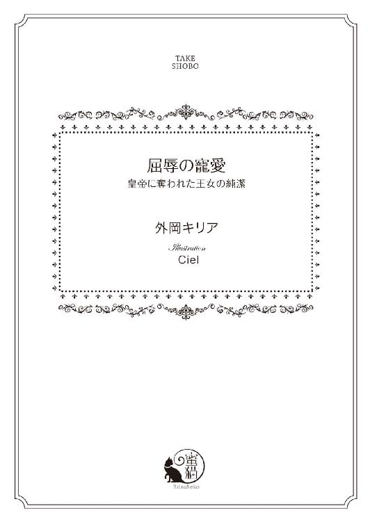

| 屈辱の寵愛 皇帝に奪われた王女の純潔 (蜜猫文庫) | |
| 外岡キリア | |
| 竹書房 (2015) | |

この作品は縦書きでレイアウトされています。
また、ご覧になる機種により、表示の差異が認められることがあります。
一部の漢字が簡略字で表示されていることがあります。
イラスト／Ｃｉｅｌ
序章
「父上、どうかお逃げになってください」
リディアンヌ・マリア・フォーレスタは、玉座に腰かけているアガレア国王の前に跪き、必死の説得を試みていた。
金の肩章、飾諸が付いた詰め襟の白い制服に身を包み、膝丈の黒い長靴を履いている。
自慢の長い金髪は後ろで一つに束ねて赤い布を巻き、腰には長い剣を携えていた。
リディアンヌはアガレア国の第一王女にして、近衛師団の隊長。気品のある顔立ちで堂々としているが、まだ十八歳になったばかりだ。
「私はここに残る」
「父上、お願いです、ここは私たちにお任せください」
すっくと立ち上がり、父王の腕を掴む。
長々と説得をしている時間などない。
一方的に戦いを挑んできたザウバルン帝国の軍隊が、すぐそこまで迫ってきているのだ。
長い間、平和を維持してきたアガレア国にも軍隊はある。だが、兵たちは戦うことに慣れていない。
一気に攻め込んできたザウバルン帝国軍は、瞬く間に王都を占拠し、王城の門を打ち破ってきたのだ。
側近たちはアガレア国王の命令によって城から退去させられた。逃げ切ることができたのかどうかは不明であり、命あることを願うしかない。
「父上、さあ」
強引に父王を立ち上がらせ、ぴったりと閉じられている扉を振り返った。
扉の向こうでは、近衛師団が国王の間を守っている。だが、豪腕の侵入者たちを防ぐことは難しいはず。
剣を打ち合う音、男たちの悲鳴にも似た叫び声、床を踏みならず軍靴の音が、どんどん迫ってくる。
もう間もなく、あの扉も破られるだろう。一刻も早くアガレア国王を連れ出さなければ。
「リディアンヌ、私はすでに覚悟を......」
扉を蹴破る音に、国王の悲痛な声が掻き消された。
黒い軍服を纏ったザウバルン帝国軍が、国王の間に雪崩れ込んでくる。
リディアンヌは父王を庇うように前に立ち、すかさず長い剣を抜いて構えた。
国王を守るのが近衛師団隊長の役目。自らの命と引き替えにしてでも、守らなければならない。
「アガレア国王か？」
先頭に立って押し入ってきた男が、前に歩み出てくる。
その手には、血が滴る長い剣があった。
他の兵たちに比べて一際、背が高く、一人黒いマントを羽織っている。
艶のある茶色の髪、力強い瞳、日に灼けた肌、凜々しい顔立ちをした屈強そうな男。
まだ若いように見えるが、その出で立ちからして位が高いとわかる。
だからといって、リディアンヌは怯んだりしない。
「アガレア国近衛師団隊長にして第一王女、リディアンヌ・フォーレスタだ。父王は私が命を懸けて守る」
声高に言い放ち、マントを羽織った男に切っ先を突きつける。
「ほう......」
唇の片端を引き上げた男が、馬鹿にしたような視線を向けてきた。
「アガレア国にはたいそう美しい近衛師団長がいると伝わってきていたが、姫君だったとは驚きだ」
見下すようなあからさまな男の視線。完全にこちらを舐めてかかっている。
こんな男に自分の存在を知られていたのかと思うと、腹立たしくなった。
きっと、飾り物の近衛師団長だと馬鹿にしているのだろう。
「女を相手に戦えないとでも？」
一向に剣を構える気配を見せない男に苛立ちが募り、リディアンヌはすっと前に出る。
「王女で近衛師団長とはなんとも勇ましい限りだが、剣の扱いにかけてはザウバルン帝国一と名高い皇帝の俺と勝負をする勇気があるのか？」
にやりと笑った男が剣を軽く振り、刃から滴る血を飛ばす。
なんてこと、この男がザウバルン帝国の皇帝なの────。
先頭を切って飛び込んできたのが、憎き皇帝アレクサンドル・レオン・ヴァルケンガーと知り、剣を握る手に自然と力がこもる。
この男のために、罪もない民が幾多も命を落とした。平穏で美しい街並みを凄惨なものへと変えた男。リディアンヌの中にかつてない怒りと憎しみが湧き上がる。
「おまえになど負けるものか！」
胸を張って声を響かせ、アレクサンドルを見据えた。
「下がっていろ、手出しは無用だ」
後方で剣を構えている兵たちに命じたアレクサンドルが、切っ先を下に向けたまま前に出てくる。
「アガレア国王、なかなか勇ましい姫君をお持ち......」
「父上に近づくな」
リディアンヌは勢い良くアレクサンドルに斬りかかっていく。
あの男が欲しがっているのは父王の命。隙を見て殺すつもりなのだ。
「ハッ」
短い声を上げたアレクサンドルが、素早い動きで剣を振るい、易々とリディアンヌの刃を弾いてくる。
軽く振り上げたように見えて力強い一撃。剣を持つ手ばかりか、腕までが痺れた。
一筋縄ではいきそうにない。だがこちらも、制服に身を包んで剣を握っているのは伊達ではないのだ。腕には自信がある。
リディアンヌはアガレア国王の唯一の子。世継ぎの王子がいない父王の寂しさを幼心に感じ取り、自ら申し出て剣と馬の扱いを習った。
女だてらに強くなってどうすると笑われもしたが、剣を交えたり、一緒に馬を走らせているときの父王は幸せそうで、毎日のように稽古の相手になってもらった。
息子がいない父王の寂しさが、少しでも薄れたらいいと思ってのことだったのに、剣と馬の扱いが上達するほどに楽しくなり、無理を言って近衛師団に入団していた。
近衛兵になれば、いつも最愛の父王のそばにいられるから、リディアンヌにとって一石二鳥だったのだ。
とはいえ、王女としての自覚が失せたわけではない。王子がいない以上、自分が父王の後を継ぐしかない。
いずれ生涯の伴侶となる男性と結婚をし、アガレア国を統べる女王になるのだと、覚悟は決まっていた。
だが、ザウバルン帝国の侵略によって、その覚悟も無用のものとなってしまったようだ。
平和で豊かなアガレア国を失うのは悲しい。未来永劫、この国は続くと思っていたのに。
それも儚い夢となって散りかけている今、リディアンヌの頭にあるのはアレクサンドルを倒すことだけだった。
「どうした？ もう降参か？」
腕の痺れを我慢しているリディアンヌを、悠長に笑いながら煽ってくる。
絶対に勝ち目がないと決めてかかっているのが、その表情から簡単に見て取れた。悔しくてならない。一撃で戦いを放棄などするものか。
「私を甘く見ると後悔するぞ」
気丈に言い放ち、剣を構え直す。
「なるほど」
大仰に長いマントを翻したアレクサンドルが、ようやく切っ先を向けてきた。
どうやら本気になったらしい。
「ハ───ッ」
気合いを入れ、真っ直ぐに剣を突く。
なるべく刃を合わせたくない。打ち合いになってしまえば、力で負けてしまうのは目に見えてるからだ。
「甘いっ！」
アレクサンドルが軽やかに飛び上がって切っ先をかわす。
なんて鮮やかな身のこなし。大きな身体が蝶のようにヒラリと舞い上がった。
「ハッ」
何度、狙いを定めて剣を突いても、右に左に軽々と避けられてしまう。
刃はアレクサンドルの軍服すらかすめない。
一方的に攻撃を続けているリディアンヌの首筋に、いつしか汗が伝い落ちる。
あれほど剣の腕には自信があったのに、まったく歯が立たない。
自分より遙かに大きな身体をしているのに、ひらひらと刃をかわされて苛立ちが募る。
焦りは禁物。頭では理解していても、相手にならない悔しさに冷静さを失っていく。
「もう息が荒くなっているぞ」
「うるさい！」
指摘されて頭に血が上ったリディアンヌは、両手でしっかり剣を握り直し、体当たりする勢いで突進していった。
相手の懐に飛び込んでいけば、自らの身を危険に晒すことになる。繰り返し父王が口にした言葉も、すっかり吹き飛んでしまっていた。
「リディアンヌ！」
父王の声が部屋に響く。
ハッとしたその瞬間、両手に衝撃が走った。
「くっ......」
勢い余ってよろめき、無様に尻餅をつく。
アレクサンドルの一撃によって弾き飛ばされた剣が、天井近くでクルクルと回転している。
「俺に戦いを挑むには早すぎたようだな」
アレクサンドルは勝ち誇ったように笑いながら落ちてきた剣を片手で受け止め、切っ先をリディアンヌの喉元に突きつけてきた。
驚くほど呆気ない幕切れ。まるで戦いにならなかった。こんなにも自分を無力に感じたのは初めてだ。
「アガレア国王を捕らえろ」
アレクサンドルの命令を受け、数名の兵が父王に駆け寄って行く。
死を覚悟していた父王は、兵に抵抗することなく国王の間を連れ出される。
「父上......」
守れなかった悔しさに溢れた涙が頬を伝い落ち、大理石の床を濡らしていく。
敵国に捕らえられた王の処遇など訊ねるまでもない。死、あるのみだ。その場で殺さず捕らえたのは、公開処刑にするつもりでいるのかもしれない。
「リディアンヌ姫、そなたの負けだ」
喉元に突きつけていた剣を遠くに放ったアレクサンドルが、床に片膝をついて顔を覗き込んでくる。
「早く殺せ！」
「そう急ぐこともない」
短く答えたアレクサンドルを、リディアンヌは唇を噛んで睨み上げる。
なぜ生かしておくのか理解できない。敵国の王女など、斬り捨ててしまえばいいものを。
まさか、男を楽しませる道具として使うつもりでいるのか？ 得体の知れない男に清らかな身体を汚されるくらいなら、潔く自害した方がまし────。
「さあ、立て」
アレクサンドルの言葉を無視したリディアンヌは、腰に差している短剣を逆手で抜き取り、素早く己の胸に切っ先を向けた。
「あっ......」
胸に突き刺すより早く、蹴り上げてきた軍靴の先で短剣を飛ばされる。
音を立てて床に落ちた短剣が、遠くへと滑っていく。
「命を粗末にするな」
床に片膝をついたアレクサンドルに、片手で顎をきつく掴まれる。
痛いくらいに指が食い込んできた。
さんざん人の命を奪ってきたくせに、いまさらなにを言っているのか。
ここで死なれたら、弄ぶことができなくなる。その程度のことしか考えていないくせに。
「慰み者になるくらいなら、私は死を選ぶ」
「勇ましいだけでなく、潔いのだな。リディアンヌ姫、そなたが気に入ったぞ」
高らかに笑って顎から手を離したアレクサンドルが、その場にすっくと立ち上がる。
「アガレア国の王女だ、丁重に扱え」
命を受けた兵たちが、一気に取り囲んできた。
「私に触ることは許さない！ 手を離せ！」
喚き散らしながら無礼な手を払いのけるが、そんなことをしたところで屈強な男たちには敵わない。
「怪我をしたくなければ大人しくしていろ」
腕を組んで眺めていたアレクサンドルの言葉に、仰向けの状態で四肢を掴まれ、高々と持ち上げられたリディアンヌは怒りが爆発する。
「おまえを一生許さない、いつかきっと地獄に堕としてやる」
顔を横に向けて言い放ち、声をあげることしかできない屈辱に唇を噛みしめて堪えた。
すべてを奪われて絶望の縁にいるというのに、死ぬことすら許さない、情けの欠片もない非道な男────ザウバルン帝国皇帝アレクサンドル。
敵国の兵によって国王の間から運び出されていくリディアンヌは、憎くてたまらない男の名を胸に深く刻んでいた。
第一章
「早く下ろして！」
リディアンヌが喚くと同時に宙を舞った身体が、柔らかな緋色の寝具に深く沈み込む。
アレクサンドルに担がれ、豪奢な部屋まで運ばれてきたうえに、天蓋付きの巨大な寝台に放り出されたのだ。
アガレア国から五日をかけて辿り着いたのは、憎き敵国、ザウバルン帝国。
捕虜となったリディアンヌに許された衣服は、肌が透けて見えるくらい薄い絹地で仕立てた長い衣だけ。
髪を纏めている赤い布も奪われ、豊かな金髪が緋色の寝具に波打ちながら広がっている。
ザウバルン帝国へと移送される中、リディアンヌが幾度となく自害や脱走を試みたため、恥ずかしくて人前に出られないような薄絹を纏わされたのだ。
生まれ育った国を奪われ、父王の生死もわからず、端女よりも酷い姿を強いられている。
生き恥を晒すくらいなら、いっそ死んで楽になりたいのに、それすら許されないリディアンヌは絶望の淵にあった。
「なぜ私を生かしておく？ 敵国の王女になど、なんの価値もないはず」
起き上がるのが馬鹿らしく思え、仰向けになったままアレクサンドルを睨めつける。
「そなたには生かしておくだけの価値が充分にある」
寝台の脇に立っている彼が、マントを外して放り投げた。
見下ろしてくる力強い瞳に、リディアンヌは急に恐怖を覚える。指先の震えを隠すため、きつく手を握り締めた。
「いったいどんな価値があると？」
怯えているのを悟られたくなくて、努めて平静を装ったけれど、頬の引き攣りを止めることはできない。
「そなたの価値を知りたいか？ ならば教えてやろう」
意味ありげに笑ったアレクサンドルが、寝台に片膝を乗せてきた。
急激に二人の距離が縮まり、リディアンヌの鼓動が跳ね上がる。
やはりこの男は、自分を弄ぶつもりで生かしておいたのだ。国を滅ぼした卑劣な男に、純潔を奪われるなんて我慢ならない。
勢い良く身体を起こしたリディアンヌは、間近にあるアレクサンドルの頬に力一杯の平手打ちを食らわせる。
「私はおまえの慰み者になどならない」
一瞬、顔をしかめた彼を睨みつけたまま、寝台の上で後じさって距離を取った。
あの窓から────。
目の端が捕らえたのは、天鵞絨の幕に覆われたアーチ型の大きな窓。
確か、この部屋にくるまでに幾つもの階段を上がってきた。
窓を開けて飛び降りれば、きっと死ぬことができる。
「気位の高さは、さすが王女といったところか」
叩かれた頬を片手で擦りながら不敵な笑みを浮かべたアレクサンドルが、寝台に飛び乗ってきた。
隙を窺うどころか、両足を乱暴に引っ張られ、あっという間に組み敷かれてしまう。
「どきなさい！ 指一本、私に触れることは許さない」
身体を押さえ込んでくる力に、無駄な抵抗にしかならないとわかっている。
それでも叫ばずにはいられなかった。
「そなたは仮にも王女だ、無礼な扱いをするつもりはない」
力尽くで組み敷いてきたのだから、充分に無礼な扱いだ。いったいアレクサンドルはなにを言っているのか。戯れ言にしか聞こえない。
「この扱いが無礼でなくてなんだというの？」
「言葉が足りなかったようだな。大人しくしていればの話だ」
「慰み者にされようとしているのに、大人しくなどできるわけがないでしょう」
「では、しかたない」
わざとらしく深い息をもらしたアレクサンドルが、怒りに顔を紅潮させているリディアンヌから離れて床に下りる。
あんな言い方をしたのだから、諦めたはずがない。では、彼はなにをするつもりなのか。
どちらにしろ、大人しくなどできるわけがないリディアンヌは、寝台から下りる機会を慎重に窺う。
部屋はとても広く、寝台から窓までかなりの距離がある。けれど、アレクサンドルは寝台の反対側に立っている。一目散に駆けていけば、掴まる前に窓から飛び降りられそうだ。
「あっ......」
窓に気を取られていたリディアンヌは、いきなり腕を引っ張られて我に返る。それと同時に手首に鎖が巻きつけられ驚愕した。
「なにをしているの？」
アレクサンドルをキッと睨みつけ、力任せに手を引く。
ジャラリと音を立てた鎖が一直線になり、手の動きが途中で止まった。
手首に巻かれた鎖は、寝台の柱から繋がっている。
「大人しくできないそなたが悪い」
足元の柱へと移動したアレクサンドルに片方の足首を掴まれ、手と同じように鎖で繋ぐ気でいると察したリディアンヌは懸命に足先を振り回す。
けれど抵抗などものともしない彼は、いとも簡単に鎖を足首に巻きつけ自由を奪ってきた。
「いや────っ」
まだ自由に動く片側の手で、必死に鎖を外そうとする。
簡単に巻きつけただけなのに、なぜか幾ら弄っても外れない。
全身が冷たい汗に覆われてくる。こんな辱めはとうてい受け入れ難い。
アレクサンドルが寝台から下りた瞬間に、窓に向かって駆け出していれば良かった。
あの時だったら、間に合ったかもしれない。慎重になりすぎたことが、今さらながらに悔やまれてならなかった。
絶対にアレクサンドルを許さない。屈辱を味わわせるために自分を連れ帰った彼の命を、必ずこの手で仕留める。そうしなければ、死んでも死にきれない。
「自力では外せない」
後悔と復讐の念に駆られていたリディアンヌは、自由に動かせる手をアレクサンドルに掴まれて息を呑んだ。
「いやっ」
慌てて手を引っ込めようとしたがもう遅い。
手首に鎖が巻きつけられ、気がつけば四肢の自由が奪われていた。
「なかなかいい眺めだ」
アレクサンドルが寝台の端に腰かけ、唇を噛みしめているリディアンヌを笑いながら見下ろしてくる。
「乳首が透けているな」
薄い絹地を盛り上げている乳房を鷲掴みにし、荒々しく揺さぶってきた。
「触らないで」
声を張り上げて身を捩ったけれど、四肢を繋ぐ鎖に邪魔をされて彼の手から逃れることはできない。
「まだ小さいが、色も形も美しそうだ」
アレクサンドルはこともあろうに、長い衣の裾を勢い良く捲り上げてきた。
抗う術もなく、首から下を露わにされる。
豊かに盛り上がった乳房、金色の繁み、すんなりと伸びた脚のすべてが彼の目に晒された。
とてつもない羞恥に、リディアンヌの白く滑らかな肢体が赤く染まる。
「色味も薄く、形も整っているな」
指先で乳房の頂点を撫でられ、勝手にヒクッと肩が動く。
「獣！ 汚らわしい手を今すぐどけなさい」
気持ちを強く持っていないと、羞恥に押し潰されてしまいそうだった。
殺したいほど憎い男の目に、清い身体を晒す屈辱。
王女として生まれ、いずれアガレア国の女王になる身であったのに、なぜこんな男に辱められなければならないのか。
悔しさのあまり溢れてきた涙が止まらない。こめかみを伝い落ちる涙が、しとどに緋色の寝具を濡らしていく。
「強がっていられるのも今の内だ」
寝台から腰を上げたアレクサンドルが、壁の前に置かれている飾り棚に向かう。
リディアンヌは唯一、自由に動かせる頭を横に倒し、彼の動きを凝視する。
背を向けて飾り棚の上を眺めている彼は、なにかを選んでいるようだ。
裸同然の姿にされた時点で、彼はそのまま勢いに任せて犯してくるものと思っていた。
そうしなかった理由はなんだろうか。男女の行為など詳しく知らないから、考えたところでわからない。けれど、なにもわからないから、余計な恐怖を煽られる。
しっかりしなければ───。
なにをされても、気持ちを強く持つのだ。王女としての矜持を捨ててはいけない。
拒絶の声をあげたり、抗ったりするのは、アレクサンドルを喜ばせるだけだ。人形のように感情を無くしてしまえば、彼も興醒めして相手にするのがつまらなくなるに違いない。
「この香りがいいだろう」
独り言を口にしたアレクサンドルが、先が細く尖った瓶を手に戻ってきた。
再び寝台に腰を下ろし、これ見よがしに持っている瓶を振ってみせる。
「そなたの身体に眠っている官能を呼び覚ます薬だ。これを使えば、どれほど貞淑な女も快楽に抗えなくなる」
耳を塞ぎたくなるような恐ろしい言葉。
どれほどの屈辱にも負けないと、心に言い聞かせたばかり。それなのに、淫らな薬など使われてしまったら、どうしようもない。
徹底的に辱めようとするアレクサンドルに対する憎しみが、これまで以上に強くなる。
「よい香りだぞ」
彼が軽く捻って開けた蓋を、床に投げ捨てる。
音もなく敷物の上に落ちた蓋が、コロコロと転がっていく。
「ほら、嗅いでみろ」
瓶の口を鼻に近づけてくる。従うのが嫌で顔を背けると、瓶の中身を唇に垂らしてきた。
少しとろみがあり、油のようにも感じる。香油の類いだろうか。
無意識に吸い込んでしまった香りは、焼きたての菓子のように濃厚で甘い。
こんなもので官能を呼び覚ますことができるのだとしたら、ちょっと不思議だ。
「やっ......」
胸の先端に液体を垂らされ、冷たさに驚いて大きく腰を跳ね上げる。
「この程度のことに感じているのか？」
「感じてなどいないわ」
からかってきたアレクサンドルにすぐさま言い返し、プイッとそっぽを向く。
無心になるのよ、なにも考えてはダメ────。
強い気持ちでいれば、薬など効かないかもしれない。彼の意のままにはならない。それだけを心に念じて固く目を瞑る。
ポタポタと肌に落ちてくる液体が、臍、下腹、さらにその下へと移っていく。
「ひっ......」
いきなり指で繁みを掻き分けられ、引き攣った声をもらして目を瞠った。
誰も触れたことがない場所。そこに触れられた衝撃は大きく、全身が凍てついたように硬くなる。
「ここも色が浅いな」
掻き分けた繁みの奥に視線を感じたリディアンヌは、たまらず腰を捩った。
ジャラジャラと鎖の虚しい音が響くだけで、彼の手から逃れることはできない。
「ふっ......ん」
繁みの間に隠れた肉芽に液体を垂らされ、初めて味わう甘酸っぱい感覚に自然と鼻にかかった甘声が零れ落ちた。
それは、自分でもこれまで聞いたことがない、淫らな響きを持った羞恥を煽ってくる声。耳を塞ぎたくなるような。
どうしてこんな声が......いったい自分の身体になにが起きたというの───。
「早くも快感を得ているのか？ 随分と感度がいいではないか」
新たな雫が肉芽に落ちてくる。
「ああぁ......」
じんわりと広がっていった心地よい痺れに、勝手に下腹が大きく波打つ。
快感って......この溶けてしまいそうな気持ちよさが快感────。
初めて耳にした言葉。こんな男から教えられたくなかった。
「あっ......や......」
痺れに包まれている肉芽を指先で撫で回され、許し難い行為に拒絶の声をあげたいのに、言葉にならない。
すぐにでも手をどけて欲しいのに、触れられているそこがあまりにも気持ちよすぎて、腰が揺れてしまう。
執拗に撫でられる肉芽が、次第に熱く疼き出してきた。心臓と同じように、トクントクンと脈打っている。
無心でいなければいけないのに、甘く痺れる肉芽にどうしても意識が向かってしまう。
きっと薬が効き始めているのだろう。どれほど意識を逸らそうとしても、すぐに舞い戻ってしまった。
「ああっ......ん、んんっ」
急に湧き上がってきた掻痒感を、唇を噛みしめて堪える。
熱を持った肉芽が痒くてたまらない。乳首までがチリチリとしてきた。
「んふ......っ、く」
刺激がもう少し強かったら、痒みが治まるような気がするのに、彼は緩やかな速度で撫で回し続ける。
「はっ......やぁ」
自分の手で掻き毟れないもどかしさに涙声をもらし、肉芽を撫でている彼の指に縋るように腰を何度も上下させる。
自分の意思では無い。もう身体は意のままにならない。ただただ痒みから逃れたくて。
それなのに、何をしても痒みは消えない。それどころか、酷くなっていく。どうにも我慢できなくて、我を忘れて髪を振り乱し、手足をばたつかせる。
「どうにかして、早く......おかしくなってしまう......」
「俺は寛大で優しい男だ、望みは叶えてやる。どこをどうして欲しいか言ってみろ」
肉芽から手を遠のけたアレクサンドルが、汗にまみれて紅潮したリディアンヌの顔を覗き込んできた。
すべてを奪い、なおかつ辱めてくるこの男には憎悪しか感じていない。それなのに、今ここで縋れるのはこの男だけ。
望みを口にするのは、屈辱に屈辱を塗り重ねるも同じ。こんな男に頭を下げるような真似などしたくない。リディアンヌの心が千々に乱れる。
「根比べか？」
腰のくびれを指でなぞり出す。
気が触れてしまいそうなほど疼いているのは、そこではないのに。
わざとね────。
言葉にしなければ願いは叶わないと、暗に知らしめているに違いない。
本当に酷い男だ。泣いて縋るだけでは決して許してくれない。いったい、どこまで辱めれば気が済むのか。
「あふ......っ」
金色の繁みを指先でさわさわと撫でられ、くすぐったさに身をくねらせる。
肉芽に触れそうで触れない指がもどかしくてたまらない。もうこれ以上は我慢できそうにない。それでも、絶対に望みは口にしないと心に固く誓う。
「私は......気が触れてもかまわない......おまえになど......くっ......」
「なるほど」
笑ったアレクサンドルが、繁みの奥にツッと指を滑らせてくる。
「もう......触らないで......私に......」
いくら言葉では拒絶しても、せがむように腰が小刻みに揺れてしまう。
すでに気が触れる寸前まで追い込まれていた。
「ここが痒いのだろう？ このままではさぞかし辛いだろうな」
痒くなるようなことをしたのは自分のくせに、まるで他人事のように言うアレクサンドルが恨めしい。
許し難い男。リディアンヌは頭を起こし、込み上げてきた怒りをそのままぶつける。
「その手をどけて！ 少しも辛くなど無いわ」
強がってみたところで、顔は涙と汗でぐちゃぐちゃになっている。
すると、リディアンヌの顔を見つめていたアレクサンドルが、唐突に手を引っ込めた。
「なっ......」
「そんな顔をするな、俺は優しい男だといったはずだ」
にやりとしたアレクサンドルが、悠長に上着の釦を外し始める。
いったい何をするつもりなのか。優しさの欠片もないこの男が次に何をしてくるのか、考えるだけで恐ろしい。
「少し赤く色づいてきているな」
上着を脱ぎ捨て、シャツの袖を捲り上げた彼が、両手で金の繁みを掻き分け、疼く肉芽を直視してくる。
怒りよりも羞恥が勝り、リディアンヌは咄嗟に顔を背けた。それでも、強い刺激を求め続ける身体が、心とは裏腹に妖しく揺れ動く。
「強請り方も心得ているらしい」
「ひゃ────」
肉芽をかすめた吐息に、悲鳴をあげて腰を浮かす。
「あああぁ─────っ」
吐息の刺激でむず痒さが増した肉芽をきつく吸い上げられ、あまりの気持ちよさに腰が深く沈んだ。
秘所に顔を埋めてくるなんて、あってはならないこと。けれど、手足の自由を奪われているから押し退けることもできない。
いや、たとえ両手が自由であったとしても、今はなにもできなかっただろう。肉芽から染み渡っていった甘い痺れに、身体中の力が抜け落ちてしまっていた。
「ああぁ......」
肉芽を舐められ、軽く噛まれ、たまらない快感に頭の中に白い靄がかかってくる。
憎い男に辱められているのに、感じてしまっている自分が信じられなくて許せない。
「ひゃ......う......」
肉芽をことさらきつく吸われ、顎が大きく反り返りる。
こんな風に感じてしまう自分が許せない。けれど、痛いのに気持ちがよくて、痒みのことなどすっかり忘れた。
「はぁ......ああぁん......」
吸う、舐める、噛むを繰り返され、甘ったるい声が途切れることなく唇から溢れる。
腰は嫌らしく揺れ動き、身体の内側から熱が高まってきた。
「ひっ......ぃ......ふぅん......」
このまま続けられたら、自分はどうなってしまうのだろう。
どれほどアレクサンドルを憎んでも、身体は別物のように反応する。
肉芽から湧き上がってくる快感が、淫靡な熱となって身体を侵食していく。
あまりにも気持がよすぎて、不安すら覚えた。
「っ......んっ......んん」
なんの前触れも無く、熱いうねりが襲ってきた。と間もなくして、アレクサンドルの口に含まれている肉芽が炸裂した。
「ああああぁ─────────っ」
腰を大きく突き出し、強烈な痺れに丸ごと飲み込まれていく。
なにが起きたのかさっぱりわからない。ただただ全身を満たしていく痺れが気持ちいい。
「んっ」
脱力した身体が、深く寝台に沈んでいく。
屈辱にまみれて初めて味わった悦楽。
こんな男に弄ばれて感じてしまうなんて、恥以外のなにものでもないのに。
違う......おかしな薬さえ使われなければ、きっと感じたりしなかったはず。最後まで抵抗できなかったのは、すべて薬のせい。
「はぁ......」
ただならない脱力感に考え事すら億劫になり、重くなった瞼を閉じて余韻に浸る。
「達したようだな」
頭が朦朧としてきたリディアンヌの耳には、もうアレクサンドルの声は届いていなかった。
第二章
「父上！」
自分の声に驚いて目を覚ましたリディアンヌは、瞳に映った見慣れない景色に眉を顰めて起き上がる。
「あっ......」
緋色の上掛けがずり落ち、何も身につけていないことに気づいて愕然とした。
「ここはザウバルン帝国......」
昨日の出来事が一気に脳裏を駆け巡る。
慌てて手首と足首に目を向けた。
無闇に足掻いたせいで、鎖の痕がくっきりと残っている。
四肢を鎖で柱に繋がれ、淫らな薬を使われ、快楽の水底へと突き落とされた。
途中で意識を失い、その後の記憶が無い。
きっと気絶している間に純潔を奪われてしまったのだろう。
アレクサンドルは自分を犯すことが目的だったのだから、たとえ気を失っていようがお構いなしに清らかな身体を弄んだに違いない。
「なんてこと......」
両腕で自分を抱きしめ、深く項垂れる。
夫となる男性に捧げるために守ってきた純潔を、卑劣極まりない男に奪われてしまった。
可愛がってくれた父王、そして、娘の成長を見ることなく命を落とした母親に申し訳なさが募る。
「父上......」
そういえば、父王はどうなったのだろうか。
攻め落とした国の王を、あの男が長く生かしておくとは思えない。早朝に処刑されてしまったかもしれない。
「もう生きていてもしかたない......」
国を滅ぼし、父王を亡き者にし、自分を辱めたアレクサンドルを死に至らしめなければ、決して気持は晴れないだろう。
けれど、剣が手元にない。
仮に剣を手に入れることができたとしても、自分より剣術に長けている彼を殺すことは難しい。
すぐにでも命を奪わなければ、この先も辱め続けられるのは目に見えているのに。
これ以上の屈辱は味わいたくない。それくらいなら、いっそ死を選ぶ。
「窓から......」
早くしないとアレクサンドルが戻ってくるかもしれない。
ふらふらと寝台を下りたリディアンヌは、上掛けの足元に軽く畳まれて置かれた薄い絹の衣を身に纏う。
上等な絹ではあるが、身に着けていないも同然の薄さで、窓から飛び降りたら派手に捲れ上がってしまいそうだ。
「どうせ死ぬのだから......」
見るに堪えない死に様であっても、羞恥など感じることもない。
裸でウロウロするのが嫌だから身に着けただけ。そんな意味のない言い訳を考えながら、素足のまま窓に向かう。
与えられたのは本当にこの薄い衣一枚のみ。卑劣な男に履き物すら取り上げられてしまったのだ。
「こんな最低の朝は初めてだわ」
窓の前で小さく息を吐き出し、天鵞絨の幕を勢い良く開ける。
目も眩むほどの陽差しに、薄暗かった部屋が一気に明るくなった。
顔を背けて陽差しから逃れ、手探りで窓の錠を探す。
すぐに小さな取っ手が見つかったけれど、片手では容易に持ち上げられない。
正面に向き直り、両手で錠を掴んだところでがっくりと項垂れた。
「忌々しい......」
窓の外側に取り付けられた鉄の格子を一瞥して背を向け、その場から部屋を見回す。
何度か自害を試みたのだから、鋭利な刃物が部屋にあるわけがない。そこまでアレクサンドルは愚かでは無いはずだ。
窓から飛び降りることもできない。胸を切り裂く刃もない。残された方法は首を括ることくらいだろうか。
「あの鎖......」
昨日、使われた鎖を思い出し、寝台に走って行く。
鎖は四方の柱に取り付けられていたのに、一つも残っていない。
「なんて用心深いのかしら」
命を絶つ道具になるものは、すべて片づけたようだ。
鎖を外したくらいなのだから、紐など探してもみつからないだろう。
なければ自分で用意するだけ。
死ぬことしか頭にないリディアンヌは、寝台から邪魔な上掛けを脇に避け、下に敷き詰めてある布を引きはがす。
「丈夫そうだわ」
布は厚手の絹地で、裂いて縒り合わせれば強い紐ができそうだ。
紐を吊す場所を探す必要があったが、まずは紐作りから始める。
「うんっ」
絹地の端をしっかりと咥え、力任せに噛み切る。
わずかな切れ目しかできなかったけれど、取っかかりさえあれば容易に裂けそうだった。
両手で布を掴み、あらん限りの力で引き裂いていく。
布が裂ける大きな音に思わず手が止まったけれど、ここで怯んでいる場合ではないと作業を続ける。
「はぁ......」
ようやく一本の細い布ができた。
三本くらい縒り合わせれば充分そうだ。
細く切り裂いた布を寝台に置いたリディアンヌが、改めて絹地を噛もうとしたそのとき、扉が開く音が聞こえてきた。
裂いた絹地を隠す間もなく、アレクサンドルが寝所に姿を見せる。
出で立ちは昨日より派手だ。金の装飾が贅沢に施された高い詰め襟の上着に、脇に金の太い線が入った黒いズボンの裾を、金の留め金が付いた長靴にたくし込んでいる。
「またそんなことを......」
リディアンヌの手元を見てすぐに察したのか、呆れたように笑った彼が風を切るような勢いで歩み寄ってくる。
「命を粗末にするなと言ったはずだ」
寝台から裂いた布を取り上げ、リディアンヌの手から残りの絹地を奪う。
「国を滅ぼした男に辱められたのよ、生きていたいと思うわけがないでしょう！ 私の命は私のものよ、どうしようと勝手だわ」
怒りに任せて声を荒らげ、アレクサンドルの手から絹地を奪い返して背を向ける。
「確かに命はそなたのものだ。だが、王女であるそなたが自害などしたら、慕ってきた民たちはどう思うだろうな？」
「なにが言いたいの？ 言いたいことがあるなら、はっきりと言ったらいいでしょう」
含みを持たせた言い方が気になって振り返ったリディアンヌは、厳しい視線をアレクサンドルに向けた。
「国に残された民たちは、王女は我々を見捨て楽な道を選んだと嘆くに違いない」
「私は民を見捨ててなど......」
リディアンヌは唇を噛みしめる。
民のことを忘れてなどいない。
王女である自分が真っ先に考えるべきは、苦しい立場に置かれている民たちのことだけ。
父王亡き今、民を守れるのは自分しかいない。
あまりにも衝撃的な出来事があったから、我を忘れてしまったにすぎない。
この命はアガレア国の民とともにある。
錯乱状態にあったからといって、自ら命を絶とうとするなど王女として絶対にあってはならないこと。
民を裏切ってはいけない。決して死んだりしてはいけない。王女として生まれたからには、王女としての務めを果たす義務がある。
無念の死を遂げたであろう父王に報いるためにも、王女として成し遂げるべきことがある。
「私はアガレア国の王女よ、民を見捨てたりしない。国を奪われて苦しむ民のために、私は必ずおまえの首を取り、アガレア国を再建するわ」
声高に言い放ち、絹地を投げ捨ててアレクサンドルを見据える。
「お手並み拝見、といったところか」
そう言って小さく笑った彼は、おまえになどできるものかと馬鹿にしているようだ。
ここでいくら強気の発言をしたところで、所詮は負け犬の遠吠え。そんなふうに思っているのだろう。
どうせ、民のことを持ち出して煽ってきたのも、欲望の捌け口として使い続けるために生かしておきたいからに決まっている。
アレクサンドルの考えなど、その程度のものでしかない。
それでも、かまわなかった。
すでに穢れた身となってしまったのだから、今さら守るものもない。
心にあるのはアガレア国の再建のみ。それを成し遂げずに死ぬことはできない。どれほど辱められようとも生き延びなければならない。アレクサンドルを亡き者にするために。
「笑っていられるのも今の内よ」
心が決まったリディアンヌは、冷ややかにアレクサンドルを見返す。
「味方の一人もいないこの国で、本気で皇帝の俺に挑もうとは......まったく、そなたのように気の強い女は初めてだ」
笑っている彼は、呆れているというよりは楽しそうに見える。
命を狙うと宣言されても笑っていられるのは、まったく相手にならないと決めてかかっているからだ。
本気の覚悟を馬鹿にされたのが悔しくてならない。真っ向から勝負を挑んでも勝ち目が無いことくらい理解している。
それでも、勝負の行方など戦ってみなければわからないものだ。
「おまえを殺すまでは絶対に死なないと心に決めたのだから、捕虜とはいえもう少しまともな衣服を与えていただきたいわ」
リディアンヌはあえて気高い王女らしく言い放った。
自分の気丈な振る舞いを、彼が面白がっているのは明らかだ。
ならば、寝間着のような姿でいることで、自尊心が傷つけられていると知れば、彼も聞き入れるはず。
「そうだな、王女には煌びやかなドレスこそ相応しい」
深く考えることもなく、アレクサンドルは要求を呑んだ。
笑みを浮かべてリディアンヌを眺めてくる彼は相変わらず楽しげで、その余裕綽々な態度に腹が立ってくる。
「皇帝の寛大さに心から感謝するわ」
腹立ちを抑え込んで礼を述べたリディアンヌは、ことさらにこやかにアレクサンドルを見返す。
「では、そなたが着ていた制服を届けさせよう。ドレスが仕立て上がるまでは、それを身に着けるがいい」
そう言ってさも満足そうにうなずく。
ますます腹が立ったけれど、いずれこの顔も見なくて済むようになるのだと思えば気持も穏やかなものに変わる。
「着替えの前に湯浴みをさせていただけるかしら？」
さらなる要求をしても、彼は機嫌を損ねることがなかった。
「捕虜とはいえ王女なのだから丁重に扱えということだな？」
一歩前に出てきたアレクサンドルが、大きな手でリディアンヌの顎を掴んでくる。
「王女である私に無礼な扱いはしないと言ったのではなくて？」
力強い輝きを放つ瞳で顔を覗き込まれ、一瞬、怯みそうになったけれど、目を逸らすことなく見つめ返す。
「なかなか侮れない王女だ。だが、その気概、おおいに気に入ったぞ。そなたにはこれまでと変わらぬ暮らしを約束してやろう」
満面に笑みを浮かべて顎から手を離すと、彼はリディアンヌを部屋に残して立ち去った。
その場に立ったまま耳を澄まし、扉が閉まったのを確認する。
「なんなのかしら......」
先ほど投げ捨てた絹地を床から拾い上げ、寝台へと運んでいく。
どうしてあんなにも簡単に要求を呑んだのだろう。
あれこれ交換条件を出してくると思っていたのに、あまりにもすんなりと要求が通ったものだから拍子抜けしてしまった。
それでも、捕虜として粗略に扱われることを考えたら、待遇がいいに越したことは無い。
「早く湯浴みがしたいわ」
もうすぐ身なりを整えられる。裸同然の姿で過ごさなくて済むようになるのだ。
丸めた絹地を抱えて寝台に座ったリディアンヌは、少しだけ晴れやかな顔をしていた。
◆◆◆
アレクサンドルの約束は、幾らもせずに果たされた。
側仕えの女官が部屋に寄こされ、湯殿で髪と身体を洗ってくれた。
女官の名はパティ。リディアンヌと同じ年頃で、赤みがかった髪を後ろで一つに纏め、あまり腰の膨らみが無い質素な黒いドレスを着ている。
どのような説明がなされたのか知らないけれど、仕事が丁寧でとても気が利く親しみ易い女官だった。
そして、湯浴みを終えて寝所に戻ってみると、近衛師団の制服が届けられていた。
制服が捨てられずにいたことだけでも驚きだったのに、戦いでかなり痛んでいたはずの制服がきちんと手入れされていた。そればかりか、剣も添えられていたから唖然とした。
アレクサンドルの考えていることが、さっぱり理解できない。自分の命を狙っている相手に武器を与えるなど、とても正気とは思えない。
なにか意図があるのか。もしくは、少しも恐れていないのか。どちらにしても、剣が手元にあるのは心強かった。
「まるで新しく仕立てたみたいだわ」
馴染みのある制服を、綺麗に洗った身体で着られる嬉しさに、リディアンヌは早速、純白のシャツを手に取り袖を通していく。
「リディアンヌさま、お召し物が濡れてしまいます」
白い布を広げて背後に回った女官が、洗い髪を拭いてくれる。
湯浴みを終えたばかりだから、まだ髪が乾いていないのだ。
細くしなやかな金髪は、思いのほか簡単に乾く。けれど、その短い時間を惜しむほど、早く制服を身に纏いたかったのだ。
「大丈夫よ、すぐに乾くわ」
パティに声をかけ、ズボン、上着と身に着けていき、寝台に腰かけて靴下と長靴を履いた。
改めて立ち上がり、上着の上に剣帯を巻いて鞘に剣を収め、指先で襟を正す。
これで制服姿の完成だ。肌が透けて見える薄い衣とは大違いで、制服を纏った途端に身の引き締まる思いになった。
「とても素敵です」
白い布を両手で握り締めたパティが、大きく目を瞠って見つめてくる。
「アガレア国には近衛騎士団長を務める絶世の美女がいると、戦いが始まる前から城内の評判になっていましたが、まさかリディアンヌさまのことだったとは......」
感無量といった顔つきで、長いこと彼女に見つめられ、少し照れくさくなった。
「ありがとう」
「御髪はどうなさりますか？」
パティから訊ねられ、まだ少し湿っている金髪を指で梳きながら考えているところに、まるで頃合いを見計らったかのようにアレクサンドルが現れた。
「着替えは終わったか？」
声を響かせながら颯爽と姿を見せた皇帝に、パティが慌てたように壁まで退く。
「下がっていろ」
リディアンヌの制服姿を見て身仕舞いが済んだと判断したのか、アレクサンドルがパティに部屋から出るよう命じた。
「御意」
深く頭を垂れたパティが、音も無く部屋を出て行く。
「王女らしからぬ姿だが、それはそれで凜々しくていいものだな」
腕組みをしたアレクサンドルが、感心したような面持ちで眺めてきた。
「私に剣を与えるなんて恐れを知らないのか？」
リディアンヌは柄に手を添え、彼に歩み寄っていく。
制服に身を包むと、自然と言葉遣いが勇ましくなる。
「おまえの命を奪うために、私はここにいるというのに」
今なら腕組みをしている彼より先に剣を抜き、切っ先を喉元に突きつけることができる。
またとない機会だ。これを逃す手はなかった。
一歩、また一歩と足を進めるが、彼は相変わらず腕組みをしたままだ。
「そなたの力量はすでにわかっているから恐れなどない」
そう言ったアレクサンドルがにやりと笑う。
自信満々な態度に、一瞬にして頭に血が上って剣を抜いた。
「二度も負けるか」
声をあげると同時に喉元目がけて素早く剣を突き出す。
「はっ」
軽やかに飛び退いたアレクサンドルが、目にも留まらぬ速さで剣を抜き取り身構える。
「そなたはすぐに冷静さを失う。それでは俺を倒すことなど無理だな」
心の内を見透かしたような言い方に、リディアンヌはますます熱くなった。
「余計なお世話だ」
語気も荒く言い放って唇を噛みしめ、狙いを定めて剣を振るう。
「修業が足りない」
含み笑いをもらして身を翻した彼に、あっさりと剣を叩き落とされた。
「くっ......」
衝撃の強さに膝から力が抜け、その場に頽れる。
「剣を交えるまでもないだろう？」
目の前に立ちはだかって自らの剣を抜いた彼が、項垂れているリディアンヌの顎下に切っ先を添えてきた。
肌に触れた刃の冷たさに息を呑んで動きを止め、上目遣いで彼を見る。
「勇ましい姿も美しいが、そなたは所詮、女だ。男に組み敷かれてこそより美しくなる」
ツッと切っ先を胸に滑らせたアレクサンドルが、制服の上着を飾る金釦を弾き飛ばす。
「なにを......」
続けざまに釦を飛ばされ、さらには腰に巻いた剣帯まで切り裂かれ、纏ったばかりの上着の前がはだけた。
「やめ......」
アレクサンドルが握る剣の切っ先が、シャツ越しに胸の突起を捕らえてくる。
チクッとした痛みに恐怖が駆け抜け、強がって言い返すことも出来ない。
「どうした？ 切っ先に感じたか？」
わずかな刺激に硬く尖った乳首を、切っ先で軽く突いてくる。
最初に感じたのは紛れもない痛みだったのに、切っ先が触れているそこがじんわりと痺れてむず痒くなってきた。
「感じてなど......」
認めたくないから、必死に首を横に振る。
「では、なぜ乳首が勃っているのだろうな？」
小さく笑った彼が、切っ先を乳首の下に添えてきた。
「立て」
刃の先端で乳首を軽く持ち上げられ、リディアンヌは恐る恐る立ち上がる。
自害すら許さなかった彼が、自分を殺すことはないだろう。けれど、傷つけないという保証はないから恐ろしくてたまらない。
「制服を脱げ」
「いや」
口を突いて出たのは拒絶の言葉。どんな辱めにも堪えると心に決めた。それは揺るがない決意のはずだった。それなのに、従うことができなかった。
「俺に制服を切り裂かれたいか？」
ズボンにたくし込んでいるシャツが、切っ先で引き出される。
たんなる脅しとは感じられない。彼は本気で制服をばらばらに切り裂きそうだ。
このままでは、いつか肌に刃が触れる。そんな恐怖に怯えながら制服を切り裂かれるくらいなら、自ら脱いだ方がいい。
「剣をどけて」
リディアンヌが気持ちを強く持って顔を上げると、アレクサンドルは満足そうに笑って剣を鞘に収め腕を組んだ。
身に着けてまだいくらも経っていない制服を、リディアンヌは自ら脱ぎ捨てていく。
時間を稼ぐ意味も無い。どうせ彼の命令を拒むことはできないのだから。
たわわな乳房が露わになり、隠したい衝動に駆られる。でも、そんなことをすれば叱責されるだけ。それがわかっているから必死に堪えた。
「っ......」
ズボンの腰に手をかけたところで、長靴を履いたままだったことに気づく。
どこかに腰かけなければ、一人で長靴を脱ぐことができない。
勝手に座っても大丈夫だろうか。長靴に目を向けたままリディアンヌは迷う。
「長靴を脱がしてやるから寝台に腰かけろ」
急かすように片手を振られ、寝台に移動して浅く腰かける。
間を置かず歩み寄ってきたアレクサンドルが、リディアンヌの長靴を両手で掴み、勢い良く引っ張る。
「あっ」
身体ごと持って行かれそうになり、寝台に手をついて踏ん張った。
彼は脱がした長靴を床に下ろすと、すかさずもう片方に手をかけてくる。
「そのまま仰向けになれ」
長靴ばかりか靴下まで脱がされ、ズボンだけとなったリディアンヌは、口にしそうになった拒絶の声を飲み下し、大人しく身体を後ろに倒す。
制服一式の中に下着が含まれていなかったから、ズボンを脱がされてしまったらすべてが露わになってしまう。
逃げ出したいほどの羞恥に、身体が震え出す。けれど、ここで抗ったりしたら、昨日のように四肢を拘束されてしまうだろう。
手足の自由を奪われ、淫らな薬を使われて身悶える恐怖はもう二度と味わいたくなかった。
「やっ......」
一気にズボンを下ろされ、思わず声が漏れた口を咄嗟に手で覆う。
目を閉じているのに、裸の身体に感じるアレクサンドルの視線に羞恥を煽られる。
「男を知らない身体はやはり美しいものだな」
彼のふとしたつぶやきに疑念が脳裏を過ぎった。
男を知らないとはどういうこと────。
昨日、気を失った後に犯されたものと信じて疑わなかったけれど、そうではなかったのだろうか。
そんな馬鹿な。アレクサンドルの目的は、自分を犯すことだったはず。なにもせずにいたなんて信じられない。
「私はまだ純潔を失っていないの？」
羞恥など忘れたリディアンヌは勢い良く身体を起こし、目の前に立っている彼を見上げる。
どうしても確かめずにはいられなかったのだ。
「俺は無礼な扱いをするつもりはないと言ったはずだ。そもそも気絶している女を犯すほど俺は非道ではないし、そこまで飢えてもいない」
呆れきった顔で見下ろされ愕然とする。
純潔は守られていた。けれど、喜びを感じたのはほんの一瞬だった。
「破瓜の痛みくらい味わわせてやるから安心しろ」
アレクサンドルに両方の膝を掴まれ、寝台に足を乗せられる。そのまま膝を大きく割られ、秘所が晒された。
「いやっ......」
両手で秘所を覆い隠す。
今は正気の状態だから、彼も気を遣う必要が無い。このまま犯してくるつもりなのだろう。
できることなら、清らかなままでいたい。純潔を奪われていないと知ったから、余計にそう思ってしまう。
「勇ましいのは制服を纏っているときだけなのか？ 潔さはどこへ行った？」
「裸を見られて平気な女などいないわ」
煽るような言葉を向けられると、つい言い返してしまう。
そんなことをしても無駄だとわかっているのに、恥ずかしいから黙っていられない。
「なるほど、ならばじっくり見てやろう」
笑いながら言ったアレクサンドルに、秘所を覆っている手を掴まれ、両脇に下ろされる。
「手はそこに置いたままにしておけ。少しでも動かせば昨日のように鎖で柱に繋ぐぞ」
なんて意地の悪い男なのだろう。
こんな男に、どうして操を捧げなければならないのか。
悔しくて悲しくて泣きそうになる。
「昨日はたいそう気持ち良さげによがっていたな」
広げた脚の間に腰かけてきた彼が、立てているリディアンヌの膝に片腕を預け、わざとらしく秘所を眺めてきた。
今すぐ秘所を手で覆いたい。膝を閉じたい。でも、鎖に繋がれたくないから、ジッと我慢をする。
「それにしても、そなたのここは薄いな」
「ひぃ......」
サワサワと金の繁みを撫でられ、ぞわりとした感覚に喉の奥が鳴った。
「少し撫で上げただけで、奥に隠れている愛らしい豆が丸見えになる」
金の繁みに添えた手を、下腹に向けて滑らせる。
肌が引き攣れ、剥き出しにされた肉芽に空気が触れ、またしてもぞわりとした。
どうして────。
急に肉芽が甘く疼き出し、リディアンヌは激しく戸惑う。
おかしな薬も使われていないし、触れられてもいない。それなのに、なぜ勝手に疼き出したのかわからない。
「俺は眺めているだけでも充分に楽しいが、そなたは物足りないのではないか？」
そんなことを言いながら、下腹に置いている手を緩やかに回してくる。
手の動きに合わせて肌が引っ張られ、やんわりとした刺激に肉芽の疼きが増していく。
「快楽を覚えた身体は正直なものだな、そなたのここがもう赤くなり始めた」
「は......ああぁ」
肉芽の先端を指先でちょんと叩かれ、痺れと震えが同時に走る。
「昨日のようにして欲しくなってきただろう？」
「いいえ」
薬を使われたわけでもないのに、彼の指先を感じただけで声をあげてしまった自分が許せなくて、リディアンヌは短く答えてそっぽを向いた。
「無理をしなくてもいいんだぞ？ そなたが望むなら、俺はすべて叶えてやるつもりでいる」
「私は無理などしていないわ」
果敢にも言い返したけれど、肉芽の疼きは治まりそうにない。
どうしたらいいのかわからなくて、戸惑うばかりだ。
「頑固なそなたも可愛いが、女は素直に求めるものだ。そうすれば、いくらでも快楽に溺れさせてやる」
寝台に片手をついたアレクサンドルが、唇を噛みしめて疼きを堪えているリディアンヌの瞳を覗き込んできた。
「すでに疼いているのだろう？」
「いいえ、いいえ、私は快楽なんていらない」
悦びを与えてくれるのが愛する男であったなら、こんなにも強がったりしない。
この男は屈辱を与えることによって楽しみを得ている。
すべてを奪い、辱めてくる男に、自ら快楽を求めるなんてあってはならないこと。
例えどれほど身体が疼いたとしても、薬を使われた昨日とは違って、今日の自分は正気でいるのだから。
「まったく......頑固にもほどがある」
腰に巻いている剣帯を外して寝台に下ろした彼が、いきなり馬乗りになってきた。
「なっ......」
一瞬にして動きを封じられ、リディアンヌはハッと息を呑む。
「素直に求めれば優しくしてやったものを、いつまでも強がるそなたが悪い」
「いやよ、やめて......」
真っ直ぐに見下ろしてくる瞳、顎を掴んでいる手、身体を深く沈み込ませる彼の体重、なにもかもに恐怖を感じた。
「捕虜のそなたに拒む権利などない」
冷たく言い放ったアレクサンドルの顔が近づいてくる。
怒らせてしまった。もっと上手いやり方があったかもしれないのに、もう手遅れだ。
「んっ......」
リディアンヌの顎を掴んだまま、彼が唇を重ねてきた。
顔を背けるどころか、怖くて指一本、動かせない。
緋色の上掛けに波打つように広がっている金髪ごと、頭が柔らかな寝具に埋もれていく。
「んん......」
夢にまで見た初めてのキス。よりによってこんな男と交わすことになろうとは。
「んっ」
食らいつくかのような勢いで、唇を押しつけてくる。
そのまま舌で口をこじ開けられそうになり、慌てて歯を食いしばる。
けれど、剥き出しの内腿を撫で上げられ、こそばゆさに顎の力が緩んだ。
口の中にアレクサンドルの舌を感じ、咄嗟に顔を背けて声をあげた。
「いやっ......」
拒絶の声を無視して唇を重ねてきた彼が、強引に舌を滑り込ませてくる。
互いの舌が触れ合う。生温かくて気持ちの悪い感触に、慌てて舌を引っ込めた。
「ふ......っ」
幾ら逃げても舌が追いかけてくる。
逃げ場を失った舌が、容易く搦め捕られた。
愛の欠片もない力尽くのキス。内腿を這い回る大きな掌。
嫌でしかたないのに、逞しい身体に阻まれて逃れることが出来ない。
「ぅ、ん......」
内腿から這い上がってきた手が乳房を掴む。
柔らかな肉に長い指が食い込んでくる。痛みを覚えるほど力強く。
そのまま乳房を揉まれ、先端の小さな塊を擦られ、恐怖に硬直していた身体がざわめき、力が抜けていく。
大きな声をあげたい。でも、搦め捕られた舌を吸われて言葉を紡ぐことが出来ない。
乳房を離れた彼の手が、再び内腿に滑り込んでくる。
やめて────。
指先が秘所に触れ、声にならない声をあげる。
もちろんその声はアレクサンドルに届かない。
仮に届いていたとしても、聞き入れてくれることはないだろう。
言うことを聞かなかったから、彼は本気で怒っている。どれほど懇願しても、許してはもらえない。
「んっ」
指が秘所を探ってくる。
中心にある重なり合った花弁を押し広げ、その間を指でなぞってきた。
「ここで男を受け入れることは知っているのか？」
キスをやめて顔を起こしたアレクサンドルが、涙が滲む青い瞳を覗き込んでくる。
「やめて......」
「知っているのだな」
答えでは無く拒絶の声をあげたのに、彼は肯定の返事として受け止めたのか、花弁の奥に少し指を進めてきた。
異物感、圧迫感、嫌悪感がない交ぜになり、秘所を弄る彼の手を咄嗟に掴む。
「抗えば鎖に繋ぐと言ったはずだ」
蘇った恐怖に、彼の手を掴む指から力が抜ける。
「いやだのなんだの言いながら、もう濡れてきてるではないか」
耳をかすめていったのは、呆れているような、それでいてどこか楽しそうな声。
いったいどこが濡れているというのだろう。言葉の意味も彼の反応も理解できない。
「ひっ......」
いきなり花弁に挿れた指を抜き差しされ、喉の深いところから引き攣った声がもれた。
出入りする指に花弁が擦られる。妙に滑りがよくて、痛みでは無いなにかがじわじわと湧き上がってきた。
「あうっ」
身体を起こしたアレクサンドルに両足を担がれ、寝台から尻が浮き上がる。
足を広げた淫らな姿に、堪えていた涙が溢れ落ちた。
抗ってはいけないとわかっていても、そうしないではいられない。
「嫌よ、やめて」
担がれた足を引き寄せようとしたけれど、がっしり掴まれていてビクともしなかった。
「大人しくしていろ」
殺したいほど憎い男に清い身体を穢されようとしているのに、大人しくしていられるわけがない。
「いやっ」
「そなたに拒む権利はない」
足を担いだまま身体を重ねてくる。膝が曲がり、より大きく足が開く。
「いっ......」
無防備な中心になにかがあてがわれ、リディアンヌはゴクリと喉を鳴らした。
指とは違う、もっと熱くて大きな塊。その正体は容易く察せられた。
どうして────。
身体を押さえ込んでいるアレクサンドルの姿は、剣帯を外しているだけで他は部屋に入ってきたときとなにも変わっていない。
それなのに、彼のそれを直に感じているのは、知らぬ間にズボンの前を寛げたからだろう。
「いや......ぁ────っ」
いきなり、熱の塊に花弁が無理やり広げられる。
グッと腰を押し進められ、強烈な圧迫感と痛みに息が詰まった。
「やぁ......」
痛みと苦しさに声が掠れて続かない。
これが破瓜の痛み。すべてを奪ったアレクサンドルに、純潔まで奪われた。
「痛むのは女になった証しだ。この痛みをしっかり覚えておけ」
息を触れ合わすように言った彼が、唇を重ねてくる。先ほどとは違った優しいキス。
唇を舐め、啄み、舌先で促すように歯列をなぞられた。貫かれた堪えがたい痛みに食いしばっていた歯が、まるで彼の舌を求めるかのようにゆるゆると開いて行く。
「ふっ......」
滑り込んできた舌が、ねっとりと口内を舐め回す。
「あ......っ」
搦め捕った舌をきつく吸われる。
身体のくびれを確かめるように、大きな掌が幾度も肌の上を行き交う。
逞しい胸に押し潰された乳房が、上着に擦れてこそばゆい。
「そなたは俺のものだ」
唇を離して熱い眼差しを向けてきたアレクサンドルが、より深く穿ってくる。
痛みに顎が上がり、白い喉が露わになるほど反り返った。
私はおまえのものじゃない────。
言い返したいのに、唇から零れたのは甘い吐息。
「ああぁ......んふっ......」
身体を繋げたまま起き上がった彼が、金の繁みに覆われている肉芽に触れてきたのだ。
指の先で撫で回され、瞬く間に広がっていった蕩けるような痺れに、熱の塊を穿たれたそこの痛みを忘れていく。
腰を使う彼に何度も奥深くまで穿たれ、強烈な痛みに顔をしかめる。でも、それは一時。肉芽に施される丹念な愛撫に、絶え間なく熱を含んだ喘ぎ声を漏らす。
すぐにでも繋がりを解いて欲しいのに、愛撫など望んでいないのに、胸にあるのは憎しみだけのはずなのに、身体が勝手に快楽の渦へと飲み込まれていく。
「ん、あっ......あぁああ......」
耳に纏わり付いてくる淫靡な声。熱の高まった肌が、しっとりと汗に濡れてくる。
なにをされているのかも、どこでどう感じているのかもわからない。
突き上げられる度に身体ごと大きく揺さぶられ、息苦しさに髪を振り乱して身悶える。
「ひっ......ん、くっ......」
肉芽を執拗に擦られ、そこで弾ける快感に妖しく腰をくねらせた。
甘い疼きが花のように開いていく。それは覚えのある感覚。
「い......やぁ......ああ─────っ」
我を忘れてアレクサンドルの腕を掴んで背を弓なりに反らし、怒濤の如く押し寄せてくる官能の嵐に身を任せる。
「ああぁ......」
フッと脱力し、身体が寝台に沈み込む。彼の腕を掴んでいた手がパタリと上掛けに落ちた。
その指先に触れたなにか硬いもの。熱に潤んでぼんやりとした瞳を手の先に向けてみる。
剣帯────。
長い剣、そして二本の短剣が鞘に収められていた。
もう少しで短剣の柄に手が届く。しきりに腰を突き上げてくるアレクサンドルの首を、今なら掻き斬ることができる。そうすればすべてが終わるはず。
「あぅ......」
熱の塊を穿たれた奥に、これまで感じたことが無い疼きが生じる。
内側からすべてのものが溶け出していくような不思議な感覚。
「あっ......いや......どうして......」
「来たか？」
わけのわからない言葉を口にした彼が、腰の動きを速めてくる。
果てしなく続けられる抽挿に、内側の疼きがどんどん大きくなっていく。
短剣の柄を掴むはずだった指が、緋色の上掛けを掻きむしる。
「ああぁ......もう......」
どうしたらいいのかわからない。
身体が燃え盛っている。息苦しさに豊かな胸が激しく上下した。
「あ───────っ」
不意に襲ってきた奔流に浚われた身体が、激しく痙攣する。
「ああ、あっ......」
歓喜の声をあげながら、官能の渦に巻き込まれていく。
「リディ......」
低く呻いたアレクサンドルの動きが止まり、震えが止まらない身体の内側でなにかが勢い良く弾ける。
熱の塊から放たれた迸りが精であることも、身体を満たしているのが生まれて初めて味わう女の悦びであることも知らないまま、リディアンヌはまたしても意識を失っていた。
第三章
一夜明け、部屋に届けられたドレスで身仕舞いしたリディアンヌは、前を行くパティから少し離れて廊下を歩いていた。
たった一夜にして仕立てられたドレス。それは、まるで採寸して誂えたかのようにリディアンヌの身体にぴったり合っていた。
明るい空色のシルクサテンと、同じ色のしなやかなレースがたっぷりと使われている。
大きく開いた胸元を彩るのは、波打つように襞を寄せたレース。袖は肩からふんわりと膨らんでいて、肘から手首の間は細く仕立ててある。
絞った腰から広がるたっぷりとしたスカートは、サテン地の上に何枚ものレースが重ねられていた。丁寧に櫛が入れられた輝く金髪は柔らかに結い上げてあり、色とりどりの宝石を鏤めた髪飾りを留めている。
アガレア国の王城で日々、身に着けていたものと比べて少しも遜色のない贅沢なドレスと髪飾り。
確かにアレクサンドルは、これまでと変わらない暮らしを約束すると言った。けれど、まさかここまでするとは驚きだ。
「もう間もなくでございます」
軽く振り返ってきたパティに、リディアンヌは笑顔でうなずき返す。
彼女に案内されて向かう先は、庭園に面したバルコニー。そこに朝食の用意がされているとのことだった。
あの男もいるのかしら────。
無理やり純潔を奪った男と一緒に食事などしたくないのにと思いながら、静まり返った廊下をゆっくりと歩いていく。
自分は慰み者にするために連れてこられた捕虜のはず。それなのに、豪奢なドレスに身を包み、朝食の席に向かっている。酷く不思議な気分だった。
「この先はお一人でどうぞ」
廊下の角を曲がったところで足を止めたパティが、恭しく頭を下げる。
「わかったわ」
短く答えたリディアンヌは、明るく開けた先へとさらに歩いて行く。
しばらく足を進めると、不意に陽差しの中に黒い人影が現れた。目を凝らさなくても、その人影がアレクサンドルだとわかる。
やはり一緒なのね────。
一人で食事をさせるのであれば、部屋の中だろう。
いくらなんでも捕虜である自分に、外での食事が許されるはずがないのだ。
「こちらだ、リディアンヌ」
いきなり名前を呼ばれ、ドキッとする。
呼び捨てにするなんて失礼だわ────。
気安いアレクサンドルへの文句は胸に秘めたままにし、リディアンヌは澄まし顔で歩み寄っていく。大理石で造られた広々としたバルコニーは真っ白だから、前面に広がる庭園の緑がより鮮やかに見えた。
中央に敷かれた赤い絨毯の上に、正円の大きなテーブルがある。純白のクロスがかけられたテーブルには、アガレア国の朝食とさして変わらない料理が並んでいた。ただ、料理はどれも大皿に盛りつけてあって、これは見慣れない光景だった。
テーブルには三つの椅子が用意されており、清潔そうな白い制服を着た三名の給仕係が脇に控えている。
二つの椅子は空いていて、残る一つに座っていた軍服姿の男が、リディアンヌがバルコニーに出て行く直前に腰を上げた。
「よく似合っている」
ドレス姿をひとしきり眺めたアレクサンドルが、満足そうに笑う。
「仕立屋から無理難題を言うなと苦情が来たようだが、一夜でこれだけのものを仕上げたのだから褒美をやらねばな」
彼が後ろに立つ男に同意を求める。
「それがよいかと」
にこりともせずに答えた男を、アレクサンドルが手招く。
リディアンヌはこの男を知っていた。指揮官のルディール・バッファー。アレクサンドルに捕らえられ、ザウバルン帝国へと連れて行かれる道中、幾度となく顔を合わせていた。
短く刈り込んだ茶色の髪、精悍な顔立ち、がっしりとした大きな身体。そして、一切無駄口を叩かず、愛想もない、いかにも軍人らしい男だった。
「ルディールは知っているな？ 俺が最も信頼している男だ」
アレクサンドルがポンとルディールの肩を叩く。
リディアンヌを見ているルディールの顔には、明かな不満の色が浮かんでいる。
捕らえた敵国の王女が、着飾って朝食の席に姿を見せたのが、彼は気に入らないようだ。
「さあ、食事にしよう」
機嫌の悪そうなルディールをよそに、アレクサンドルがリディアンヌのために椅子を引き出してくれる。
寝所では傲慢で横暴な振る舞いをするくせに、いったいどうしたというのだろう。部屋を出たときだけ王女のように扱うつもりでいるのだろうか。
まあ、いいわ────。
人前で座れと命じられるより、よほど気分がいい。
余計なことは言わず、リディアンヌは素直に従う。
「ありがとう」
静かに腰を下ろし、ドレスの裾をさりげなく整える。アレクサンドルに続いてルディールが椅子に腰かけた。
静かに歩み寄ってきた給仕係が、席に着いた三人の脇に立ち、それぞれの前に置かれたカップに茶を注いでいく。
「食べたいものを示せば皿に取ってくれる」
そう教えてくれたアレクサンドルが、さっそくパン、オムレツ、厚く切って焼いたベーコンを指さす。
大きな皿に料理が盛られているのは、こういうことだったのかと、料理を取り分けていく給仕係を見て納得した。
国によって習慣が異なる。そんなことは知らなかったし、考えてもみなかった。知識を得るのは良いことだけれど、できれば違う形で知りたかった。
「どうした？ 食欲がないのか？」
「いえ」
パンを手にしたアレクサンドルに眉根を寄せられ、リディアンヌは脇に立つ給仕係をチラリと見上げてオムレツを指さす。
給仕係がきびきびとした動きでオムレツを取り分け、リディアンヌの前に皿を置いた。
アレクサンドルとルディールは、早くも食事を始めている。料理に手を付けないと、またなにか言われそうな気がしてフォークを手に取った。
陽差しに包まれたバルコニーは眺めもよくて素敵なのに、三人を取り巻く空気が重苦しく感じられる。
なぜこの席にルディールを呼んだのか。あえて三人で食事をする必要があるのか。そんなことを考えながら、フォークですくったオムレツを口に運ぶ。
「そなた、俺のことをどれくらい知っている？」
アレクサンドルからの急な質問に、オムレツを口に入れたばかりのリディアンヌは、なにも知らないと肩をすくめてみせた。
「俺が即位したのは二年前で、まだ二十三歳だった。誰もが若すぎると思ったはずだ。歴代の皇帝の中で、俺は最も若い皇帝だからな」
アレクサンドルのことなど別に知りたいとも思わなかったけれど、勝手に話し始めたから仕方なく食事をしながら耳を傾ける。
「だから、俺はそうした懸念を吹き飛ばすために、民にこれまで以上に豊かで平和な暮らしを約束した」
「たとえば？」
つい訊ねてしまったのは、彼の話に興味を惹かれたからだ。
どんなことでも口で言うのは簡単だ。まだ若いアレクサンドルが、皇帝としてどういった行動を起こしたのか、素直に知りたいと思った。
「街を拡大し、市場を増やし、災害に弱い川沿いの地域に手を入れ、物資が地方に行き渡るよう道を整備し、船や馬車の製造に力を入れた」
どうだと言いたげにリディアンヌを見てくる彼は、自信に満ち溢れた顔をしている。
父王を間近に見てきたから、国を動かすことの大切さや大変さは理解していた。
アレクサンドルが本当にすべてのことを成し遂げたのであれば、それは称賛に値する。
強大な帝国を統べる皇帝に相応しい行動力、統率力、吸引力などが揃っているのだろう。
「そして、先帝の遺志を継ぎ、着実に領土を広げてきた。領土が増えることによって、統治は難しくなる。だが、豊かな暮らしが保証されていれば、民は異を唱えることも無いのだ。なにより、強く大きな帝国は、民の心の支えになるからな」
いったん言葉を切ったアレクサンドルが、茶を啜って喉を潤す。
穏やかな口調で話をする彼が、まるで別人に見える。
突然転がり込んだ地位と名誉にふんぞり返るのではなく、常に民のためを思う気持ちを失わずにいるのは、皇帝としてあるべき姿だろう。
きっとアレクサンドルは、民の誰にも愛され、慕われ、尊敬されているに違いない。
「ただし、俺は先帝のように、人の命を無駄にしてまで領土を獲得すること避けてきた。命は尊いものだ。人々には神から与えられた命を全うする権利がある。無闇に奪うのは間違っていると思わないか？」
さらなる彼の言葉に、リディアンヌは唖然とする。
素晴らしい皇帝だと思ったのもつかの間、心にも無いことを口にした彼に怒りが湧いた。
「一方的にアガレア国に攻め入ってきたのに、よくもそんなことが言えるわね？」
「俺は一方的に攻撃をしかけたわけではない、アガレア国王は自ら破滅の道を選んだのだ。俺は先に無条件降伏を......」
「言い訳など聞きたくないわ！ なんて卑劣で傲慢な男なの、おまえは罪も無い民を巻き込んで苦しませたのよ！ 私は絶対におまえを許さない」
アレクサンドルの言葉を遮って声高に言い放ち、椅子からすっくと立ち上がる。
アガレア国民の命を奪い、父王まで亡き者にしたのはアレクサンドルに他ならない。
そのことを棚に上げて、命を無闇に奪うのは間違っているなどと平気で言って退ける。
いったいどんな神経をしているのだろう。
「リディアンヌ、待て」
背を向けて歩き出したリディアンヌを、アレクサンドルが足早に追ってくる。
「離して」
腕を掴んできた彼の手を、荒っぽく振り払う。
容赦なく攻め入ってきてアガレア国を滅ぼしたのに、父王が自ら破滅の道を選らんだと嘘までついた。
父王は国を守るために必死で戦ったというのに。まるで父王が悪いような言い方をするなんて。怒りが大きすぎて、もうアレクサンドルの顔も見たくなかった。
「陛下、そろそろ謁見のお時間です」
それまでひと言も口を挟むことがなかったルディールから声がかかり、アレクサンドルが厳しい顔つきでリディアンヌを見据えてくる。
腹立たしくてならないから、クッと顎を上げて思いきり睨み返した。ほんの一瞬でも、皇帝として相応しい男なのだと感心してまった自分が、愚かに思えて仕方ない。
「リディアンヌを部屋まで連れて行ってくれ」
「御意」
皇帝の命を受けて一礼したルディールが、リディアンヌに並んでくる。
「城の中を勝手に歩くことは許さない、いいな？」
アレクサンドルは強い口調で命じてきたが、素直にうなずくのが悔しくてそっぽを向く。
「部屋の外に見張りを立てておけ」
ルディールに短く言い残し、アレクサンドルがバルコニーを後にした。
本当に口先だけ────。
アガレア国の城で暮らしていたときは、部屋に閉じ込められたことなど一度も無い。
これまでと変わらない暮らしを約束しておきながら、すぐ反故にしてしまう卑劣な男。
「さあ、部屋に戻るぞ」
ルディールに腕を掴まれ、歯噛みしながらアレクサンドルの背中を睨みつけていたリディアンヌはハッと我に返る。
「私の前を歩け」
短く命じたルディールが、グイッと腕を前に押し出してきた。前を歩かせるのは、監視の目が行き届くからだろう。まるで罪人のような扱い。
とはいえ、捕虜の立場で苦情を言える訳が無い。ルディールに腕を掴まれたまま、部屋に連れて行かれるよりはましだと思わなければ。
前を見据えて歩み始めたリディアンヌは、これまで以上にアレクサンドルに対する怒りと恨みを募らせていた。
第四章
リディアンヌが皇帝の間に軟禁されて一週間になる。
アレクサンドルとはバルコニーで朝食を共にしたあの日から、一度も顔を合わせていない。
アガレア国との戦いに勝利を収めて帰還したばかりだというのに、遠方へ視察に出てしまったのだ。大国を統べる皇帝は休む間もないということか。
顔を見なくて済んでいるから、気持ち的には楽でいられる。ただ、皇帝の間から出ることができないから、退屈でしかたなかった。
美しいドレスを身に纏い、髪を綺麗に結い上げているのに、晩餐会や舞踏会に出席できるわけでもない。
なんのためにこんな姿をしているのか。一日中、部屋にいるのが、馬鹿らしく思えてくる。
「リディアンヌさま、ベルトラン殿下がお見えでございます」
居間の長椅子に腰かけてぼんやりしていたリディアンヌは、声をかけてきたパティを訝しげに見返す。
「ベルトラン殿下？」
「陛下の弟君で......」
パティが返答し終える前に、若い男が姿を見せた。
「しばらく下がってて」
入口でパティに命じ、ズカズカと居間に入ってくる。
「君がアガレア国の王女？ 兄上が持ち帰ったという戦利品？」
そして挨拶の一つもなく、リディアンヌに不躾な視線を向けてきた。
二十歳くらいだろうか。若々しく美麗な顔立ちをしている。勇敢なアレクサンドルに似ても似つかない。こんなにも似たところがない兄弟も珍しい。
顎のあたりで切りそろえてある明るい茶色の髪は、真っ直ぐでサラサラだ。その髪がふんわりと顔を包み込んでいて、彼を女性っぽく見せていた。
細い身を包んでいるのは、金の刺繍やモールがあしらわれた艶やかな白の上下に、膝まである黒い長靴。
威圧感のある黒い軍服とは異なり、質の良い絹地で仕立てた、皺の一つもない白い衣装はとても美しかった。
「僕は第二皇子のベルトラン、君の名前を教えてくれる？」
目の前に立った彼を、長椅子に腰かけたまま見上げる。
端整な顔に浮かんでいるのは屈託の無い笑み。かなり不躾ではあるけれど、なぜか不快には感じなかった。
「リディアンヌよ」
「可愛い名前だね、リディアンヌ、隣に座ってもかまわない？」
「どうぞ」
話相手に飢えていたリディアンヌは、にこやかに答えて長椅子の片端に移り、膨らんでいるドレスをさりげなく自分に引き寄せる。
「ありがとう」
身体を斜めに向けて隣に座り、脚を組んで肘掛けに寄りかかったベルトランが、にこにこして見つめてきた。
柔らかな口調に、なんとも憎めない表情。まだ幾らも言葉を交わしていないのに、親しみを覚えてしまう。
「捕虜にした王女を自分の部屋に囲うなんて、兄上は本当に最低だ。戦争ばかりしているから、少し感覚がおかしくなっているんだろうな」
真っ先に口にしたのがアレクサンドルに対する批難めいた言葉で、リディアンヌは思わず驚きに目を瞠る。
兄とは言え、あからさまに皇帝を批判するなど許されないはず。仲の良い兄弟ではないのかもしれない。
「戦争なんてするものじゃないと思わないかい？ 殺し合いなんかしないで、楽しく人生を過ごしたほうがいいに決まってるよ」
「ベルトラン殿下は、戦いに参加しないの？」
「ベルトランでいいよ」
敬称は必要ないと、彼が気さくな笑みを浮かべる。
「僕は王子であって軍人じゃないからね。馬も剣も扱えないから、野蛮な行為は兄上に任せてる」
「平和主義なのね」
リディアンヌは感心の面持ちで彼を見返す。
兄弟なのに、こんなにも考え方が違っているなんて面白い。
ベルトランが皇位を継いでいたら、今もアガレア国は残っていたはず。そう思うと、アレクサンドルが兄であったことが残念でならなかった。
「私も戦いは大嫌いよ。あなたが皇帝だったらよかったのに......」
「僕が皇帝なら絶対に戦争はしない。ザウバルン帝国はもう充分に大きいし、戦争は無駄に財源を減らすだけだからね。でも、皇帝になれるのは先に生まれた皇子と決まっているから、兄上が生きているうちはどうしようもないよ」
自分には為す術がないと言いたげに、ベルトランが笑って肩を竦める。
彼は戦いに明け暮れるアレクサンドルを嫌っているようだ。それに、あわよくば皇帝の座を手に入れたいと思っているような節がある。
リディアンヌの願いはただ一つ、アガレア国の再建だ。それにはアレクサンドルをこの世から葬り去る必要があった。
理由こそ異なるけれど、兄の存在を疎ましく思っているベルトランに相談をすれば、皇帝殺害の手助けをしてもらえるかもしれない。
でも────。
戦いを好まないベルトランが、兄を殺してまで玉座を得たいと思っているだろうか。そこまでの執着が彼から感じられない。
アレクサンドルが不慮の死を遂げれば、皇位が転がり込んでくる。その程度にしか考えていないような気もする。
「どうかした？」
ベルトランを見つめて考えごとに耽ってしまったリディアンヌは、取り繕った笑みを浮かべて首を小さく左右に振った。
「いえ、別に......」
「何か言いたそうな顔をしてたけど？」
柔らかな笑みを浮かべられ、心が大きく揺れ動く。
アレクサンドルには首を取ると宣言をしているのだから、殺害を企てているとベルトランが進言したところで困りはしない。
運を天に任せてみようか。正直に打ち明けて断られたら、自分一人でアレクサンドルを殺す機会を窺えばいいだけのこと。
「私、どうしてもアガレア国を再建したいの。私はアガレア国の王女だから......このまま、ここで一生を終えたくない、だからあの男を......」
「兄上を殺したいの？」
身を乗り出してきたベルトランが、探るようにリディアンヌの瞳を覗き込んでくる。
「人の命を奪うことを嫌うあなたに、こんな相談をするのは無意味だとわかってる......でも、私は侵略者であるあの男が許せない......国を奪われて苦しんでいる民を思うと私は......」
思いを吐露したリディアンヌは、細い指でドレスをキュッと握り締めた。
「平和な国を取り戻したいと思う君の気持ちは、僕にだって理解できるよ。大軍を率いて攻め入り、君の国を滅ぼした兄上は人にも劣る、殺されて当然だ」
「ベルトラン......」
「それに、兄が死ねば僕は皇帝になれる。ザウバルン帝国を戦争のない平和な国にすることができるんだ」
「手を貸してくれるの？」
「もちろん」
ベルトランの即答に、鼓動が一気に速くなる。
打ち明けて良かったと、心から思う。
「リディアンヌ」
身体を寄せてきた彼が、ドレスに乗せているリディアンヌの手を握る。
「子供の頃から良く知ってる医師から、発作を起こして死に至る薬があると聞いたことがあるんだ。それを手に入れるから、こっそり兄上に飲ませるといい」
声を潜めて耳打ちしてきた彼を、驚きの顔で見返す。
この世にはそんな恐ろしい薬があるのだ。上手く飲ませることができたら、人知れずアレクサンドルを殺すことができる。
けれど、薬を使ってしまうと、自らの手で斬りつけて命を奪うという願いが叶わない。
さんざん剣の腕前を馬鹿にされたから、この手で首を討ち取りたかったけれど、真の目的はアガレア国の再建。迷っている場合ではなかった。
「わかったわ」
「皇帝になったら、君の国の復興に力を貸すよ。互いに平和な国を造ろう」
「ありがとう」
ベルトランの言葉に胸を打たれ、リディアンヌは両手で抱きつく。
きっと立派な皇帝になる。ザウバルン帝国とアガレア国は、良い関係を築けるだろう。
「リディアンヌ、何をしている！」
突如、響き渡った大声に驚き、ベルトランからパッと飛び退く。
顔を上げてみると、凄い形相のアレクサンドルが、マントを翻しながら勢い良くこちらに向かってきた。
「皇帝陛下、随分と早いお帰りで」
長椅子から静かに腰を上げたベルトランが、仰々しくお辞儀をする。
「皇帝の間に入ることを許した覚えはないぞ、さっさと出て行け」
アレクサンドルから怒りを露わにされたベルトランは、小さく肩を竦めて部屋を後にした。
入れ替わりにパティが姿を見せる。身を縮めて項垂れている彼女は、かなり怯えているように感じられた。
「パティ、ベルトランを二度と部屋に通すな」
「御意」
「下がれ」
声高に命じられたパティが、そそくさと居間から出て行く。
「さあ、答えろ、ベルトランと何をしていた？」
仁王立ちになってアレクサンドルが睨みつけてくる。
殺害について相談していたことを、戻ったばかりの彼が知っている訳が無い。
それに、知っているなら、何をしていたと問うはずがない。
いったい、何を怒っているのだろう。思い当たる節がないから、困惑する。
「わざわざ部屋を訪ねてきてくれたから、色々なお話をしていただけよ。部屋にいるなら、何をしてもいいと言ったでしょう？」
当たり障りのない答えを返し、怒り満面の彼を見上げる。
「男を引っ張り込んでいいと言った覚えは無い」
「引っ張り込むってどういうこと？ 訪ねてきてくれたのに追い返せと言うの？ 私がはしたない真似をしたような言い方をしないで」
「俺がいないときに男を部屋に招き入れ、抱き合っていた。そなたがしたことは、充分にはしたない真似だと思うが？」
「話をしていただけだし、抱き合っていたのだって......」
あまりにも失礼な言われように反発したけれど、抱きついた理由を口に出来ないリディアンヌは言い淀んでしまった。
「弁明してみろ」
冷ややかに言って顎をしゃくってくる。
弁明などできないと決めてかかっているような顔つき。
言われっぱなしが悔しいから、彼を納得させる理由を必死に考える。
見知らぬ男女が抱き合う正当な理由。
「あれは、ベルトランがもう戻ると言うから、お別れのキスをしていたのよ」
これなら問題ないと、澄ました顔で彼を見上げた。
けれど、アレクサンドルは納得するどころか、不愉快そうに唇の片端を引き上げる。
「もう呼び捨てにする仲なのか？」
「敬称は不要だとベルトランが......」
「そなたは俺のものだと言ったはずだ」
腕を掴んできた彼に、力尽くで立ち上がらされた。
「私は誰のものでもないわ」
リディアンヌは果敢に言い返し、腕を振り払って背を向ける。
囚われの身ではあるけれど、アレクサンドルの所有物になった覚えはないし、なるつもりもない。
首を討ち取るまでは、どんな辱めにも堪えると心に決めたから、仕方なく従っているだけ。
「俺が手に入れたのだから、そなたは俺のものだ」
背後に立つ彼が、肩に手を置いてくる。指にグッと力が入り、背筋がぞわりとした。
「違う......」
否定しようとしたのに、いきなり荷物のように担がれ息を呑む。
「っ......」
「そなたが俺のものであることをわからせてやる」
片腕で脚を抱え込んできた彼が、寝所に向かって歩き出す。
「いやよ、やめて」
マントに覆われた広い背を、両手で力任せに叩く。足先をばたつかせたら靴が脱げ落ちた。
そんなことをしても、抵抗にならないことくらいもうわかっている。それでも背を叩き、足がバタバタさせた。
抗えない立場であることを先日の行為で思い知ったから、彼の命を奪う時が来るまでは無の境地で身を任せるつもりでいた。
なのに、訳のわからない怒りを露わにして、乱暴に扱ってくるから抗わずにはいらない。
寝所へと続く扉を蹴り開けて中に入ったアレクサンドルが、担いでいるリディアンヌを寝台に放り出す。
「乱暴にしないで」
片手を付いて身体を起こし、寝台から下りようと向きを変える。
「大きな声をあげるな」
一喝してきた彼を、いいなりになるつもりは無いと振り返って睨む。
「大人しくそこにいろ」
マントを片手で撥ね除け、腰に携えている剣を抜く。
殺すつもりなの────。
一瞬にして身体が硬直した。
そんな訳が無い。殺してしまったら、慰み者に出来なくなる。ならば何をする気でいるの。
息を呑んで見つめていると、剣を握り締めた彼が、寝台に広がったドレスを掴んできた。
「やめ......」
止める間もなくグイッとドレスを引っ張られ、軽い身体が浮き上がる。
トンと落ちたところは彼のすぐ前。
結い上げていた髪がすっかり解け、緋色の上掛けを金色に染める。
「怪我をしたくなかったらジッとしていろ」
怯えて目を瞠っているリディアンヌを見据えたまま、アレクサンドルが剣でドレスを切り裂き始めた。
見事なレースが無残にも散り散りにされる。スカートは形を成さなくなり、白い脚が剥き出しになった。
「ひっ......」
胸の谷間に切っ先を差し入れてくる。僅かでも動けば、刃が肌に触れてしまう。
リディアンヌは息を詰め、震えを必死に堪える。
襟ぐりの中心からビスチェごとドレスを一刀両断にされ、露わになった豊かな乳房がふるふると揺れた。
「そなたは着飾っていなくても充分に美しい」
肩に引っかかっている布きれとなったドレスの残骸を切っ先で持ち上げ、遠くへ放り飛ばされる。
身に着けているのは絹の靴下だけ。リディアンヌは生まれたままの姿同然になっていた。
ザウバルン帝国に連れてこられてから、下着を与えられていない。いつでもどこにいても、すぐに抱けるようにしているとしか思えなかった。
「酷い......」
剣を鞘に収めたアレクサンドルを、涙に潤んだ瞳で見上げた。
なぜこんな仕打ちを受けなければいけないのか、まるでわからない。
どんな罪を犯したというのか。
「ドレスの脱がし方を知らないのだから仕方ない。ドレスならいくらでも誂えてやるから心配するな」
「そういう問題では......」
勝手な言い分を正そうとしたのに、アレクサンドルが軍服を脱ぎ始めるのを目にして言葉が途切れた。
これまでの彼は、リディアンヌの前で肌を晒すことなく来た。熱の塊を穿たれた時ですら、彼は軍服を纏っていた。今日に限ってなぜ。
そんなことを考えている間に、彼がシャツを脱ぎ捨てて上半身裸になる。胸は厚い筋肉に覆われていた。鳩尾から臍にかけて、一本の筋がくっきりと刻まれている。
「そなた近衛師団にいたのだろう？ 男の裸など珍しくないのではないか？」
目が釘付けになっていたリディアンヌは、慌てて目を逸らす。
「近衛師団の兵たちは、おまえと違って礼儀を弁えているわ」
確かに近衛師団に所属する兵はみな男性だったが、王女を前にして裸になる者などいない。
夏に上半身裸で水浴びをする彼らを遠くから目にしたことがあるくらいで、間近で見るの生まれて初めてだった。
「なるほど、男の裸を見るのは初めてということか」
「あたりまえでしょう」
逸らした目の先に、黒い長靴が転がってくる。その上に今度は黒いズボンが飛んできた。
アレクサンドルはすべてを脱ぎ捨てた。どこに目を向ければいいのか。急に鼓動が高まり、居たたまれなくなる。
「こちらを向いてみろ」
そう言われても、裸の彼を見ることなどできない。
「恥ずかしがるな、そなたが俺のものであるように、俺のすべてがそなたのものだ」
アレクサンドルの声が近づいてくる。
すべてが私のもの────。
何が言いたいのか、意味が全くわからない。
「あっ......」
寝台が軽く傾ぎ、彼の気配をすぐそこに感じる。
「ほら、こちらを向くんだ」
腕を掴んできた彼に、無理やり正面を向かされた。
それでも恥ずかしくて項垂れていると、顎を掴んで来た手で顔を上向かされる。
「俺は気丈なそなたが気に入ったから連れ帰ったのだ」
怒りがまるで感じられない声に、リディアンヌは激しく戸惑う。
さっきまであんなに怒っていたのに。
「そなたを欲望の捌け口として使うつもりなどない」
片腕に抱き込まれ、そのまま寝台に横たえられた。
重なり合う二人の身体。片側の乳房が潰され、息苦しさを覚える。
腿に当たる硬くて熱いもの。それが何であるか、見当がつくから逃げ出したくなる。
けれど、直に触れた肌から伝わる温もりは、何故かとても心地良く感じられた。
「散々、乱暴に扱ってきたというのに、今さらそんな言葉を信じると思うの？」
「そなたが抗うからつい荒っぽくなってしまう。俺はいつだってそなたに優しくしたいと思っているんだぞ」
「嘘ばかり」
瞳を覗き込まれた恥ずかしさに、ツンと顔を背ける。
自分が楽しみたいから、甘い言葉で惑わして従順にさせようとしているだけ。
アレクサンドルは決して心を許してはいけない相手。それを胸に刻んでおかなければ。
「そなたは相変わらずだな。だが、素っ気ないところもまた可愛い」
「ぅ......」
乳房を鷲掴みにした彼が、大きく揺さぶってくる。
掌で擦られる乳首から痺れが広がり、身体から力が抜けていく。
「んっ......ふ......」
どうしてこんなにも簡単に感じてしまうのだろう。
弄ばれたくないから彼の手を押さえたいのに、それが出来なくてもどかしい。
「そなたの乳房は本当に柔らかで触り心地がいい」
甘い囁きを耳に吹き込み、耳たぶをねっとりと舐めてくる。
「ああぁ......」
舌が耳から首へと移り、肌の上を這うようにして胸に辿り着く。
乳房を揉みしだいていた手は下腹に滑り落ち、舌先が乳首に触れた。
「っ......ん」
軽い刺激で硬く尖った乳首の先端を舐め、口に含んで吸ってくる。
吸いながら乳首を舌で転がされ、乳房全体に快感が広がっていった。
「ふあっ」
蕩けるような感覚に、抗う気持ちが失せていく。
憎い男の腕に抱かれて喘ぐ自分をどれだけ叱咤しても、身体が勝手に快楽を求める。
「あ、んっ......」
下腹を撫で回していた手が金の繁みを弄び出す。
その先にある肉芽にもうすぐ指先が触れると思っただけで、ジワッと花弁の奥から蜜が溢れ出してきた。
「んんっ......」
肉芽に触れそうで触れない指が焦れったい。
腿を摺り合わせ、妖しく身を捩る。
「早く弄って欲しくてたまらないのだろう？」
「そんなことないわ」
言葉だけの拒絶。
力が抜けて寝台に投げ出したままの手は、ピクリとも動かない。
「そうか、だが俺は触れたくてたまらない」
笑った彼に肉芽の先端をちょんと叩かれ、快感が弾けて腰が跳ね上がる。
すでに熱を帯び始めていたそこが、軽く叩かれただけで激しく疼き出した。
「ぁ......ああ......」
繁みを掻き分けて剥き出しにした肉芽を、さっきより強く叩かれる。
強烈な痺れが駆け抜け、顎がクッと上がった。
けれど、指はすぐに肉芽を離れ、しっとりと濡れた花弁を弄り出す。
「は、ふっ......んっ、んんっ......」
蜜を纏った指が出入りする。
花弁を擦られ、中を掻き混ぜられるのが気持ちよくて、腰が小刻みに上下した。
「やっ......んんん......」
すぐに舞い戻ってきた指で肉芽を撫で回され、投げ出している脚の先までが痺れてくる。
「はっ......あああっ......んっ......」
頭を左右に振って、しきりに喘ぐ。もうすっかり快感の虜。何も考えられない。
「一度、達するといい」
身体を横にずらして背中越しに抱いてきたアレクサンドルが、リディアンヌの膝裏に腕を通して持ち上げる。
横向きに寝たまま大きく脚を開かされ、疼く秘所が空気に触れて余計に疼く。
「さあ、可愛い声を聞かせてくれ」
もう片方の腕はリディアンヌの下敷きになっているのに、彼は難なく硬く凝って尖った肉芽に触れてきた。
「ひゃ......ん」
尖った先を指先で揺さぶられ、たまらない快感に身体がガクガクと震える。
執拗に繰り返されて、花弁がしとどに濡れてきた。奥深い所では、熱が渦巻いている。
「あっ─────」
感じてしかたない肉芽をきつく摘ままれ、悲鳴に近い声が飛び出した。
最初に感じたのは痛み。でも、それはすぐとてつもない快感に変わった。
「はっ......ああっ、あっ......」
アレクサンドルの指は肉芽を叩き、擦り、摘まんでくる。
刺激が与えられているのはそこだけなのに、花弁の奥からは止め処なく蜜が溢れ、乳首はチリチリと痺れていた。
「やっ、ああ......くふっ」
身体中が燃えているかのように熱い。深い所で渦巻く熱のせいだ。
早くこの熱から解き放たれたい。それが出来るのはアレクサンドルただ一人。無意識に手が彼の腕を掴む。
「はぅ......」
肉芽の先端に爪を立てられ、リディアンヌは顎を反らして痙攣する。
奥で渦巻いていた熱が一つの塊となっていく。
「ああ、来る......」
身体を満たしていく快感に夢中になる。
この先にある目も眩むような瞬間を、早く味わいたくて。
「もっと気持ちよくなりたいなら、淫らに腰を揺すってみろ」
アレクサンドルが耳元で唆してくる。
そんな恥ずかしいことできるわけがない。頭ではそう思うのに、快楽に溺れたがっている身体がいやらしく揺れ動く。
「やぁ......んっんん......」
快感が快感を呼び、抗い難い快感の嵐となって暴れる。
「ああぁ──────っ」
不意に内側から押し寄せてきた奔流に身体ごと持って行かれ、リディアンヌは嬌声をあげながら昇り詰めていく。
「んっ」
達して漏れた甘ったるい鼻声。
肉芽がトクントクンと疼いている。花弁を濡らす蜜までが熱い。
「はぁ......」
乱れた息に、乳房が上下に揺れる。
全身を包み込んでいるのは、ずっと味わっていたい甘やかな痺れ。
けれど、アレクサンドルは余韻を楽しませてくれなかった。
「あうっ」
いきなり俯せにされ、そのまま腰を引き上げられる。
「綺麗な形の尻をしている」
両手で尻を撫で回され、とんでもない格好をしていると気づく。
咄嗟に腰を引いたのに、尻を掴んでいる両手で強引に戻される。男性に向けて尻を突き出すなんて。それも全裸なのに。
「こんな辱めは我慢できないわ」
快楽を貪ったのもつかの間、我に返ったリディアンヌは振り返りざま声をあげた。
「男と女はこうして身体を繋げ合うこともできる。これは愛の行為だ」
そう言った彼に、熱の塊を一気に穿たれる。
「ん......くっ」
勢いのある挿入に、背が弓なりに反り返った。
すでに破瓜を終えているからか、溢れ出した蜜に濡れているからか、勢いに圧倒されたけれど痛みはない。
だからといって、この行為を許すわけにはいかなかった。尻を突き出して後ろから貫かれるなんて羞恥の極み。辱め以外の何ものでもない。
愛などどこにもないのに、愛の行為などとアレクサンドルは良く平然と言えたものだ。
「この方が俺を深く感じられるだろう？」
尻にグイグイと腰を押しつけてくる。
最奥を突き上げられ、鳩尾のあたりが熱く疼く。
こんなやり方は最低だと言ってやりたいのに、彼が腰を使い出した途端、震える唇から零れるのは甘い喘ぎばかり。
「んっふ......ん、ん、あ......ふ」
先日とは全く違う所に熱の塊が当たっている。押し上げられる度に、そこが鈍く疼く。
「ああ、いい具合に締めつけてくる」
金髪を振り乱して喘ぐリディアンヌの耳に届いた、アレクサンドルの気持ちよさそうな声。
その声に、わけもわからず体温が高まっていく。
「いっ......」
尻を掴んだまま腰を大きく引いた彼が、狙いを定めたかのように最奥を突き上げてくる。
中で弾けた味わったことが無い強烈な快感に、全身から汗が噴き出す。
豊かな乳房が千々に揺れ、乱れた金髪は汗に触れた肌に絡みつく。
「リディアンヌ、締めつけすぎだ」
「そんなこと知らな......ああっ」
穿たれた熱の塊がグッと力を漲らせ、声が詰まる。
内壁が蕩けてしまいそう。こんなに熱かっただろうか。記憶に残っているものと、まるで別物に感じられた。
「少し緩めてくれ」
「無理......」
そんなことを言われても、どうしたらいいのかわからない。
自分では何かしているつもりがないのだから。
「無理か......」
短く呟いたアレクサンドルが、深く穿ったまま身体を重ねてくる。
汗ばんだ背中に、ぴったりと広い胸が張りついた。
「ひゃーっ、ああっ、あっ......あっふん」
鷲掴みにした乳房を激しく揺さぶられ、摘まんだ肉芽をきつく引っ張られ、さらには奥深くを突き上げられ、そこら中で快感が弾ける。
「はっ......ああ......んんっ、ん」
しなやかに背を反らし、金髪を揺らしながら渦巻く淫蕩な痺れに飲み込まれていく。
アレクサンドルの動きがどんどん速くなる。
身体が前にずれていきそうになるのを、上掛けを掴んで堪え忍ぶ。
「リディアンヌ......そなたに......」
首筋をかすめた吐息混じりの声が途切れ、片腕に腹を抱え込まれる。
さらに抽挿が速まり、突き上げられる最奥が熱に包まれていく。
思考を奪っていく、恐ろしいほど高い熱。
「あ─────っ」
熱のうねりがリディアンヌの身体を掠い、高みへと導いていく。
絶頂を迎えるのを待ちかねたように、アレクサンドルが最後の一撃を繰り出してくる。
「ぅ......くっ」
短い呻きに続いて最奥に感じた迸り。そして、内壁から伝わる脈動。
彼も達したのだと初めて実感した。
「はぁ......」
深い息を吐き出してリディアンヌを背後から抱きしめてきたアレクサンドルが、繋がりを解くことなく身体を横たえる。
「そなたは俺のものだ、誰にも渡さない」
耳を舐めるようにして囁いた彼が、汗に濡れた肩に顎を預けてきた。
私は誰のものでもない────。
そう言い返したいのに、声にならない。
逞しい腕に抱かれ、熱の塊を穿たれ、快楽の水底に引き摺り込まれて、きっとおかしくなってしまったのだ。
そうでなければ、内側に感じる脈動、肌から伝わる温もり、首筋をかすめる吐息を心地良く感じるわけがない。
そう、すべてが思い過ごし。アレクサンドルは殺したいほど憎い男なのだから。
リディアンヌは自らにそう言い聞かせながら、水に揺蕩う花びらのように気怠い解放感に身を委ねていた。
第五章
軟禁されているリディアンヌにとって心の支えは、アレクサンドルの殺害に手を貸してくれるベルトランだけ。
けれど、あれからベルトランと会う機会に恵まれず、なにもできないまま過ぎていく日々に苛立ちばかりが募っていた。
目が眩むほど美しいドレスが何着あっても、テーブル一杯に贅沢な料理が並べられても、従順なパティが甲斐甲斐しく世話をしてくれても、所詮は籠の鳥。楽しい訳が無い。
アレクサンドルは毎夜のように、リディアンヌの身体を貪ってくる。それが当たり前であるかのように。まるで夫が妻を抱くかのように。
繰り返される行為に無垢だった身体は慣らされ、キスと愛撫に柔らかに開いて彼をすんなり受け入れる。
すべてを奪った憎い男なのに、その腕に抱かれて身体が満たされる矛盾。淫靡な快楽に溺れる自分が許せない。リディアンヌの心と身体は、もう別のものと化してしまっていた。
「リディアンヌ、一緒に来てくれ」
アレクサンドルが居間に入ってくる。
彼はいつもいきなり現れた。寝所、居間、身仕舞いをする間、湯殿のどこにいても、リディアンヌに許可を得ることなく入ってくる。
ここは皇帝の間。部屋の主であるアレクサンドルは、誰に許しを請う必要もない。それはわかっているけれど、その度に自由の無い身であることを思い知らされて憂鬱になった。
窓際の長椅子に腰かけて外を眺めていたリディアンヌは、小さなため息を漏らしてから立ち上がる。
「そなたを皇太后に会わせたい」
「なぜ、私を？」
「さあ、行くぞ」
問いを無視した彼が、先に居間を出て行く。
理由も教えられないまま、敵国の皇太后に会うのは気が引ける。
アレクサンドルの考えていることはわからないことばかりだ。それでも、拒む事ができないから、仕方なく後を追う。
身に纏っているのは、可憐なピンク色のドレス。純白のレースが袖とスカートにたっぷりあしらわれている。
ピンクのリボンを編み込んだ金髪をふんわりと結い上げ、花の髪飾りを両脇に止めていた。
パティは髪結いが得意で、様々な形に結い上げてくれる。鏡の前に座って髪を結ってもらうのは、数少ない楽しみの一つだった。
目的は知らないけれど、皇太后に会うには申し分のない姿。恥を掻くことはないだろう。
「皇太后は父上の第二夫人でベルトランの母親だ。俺の母親は五年前に他界している」
リディアンヌが廊下に出てくるのを待っていたらアレクサンドルが、話しをしながら歩き始める。
母親が異なるのであれば、ベルトランと顔立ちが似ていないのも当然だ。それにしても、先の皇帝に二人の妃がいたとは。複数の妻を娶ることができる国があるとは聞いていたが、ザウバルン帝国がそうとは知らなかった。
アレクサンドルもいずれ何人も妃を娶るのだろうか。どうでもいいことが脳裏を過ぎった。
「皇太后は父上の死後、公の場に全く出てきていない」
「今も喪に服しているの？」
「そうだ。だが、ただ部屋に閉じこもっているわけではない。息子のベルトランを皇帝の座に就けるべく、側近たちと日々、画策しているなんとも野心溢れる女だ」
厭味たっぷりの口調は、皇太后とアレクサンドルが不仲の証し。
ベルトランに対する態度が冷たかったのは、母子で玉座を狙っていると知っているから。
そんな険悪な関係にある皇太后に、どうして自分を会わせようとしているのか、ますますわからない。
「開けろ」
長い廊下の先にある部屋の前で足を止め、扉の両脇に立つ衛兵に短く命じたアレクサンドルが、リディアンヌの腰に手を添えてくる。
扉を開けた衛兵が恭しく頭を下げた。この奥にザウバルン帝国の皇太后がいる。自分とは無縁の女性なのに、何故か緊張感を覚えた。
腰に添えている手で促されたリディアンヌは、アレクサンドルと並んで部屋に入っていく。
金と赤を基調にした眩いばかりの絢爛豪華な部屋。けれど、大きな暖炉を前に座っている皇太后は、黒いドレスに身を包み、黒いレースのヴェールで顔を覆っていた。
「陛下が訪ねてくるなど珍しい」
椅子に腰かけたまま、見上げてくる。ヴェール越しに見える表情は険しく、口ぶりも冷たい。
アレクサンドルの訪問を歓迎していないことが、それらから容易に察せられた。
「皇太后陛下にご報告したいことがあります」
部屋に入ってすぐの所で足を止めたアレクサンドルは、皇太后との距離を縮めないばかりか挨拶も交わさない。
形式的なことすら省いてしまうほど、彼らは険悪な関係にあるようだ。リディアンヌは緊張が高まっていく。
「そちらは？」
ヴェール越しに向けられたのは、さも訝しげな視線。
アレクサンドルはどう紹介するつもりでいるのだろうか。息を詰めて、彼が口を開くのを待つしかない。
「こちらはアガレア国の第一王女、リディアンヌです」
「アガレア国？ 戦いに敗れた国の王女がなぜここに？」
「私はリディアンヌを妃として迎えることにしました」
腰に手を添えて見つめてきたアレクサンドルを、リディアンヌは言葉も無く呆然と見返す。
いったい、この男は何を言っているのだろう。自分を妃に迎えるなんて、気が触れてしまったとしか思えない。
「皇帝ともあろうお方が血迷ったか？」
それまで優雅に腰かけていた皇太后が、大きな音を立てて立ち上がった。
「王女であったのは戦いに敗れるまでのこと、今はただの娘でしかない。ザウバルン帝国の皇帝であるそなたに到底相応しくない。結婚など認める訳にいかない」
声高に言い放った皇太后が、リディアンヌを一瞥してくる。
「王家は消滅したとはいえ、アガレア国は由緒ある王国。王女であったリディアンヌはその血を受け継いでいるのですから、私の妃として申し分ないと考えています」
「わたくしの意見になど耳を貸さぬと？」
怒りを露わにした皇太后が、ズイッとアレクサンドルに迫った。
「この婚姻は皇帝である私が決めたこと。いかに皇太后陛下の反対があっても覆ることはありません」
「なんと......」
ドレスの胸元を握り締めた皇太后の指先が震えている。
けれど、アレクサンドルは平然としていた。
「婚礼は一ヶ月後に執り行います。是非とも出席して頂きたいところですが、皇太后陛下は喪に服していらっしゃるのですから、どうか無理をなさらず」
言い終えて一礼したアレクサンドルに促され、呆然としたまま部屋を後にする。
あれでは、婚礼に出席するなと言ったも同じ。今頃、皇太后の怒りは頂点に達しているに違いない。
義理の母親であっても自国の皇太后なのだから、あんな態度を取るなんてどうかしていると思うが、今はそれを気にしている場合ではなかった。
「いったい何を考えているの？ 私を妃にするなんて気が触れたとしか思えない」
「皇太后に報告を済ませたのだから、そなたはもう皇帝の婚約者だ。大手を振って城内を歩けるぞ」
食ってかかったリディアンヌを、アレクサンドルが楽しげな笑みを浮かべて見つめてくる。
大国の皇帝である自覚があるのだろうか。皇妃となる女性は、極めて慎重に選ばなければならないはず。
「答えになっていないわ！ ザウバルン帝国の皇帝に相応しい女性なら他にいくらでもいるでしょう？ 何故、帰る国すら持たない私を妃にするの？ 私のことなんて少しも好きでは無いくせに」
苛立ち紛れに声を響かせると、並んで廊下を歩いていた彼が不意に立ち止まる。
「そなたはまだわかっていないのか？」
「わかっていない？ なにを？」
呆れたような顔を向けてきた彼を、リディアンヌは足を止めて見上げた。
「俺は気まぐれにそなたを連れ帰ったわけではない。それに、好きでもない女など抱く気にもならない」
「えっ？」
「俺はそなたを気に入っているということだ。婚礼まで一ヶ月、早く俺を始末しないと、そなたはザウバルン帝国の皇妃になってしまうぞ」
高らかに笑って歩き出したアレクサンドルを、呆然と見つめる。
ただ弄んだのではなく、好きだから抱いたというのだろうか。妃にするのも好きだからというのだろうか。それなら、どうして早く命を奪えとけしかけてきたりするのか。
ああ、私に殺せるわけがないと思ってるのね────。
自信家のアレクサンドルは、女の細腕で殺すことなど無理だと考えているに違いない。
けしかけて、その気にさせて、勝ち目のない勝負に挑ませようとしている。
そうして、剣を手にムキになってかかってくる相手を、赤子の手を捻るように打ち負かして楽しもうとしているのだ。
気に入っているというのも、きっと嘘だろう。ザウバルン帝国の皇帝である彼が、名ばかりの王女を本気で妃に選ぶわけがない。
皇太后に報告をすませたからには婚礼は執り行われるはず。最初の妃だから公式上は第一夫人だ。けれど、彼は幾人でも妃を娶れるのだから、第一夫人だろうがたいした意味は無い。
捕らえた王女を皇妃に迎えるという壮大な遊びを、今の彼は楽しんでいるだけ。いずれ飽きて、見向きもしてこなくなるだろう。
誰にも相手にされることなく、生涯を敵国で終えるなど真っ平だ。身体ばかりか心まで弄んでくるアレクサンドルが許せない。復讐の念が燃え上がってくる。
早くベルトランから薬を手に入れなければ────。
すでに充分すぎるほどの屈辱を味わってきた。アレクサンドルの好き放題にされるのは、もう我慢ならない。
静かな足取りで再び廊下を歩き出したリディアンヌは、前を行くアレクサンドルを見つめながら決意を新たにしていた。
第六章
アレクサンドルが婚姻を発表したことにより、リディアンヌの暮らしは一変した。
皇族や貴族から、茶会、昼食会、晩餐会、舞踏会に毎日のように招かれているのだ。
リディアンヌがザウバルン帝国によって滅ぼされたアガレア国の王女であったことは周知の事実であり、誰もがリディアンヌに興味を持っている。
そればかりか、必ず皇帝自ら婚約者をエスコートしてくるとあって、滅多に言葉を交わす機会がない下級の貴族までが招待状を寄こす有様だった。
さすがにアレクサンドルも招待者は厳選しているようで、小さな屋敷しか持たないような貴族からの招待は断っていた。
アレクサンドルが招待を受ければ、婚約者であるリディアンヌはどれほど嫌であっても出席しなければならない。
婚約者。次期皇妃。けれど、囚われの身。拒むことなど許されない立場にあるからだ。
今宵もまた、アレクサンドルと並んで晩餐会の席に着いている。
招待してくれたのはアクサンドルの叔父にあたるコンラート・ヴァルケンガー。
もう幾度目の晩餐会だろうか。見知った顔もちらほら同じテーブルに着いている。
純白のクロスが掛けられた横に長テーブルに、ここぞとばかりに着飾った男女が整然と座っている。
テーブルに並べられた美しい陶器の皿やグラスの数々。艶やかに輝く銀のカトラリー、色鮮やかな花が生けられた花瓶、炎が揺らめく金の燭台。
足音一つ立てることなく、無言で給仕をして回る黒い制服に身を包んだ何人もの男たち。
王女であるリディアンヌにとって晩餐会など慣れたものであり、本来であればことさら緊張することもない。
けれど、この盛大な晩餐会は、食事や会話を楽しむために催されたわけではなかった。
これまでと同じく、皇帝自ら妃にと選んだリディアンヌを品定めするための場なのだ。
リディアンヌが纏っているのは、アレクサンドルから贈られた華やかな赤いドレス。
滑らかな白い肌や、煌めく金髪が、ドレスの赤い色によって、いつも以上に際立っている。
贅の限りを尽くした豪奢なドレスも、誰もが溜息を漏らすほどの美貌も、楚々とした立ち居振る舞いから窺える育ちの良さも、次期皇妃として文句の付けようがない。
けれど、リディアンヌは亡国の王女。だからこそ、みながあかさらさまに好奇の目を向けてくる。
なぜ皇帝アレクサンドルは、自ら滅ぼした国の王女を妃に迎えようとしているのか。
それを皇帝に問うことなどできないから、余計に注目の的になってしまうのだ。
早く終わらないかしら────。
皇族や貴族が集った晩餐会の席で、居心地の悪い思いをしているリディアンヌは、そんなことばかりを考えている。
「私どもの調理人が作る料理は、リディアンヌさまのお口に合いませぬか？」
食事の途中で声をかけてきたのは、向かいの席に座るコンラート。
五十歳くらいだろうか、恰幅のいい軍服姿で、胸には幾つもの勲章を着けている。
夫人とともに迎えてくれた彼は、真っ先に祝いの言葉を口にしたけれど、それは社交辞令にすぎなかったはず。
敗戦国の王女を皇帝の妃として迎えることを、ザウバルン帝国の者が喜ぶわけがない。
それでも、年若い娘に対して丁寧な物言いをしてくるのは、リディアンヌがいずれ皇妃となる身だからだ。
胸の内でなにを思っていようとも、たとえ皇族であっても、皇帝の伴侶に対してぞんざいな言葉など使えない。
誰もが丁重に扱ってくれる理由がわかっているから、かえってこうした席が針のむしろになる。晒し者にされ、品定めされ、リディアンヌはなに一つ楽しめない。
出された料理は食べているけれど、ただ噛んで飲み込むという作業をしているだけで、あまり進まない。それでも、招いてくれたコンラートから問われたら無視は出来ない。
伏し目がちに食事をしていたリディアンヌは、静かに顔を起こして取り繕った笑みを浮かべて見せる。
「いえ、とても美味しく頂いております」
「だが、あまり食が進んでおられないような......」
眉根を寄せたコンラートが、たじろぐほど真っ直ぐな視線を向けてきた。
テーブルを囲んでいる客たちもまた、食事の手を止めてリディアンヌを見てくる。
皇帝の叔父と未来の皇妃の間で、いったいどういった会話がなされるのか。彼らの興味はそこに尽きる。
「叔父上、このところ毎晩のように晩餐会や舞踏会に招かれていますから、リディアンヌのように美しい体型を維持するには、出されたものをすべて食べるわけにはいかないのです」
隣の席から助け船を出してきたアレクサンドルが、同意を求めるようにリディアンヌと顔を見合わせてきた。
彼の口調は叔父に対する敬意を保ちながらも、場を和ませるような軽いものだった。
きっと、食が進まない本当の理由がわかっているから、気を利かせてくれたのだろう。
こうした席でのアレクサンドルは、常にエスコート役に徹している。普段のように横柄な態度を取ることもなく、心から愛する人を連れているかのように振る舞うのだ。
嫌がっているのを知っているから、せめてもの詫びのつもりなのか。それとも、自分をよく見せたい思いがあってのことか。
どちらにしても、リディアンヌは答えに窮することが多いだけに、彼に救われているのは確かだった。
「美味い料理を我慢するのは大変なのだろう？ 遠慮しないで本当のことを言ってかまわないんだぞ」
おおらかに笑ったアレクサンドルが、グラスを取り上げてワインを喉に流し込む。
向けてくる彼の瞳が柔らかい。普段とはまるで違う。まるで恋人から見つめられているような錯覚を起こす。
「そのようなこと......」
アレクサンドルの熱い瞳にわけのわからない羞恥を覚え、リディアンヌはさりげなく視線を逸らした。
「なるほど、リディアンヌさまの美しさの陰に努力ありということですな」
コンラートが楽しそうな笑い声を響かせる。皇帝の言葉を真に受けたわけではないだろう。
たんに、皇帝の言葉を否定することなどできないから、話しを合わせただけのこと。
皇帝を前にして本音を口にできる者は限られている。彼らが口にするのは、いつも己の立場を守るための阿った言葉ばかり。
けれど、それでいい。目の前で批難めいた言葉を口にされるより、よほどいい。
「そう言えば、隣国に美貌の近衛師団長あり、と噂されていたのが、リディアンヌさまというのは本当ですの？」
離れた席に座る貴婦人が大きな声をあげると、にわかに周りがざわめいた。
噂話は貴族たちの大好物。それなのに、これまで誰も触れてくることがなかった。
今夜に限ってどうしたのだろう。どう答えたものか迷い、リディアンヌは隣に目を向ける。
同時にリディアンヌに集まっていた視線もアレクサンドルに移った。
「リディアンヌの制服姿は美しく勇ましい。美剣士といったところだな」
そう言って意味ありげに笑った彼が、こちらを見つめながらワインを呷る。
誉めているのか、馬鹿にしているのか。表情から判断するのは難しい。
どちらにしろ、彼の一言でまたしても周りの目が自分に集中し、どんな顔をすればいいのかわからず、リディアンヌは取り澄ます。
「リディアンヌさまの勇ましいお姿など、ドレスを召されていると想像できませんな」
「叔父上、それがリディアンヌは剣の腕前もなかなか大したものでして」
コンラートの言葉を受けたアレクサンドルが、ちらりとこちらを見てくる。
剣では太刀打ち出来ないとわかっている相手に持ち上げられ、悔しさが込み上げてきた。
けれど、その思いを胸に封じ込め、にこやかにアレクサンドルを見返す。
公の場にいるときは皇帝の婚約者。復讐の機会が訪れるまでは、婚約者らしく仲睦まじい振りをする。周りから疑いの目を向けられたのでは、元も子もないからだ。
「私の剣の腕前など......陛下は大袈裟すぎます」
「そうか？ 俺はそなたの腕前を認めているんだがな」
アレクサンドルが柔らかに目を細める。
大勢の前でなぜこんなことを言ったりするのだろう。
いずれ皇妃になるといっても、どうせかりそめでしかない。ここで持て囃したりしても意味など無いのに。
彼が口にする言葉はどれも本心ではないと知っているから、ついひねくれた考えを起こしてしまう。
「あの噂の姫君......」
「ほう、有名な女性近衛師団長がリディアンヌさまだったとは......」
「是非とも凜々しいお姿を拝見したいわ」
リディアンヌの話題になったとたん、テーブルが盛り上がり始めた。
これまでになかったことだ。どうやら、近衛師団長の制服に身を包んだ姿に、彼らはかなり興味があるらしい。
近衛師団長に就任してからは、王女であり初の女性近衛師団長でもあるリディアンヌは、民の注目の的になっていた。
先頭に立って隊列を率いるリディアンヌの姿を一目見ようと、パレードの際には多くの観衆が集まったものだ。
ザウバルン帝国の人々にとっても女性の兵士など珍しいのだろうから、興味を持つのは仕方ないことかもしれない。
とはいえ、もう近衛騎士団の制服は手元にない。着慣れた制服には、二度と袖を通すこともないだろう。
まさか────。
不意に嫌な予感に囚われた。
アレクサンドルが命じさえすれば、制服は用意される。この状況を面白がった彼が、制服を纏えと命じてくるかもしれないのだ。
真摯な思いで身に着けていた制服。それを着て見世物になどなりたくない。制服姿を見たいという声が高まってきている中、アレクサンドルがそれに応えないことを、リディアンヌは心から願うばかりだった。
「赤は飽きたな」
他の客たちの会話を他所に赤ワインを飲み干したアレクサンドルが、空のグラスをテーブルに戻す。
願いが届いたわけではないだろうが、彼が余計なことを言わないでくれたので、リディアンヌは胸を撫で下ろした。
「そなたも白にするか？」
リディアンヌのグラスを見やった彼が、どうすると言いたげに軽く首を傾げる。
「ええ」
急なことに驚きながらもリディアンヌが素直にうなずき返すと、彼は後ろに控えている給仕係を手招き、白ワインを持ってくるように命じた。
グラスにはまだたっぷり赤ワインが残っている。渋みが苦手で、あまり好みではないから、つい残しがちになった。
まさか、彼はそれに気づいていたのだろうか。そんなわけがない。そこまで彼が自分のことを見ているとは到底、思えない。ならば、どうして？ 本当に解せないことばかり。
「料理にワインを合わせるのも面倒なものだ」
新しいグラスに満たされた白ワインを、アレクサンドルが美味しそうに喉を鳴らしながら飲んでいく。
「しきたりだから仕方ないわ」
珍しく意見が一致したけれど、リディアンヌは建前を口にしてグラスを手に取った。
「しきたりか」
フッと笑ってグラスを空にした彼が、給仕に手振りで新たなワインを要求する。
なにかおかしなことを言っただろうか。それとも、胸の内を見透かされたのだろうか。
彼の考えていることを読み取るのは難しく、いつも苛立ちを覚えたものだが、何故か今はそんな感情も湧いてこない。
彼の隣にいて心穏やかでいられるなんて、いったいどうしてしまったのだろう。
とても不思議だったけれど、苛立ってばかりいるより余程、気分はいいものだ。
楽しそう────。
他の招待客たちと気さくに言葉を交わしながら、酒を飲み、食事をするアレクサンドルを横目で見つつ、リディアンヌは爽やかな白ワインで喉を潤していた。
◆◆◆
今宵は何度目かの舞踏会。
皇帝一族に最も近い最高位の貴族から招かれ、広大な屋敷の大広間で催されている舞踏会に来ていた。
「そなたは本当に軽やかに踊るのだな」
手を取り合ってステップを踏んでいるアレクサンドルが、感心の面持ちでリディアンヌを見つめてくる。
茶会、昼食会、晩餐会のように、ずっと座っている会よりも、踊りに時間を費やせる舞踏会のほうが気が楽だった。
無理だとわかっているけれど、アレクサンドルが舞踏会の招待だけ受けてくれたらいいのにと胸の内で思っている。
「踊りが下手だと思っていたのでしょう？ でも、得意なのは剣や馬だけではないのよ」
満面に笑みを浮かべ、大輪の花が咲くようにドレスの裾を翻す。
身に纏っているのは、舞踏会用に仕立てた純白のドレス。大胆に開いたデコルテと、引き摺るほどに長い後ろの裾が美しい。
高く結い上げた金髪には宝石を鏤めたティアラ、手には白いレースの手袋、靴は踊りやすいように少し踵が高くなっていた。
「俺は気丈で勇ましいそなたもよりも、こうして優雅に舞うそなたがより好ましい」
アレクサンドルの顔に浮かんでいるのは柔らかな微笑み。
本気で言っているような錯覚を起こす。
彼が口にする言葉には、多くの嘘が含まれている。
皇太后に会ったその日に確信したはずなのに、この所、彼に優しくされ続けているからか、嘘などないのかもしれない思ってしまう。
上辺だけの優しさであることを忘れてしまってはいけないのに。本物だと思いたい自分がどこかにいるのだ。
「あっ......」
曲調が変わったのに合わせて、勢い良く身体を回される。
風を孕んだドレスが大きく広がり、飛んで行ってしまいそうなくらい身体が軽い。
今度は二人で右に左に動きを変える。
見つめ合い、息を揃え、軽快に、そして、滑るように大広間を移動していく。
皇帝であり軍人でもあるアレクサンドルは、踊りなどできないと思っていたのに、驚くほど華麗にステップを踏む。
彼にリードされて踊っていると、背に羽が生えたのではないかと勘違いしそうになる。
最初は人前に出るのが本当に嫌だった。
皇帝がいる場では、表面上みな目出度いことだと喜び、夫婦になる二人を祝福してくれる。
それでも感じる好奇の視線。どこからともなく聞こえてくる、リディアンヌを蔑む囁き。
周りを取り巻く人々のそんな思いに、胸が痛んでしかたなかった。
けれど、そうしたリディアンヌの思いを察したかのように、アレクサンドルは常に側に寄り添ってくれて、どんな時でも味方になってくれた。
皇妃に選んだからには守ると決めたのか。それとも哀れんでくれているのか。どちらにしても、以前より毅然と振る舞えるようになっている。
批難めいた声が一時よりも減ったこともあるけれど、アレクサンドルの支えによって心を強く持てるようになったのは確かだった。
なんて気持ちが良いのかしら────。
それにしても、彼のエスコートは完璧だ。
舞踏会で踊る回数が増えるほどに、彼に魅了されていく。
彼は常に優しく、丁寧に接してくれる。そこに愛など欠片もないはずなのに、深い愛を感じてしまうくらいに。
周りにいる人たちには、アレクサンドルが心から婚約者を愛しているように見えていることだろう。
殺したいくらいの憎しみを抱いているはずなのに、彼の側にいると安心していられた。
彼の存在を感じていれば、心が落ち着き、周りの目を気にせずにいられた。
これなら皇妃として立派にやっていけるかもしれないと、そんな馬鹿な思いが浮かんでくるほどに。
この曲もあと少し────。
アレクサンドルと踊るのが楽しくて仕方ない。
彼の巧みなステップとリードに魅了される。
ダンスを誉めてもらうと、有頂天になってしまう。
この時が永遠に続けばいいのに。
「はぁ、はぁ......」
演奏が終わると同時に、グイッと手を引かれて胸に抱かれたリディアンヌは、肩を大きく上下させながらアレクサンドルを見上げる。
苦しいくらい激しく息が乱れているのに、早く次の曲が始まることを期待してしまう。
もっともっと踊りたい。人々と言葉を交わしたくないからではなくて、ずっとアレクサンドルと踊っていたかった。
「そなた息が荒いな。少し休憩を入れよう」
気遣ってくれるけれど、思いは彼に届かない。
虚しさを覚えながら、手を取ってきた彼と踊りの輪から抜け出していく。
二人がダンスを止めた途端、雑談に興じていた人々が群がってきた。
瞬く間に周りを取り囲まれ、アレクサンドルとリディアンヌは輪の中心になる。
彼にとってこれは日常であり、少しも動じたりしない。けれど、リディアンヌが慣れるにはまだ時間がかかりそうだ。
「陛下、リディアンヌさま、とても素敵でしたわ」
「本当にお二人ともダンスがお上手でいらっしゃる」
着飾った貴婦人たちが、皇帝の機嫌を取るため口々にもてはやしてくる。
「なんともお似合いですな」
「お世継ぎの誕生が楽しみで仕方ない」
正装した男性たちも負けてはいなかった。
心の中でリディアンヌをどう思っていようとも、誉めておけば間違いない。そうした気持が透けて見えた。
「子はたくさん設けるつもりだ。賑やかに楽しく暮らしたいからな」
アレクサンドルの言葉に、周りからすぐさま賛同の声があがる。
「素晴らしいことですわ」
「子は鎹と言いますからなぁ」
「リディアンヌさまは溌剌としていらっしゃるから、元気なお子をお産みになりますわね」
人々は勝手に盛り上がり、アレクサンドルもまんざらでは無い顔をしていた。
彼は本気で言ったのだろうか。
たくさんの子に囲まれて暮らしたいと、本当にそう思っているのだろうか。
私が子を産む────。
考えてもみなかったから、動揺してしまう。
アレクサンドルから幾度となく精を注ぎ込まれている。余程のことが無い限り、いずれ腹に子が宿るだろう。
彼はただ子供が欲しいだけ？ それとも、本当に好きだから妃として迎えてくれるの？
大勢を前に未来を語るアレクサンドルの本心が知りたい。彼の心はいったいどこに向いているのか。どうしたら知ることができるのだろうか。
「私とリディアンヌの子だ、きっと可愛いぞ」
「もちろんですとも」
「陛下も励まれないと」
「殿方はすぐにこれだから」
「子作りは男の仕事なのだから、励むのは悪いことでは無いぞ」
「まあ、陛下まで......」
会話がどんどん弾んでいく。
アレクサンドルの口ぶりは、話を合わせているだけのようには感じられない。
「そなた、最初の子はどちらがいい？ 皇子か？ 皇女か？」
腰を抱き寄せてきた彼に顔を覗き込まれ、困ったリディアンヌは曖昧な笑みを浮かべて肩を竦める。
「まずはお世継ぎですぞ、陛下」
「そうですわ、まずはお世継ぎをもうけなければ」
「私は元気な子であればどちらでもかまわない」
世継ぎを望む声を、アレクサンドルは一笑に付した。
「さあ、もう一曲踊ろう」
手を握ってきた彼に、輪の外へと引っ張って行かれる。
すでに踊り始めていた人々が、ホールの中央に向かってくる皇帝を目にし、ステップを踏みながら脇に避けていく。
すぐに大きな空間が出来上がり、アレクサンドルは躊躇うこと無くその中央に立った。
「この曲が好きなのだろう？」
にこやかに言って、リディアンヌと手を組んでくる。
一言も口にしていないのに、どうしてこの曲が好きだとわかったのだろう。
「そなたはこの曲になると、他のどの曲よりも楽しそうに踊っている」
気がつかないわけがないとでも言いたげに、アレクサンドルが得意げな笑みを浮かべた。
いつも同じように楽しんで踊っていたつもりだったから、わずかな違いに気づいた彼に驚かされる。
「その次に好きなのが、先ほど踊っていた曲だろう？ そなたのことなら、なんでもわかる。ドレスは淡いピンクとブルーをよく着ているな。料理はオムレツと塩漬けの肉、ワインは赤より軽めの白だ」
歌うような口調で次々に言い当ててくるアレクサンドルを、リディアンヌは軽やかに舞いながら不思議な思いで見つめた。
やはり、彼は自分のことを見ていたのだ。晩餐会で白ワインを勧めてくれたのも、好んで飲んでいることに気づいていたから。
一緒に過ごす時間はかなりあるけれど、観察されていると感じたことがないから不思議でならないし、驚かされる。
それにしても、自分はどれだけ彼のことを知っているだろうか。これまで彼の好みなど気に留めたことも無かった。
日々の出で立ちはさして変わりがないし、食事に関してはどんなものでも良く食べ、酒も良く飲むといった印象があるだけ。
「そのように目を丸くしていると、宝石のような瞳が落ちてしまうぞ」
楽しそうなからかいの声に、目を瞠っていたリディアンヌは小さく笑う。
「いくらなんでも落ちたりしないわ」
こんな風に軽い気持ちで言い返している自分が信じられない。
反発しているのではなく、彼との会話を楽しんでいる。
いったい、どうしてしまったのだろう。この弾む気持ちはなんなのだろう。
「真に受けるな」
呆れたように笑いながら、アレクサンドルが曲に乗せて優雅にステップを踏んでいく。
巧みでしなやかなリードに、ドレスの裾が華麗に舞い上がる。
身も心も軽やかになる大好きな円舞曲。
この曲を好きだと彼が覚えてくれていたのが、素直に嬉しく感じられる。
ダンスは数少ない楽しみの一つ。
完璧に踊る彼がリードしてくれるから、より一層、楽しくなる。
踊っている時は無心でいられた。
周りの視線も気にならない。自分が置かれた立場も考えない。
純白のドレスを優雅に翻して舞うリディアンヌは、アレクサンドルにリードされる心地良さを存分に味わっていた。
第七章
婚約を公にすると同時に皇妃の間へと移されたリディアンヌは、もう十日ほどアレクサンドルと同じ寝台で夜を過ごしていない。
皇帝の間はすぐ隣で、双方の寝所は扉一枚で繋がっていた。扉には鍵が付いていないため、彼はいつでも入ってくることができる。
けれど、皇妃の間に移ってから、一度も彼は寝所の扉を使っていない。訪ねて来るときは廊下側の扉から入ってきていた。
晩餐会や舞踏会ではいつも側にいてくれるのに、皇妃の間まで来ると扉の前で頬にお休みのキスをして、自分の部屋に行ってしまう。
皇帝の間に軟禁されていた時、毎夜のように彼と身体を繋げてきたからなのか、恐ろしいことに独り寝を寂しく感じていた。
アレクサンドルと言葉を交わす時間は格段に増えている。彼と話をするほどに、本心がどこにあるのかわからなくなった。
そして、自分は彼をどうしたいと思っているのか。アガレア国を再建したい気持ちは揺らいでいない。ただ、彼を殺すことに躊躇いを覚え始めているのだ。
「リディアンヌさま、お召し物はお決まりですか？」
「ちょっと待って、まだ決まっていないの」
夜着のまま長椅子に座ってぼんやり外を眺めていたリディアンヌは、実際にこの目でドレスを見て決めようと身仕舞いの間に足を向ける。
アレクサンドルは数え切れないほどのドレスを仕立ててくれた。仕立屋に頼むのが趣味なのではと疑ってしまうほど、着実にドレスの枚数が増えていっている。
「そのうち収まらなくなるわね」
身仕舞いの間に入ったリディアンヌは、一人呟きながら色とりどりのドレスを眺めた。
「あら......」
一番端に近衛師団の制服を見つけ、思わず手を伸ばす。
丁寧に手入れがされていて、アレクサンドルに剣で弾き飛ばされた釦も付いている。
一日に何度も使う部屋なのに、ずっと気づかなかった。
いつからあったのだろうか。
「パティ、制服は前からあったのかしら？」
声をかけながら制服を手に取ると、後ろに長靴と剣帯が隠れていた。
愛着のある長い剣と短剣が鞘に収まっている。
「制服でございますか？」
「ええ、これよ」
部屋に入ってきたパティに、持っている制服を見せた。
「そちらでしたら、リディアンヌさまが王妃の間に移られた時からそこに」
パティが制服が吊されていた場所を片手で指し示す。
ドレスに隠れて気づかなかったのかもしれない。
「剣の手入れも随分していないわ」
ふと思い立ったリディアンヌは、そそくさと夜着を脱ぎ捨て、制服を身に着けていく。
一人で身仕舞いしていく様子を、パティがポカンとした顔で眺めている。
以前にも見ているはずだが、彼女にとっては制服を纏っていくのは珍しい光景なのだろう。
「髪を後ろで一つに纏めてくれる」
制服に着替えたリディアンヌが鏡の前に置かれた椅子に座ると、パティが慣れた手つきで髪を梳かし、一つに纏めてリボンを結んでくれた。
「リディアンヌさま、本当にお似合いですね」
「ありがとう」
にこやかに礼をいい、剣帯を手に居間に戻る。
日の当たる窓際の長椅子に腰かけ、鞘から長い剣を抜き出す。
「まあ......」
剣は手入れの必要がないほど、見事な輝きを放っていた。
アレクサンドルが誰かに手入れをさせたようだ。
早く始末しろと唆したり、剣を手の届くところに置いたりするのは何故だろう。それも、手入れをして刃が鋭くなった剣を。本当に彼の考えが理解できなかった。
「少し稽古をしようかしら......」
せっかく制服を纏って手入れがしてある剣を持ったのだから、このまま元に戻してしまうのはもったいない。
長椅子に剣を置いて立ち上がり、剣帯を腰に巻きつけた。たったこれだけのことで、身も心も引き締まる。
剣を取り上げて鞘に収めると、パティが興味津々といった顔つきで見上げてきた。
「どちらで稽古をなさるのですか？」
「広い場所がいいのだけど......」
片手を柄に添えて思案顔で訊ねたリディアンヌを見て、パティがパッと顔を綻ばせる。
「中庭はどうでしょう？ 兵士の方たちが剣の稽古をなさっているので、打って付けかと」
アガレア国には専用の稽古場が設けられていたから、中庭で剣の稽古をしていると言われてもすぐには思い描けなかった。
けれど、パティは実際に稽古の様子を見たことがあるようだし、問題はないはず。
「案内してちょうだい」
「はい」
元気よく返事をしたパティが、先に立って歩き出す。
彼女の後ろ姿がなんだか楽しげだ。
剣の稽古をしているところをアレクサンドルが見たら、文句を言ってくるだろうか。
ちょっと心配になったけれど、手の届く所に制服と剣を置いたのは彼だ。それに、城内を自由に歩き回る許可を出したのも彼だ。
文句を言われる筋合いはないわ────。
反論するための理由が充分にあれば、気兼ねなく剣の稽古もできる。
パティの後を追うリディアンヌもまた、楽しい気分になってきた。
皇妃の間を出て長い廊下を歩き、広い階段を軽やかな足取りで下りていく。
階段を下りきっても、また長い廊下を歩かされる。それでも、楽しい気分は変わらない。
久しぶりに近衛騎士団の制服に身を包み、剣を携えて歩いているからだろうか。
「この先が中庭になります」
ふと足を止めたパティが、前方を指さす。
もう間もなく剣を振るえると思うと気持ちが逸り、柄をしっかりと握り締めて足を速めた。
「あら、リディアンヌさま」
廊下の角からふと姿を現したのは、晩餐会や舞踏会で何度も顔を合わせている貴婦人たち。
朝から連れだってどこかに行く途中だったのか、彼女たちは皆、煌びやかに着飾っている。
「まあ、なんて素敵なの！」
「見違えてしまったわ」
「本当に素敵」
リディアンヌの制服姿に驚いた彼女たちの高い声が、広々とした廊下に響き渡った。
「凜々しいお姿を拝見できるなんて、私たちは幸運だわ」
「リディアンヌさま、ちょっとここでお待ちになって......」
そう言い残した一人の女性が、慌ただしくその場から立ち去っていく。
何ごとだろうかと怪訝な顔をしていると、パティが心配そうに見てきた。
リディアンヌはすぐに、大丈夫と笑ってみせる。
幸いにもここで出くわした貴婦人たちは、皇帝との婚姻にはさして批判的ではなかった。
社交の場で言葉を交わす内に自然に親しくなり、今では一人でお茶会に出席するまでになっている。
いわば、城内においてリディアンヌが心を開いている、数少ない女性たちなのだ。
「ドレスを召されたお姿も美しいけれど、制服もお似合い......いえ、こちらの方が断然素敵かも知れないわ」
正面からリディアンヌを眺めてきた女性が、惚れ惚れしたような表情を浮かべた。
「リディアンヌさまは近衛師団長でいらしたのでしょう？」
「ええ」
「殿方を率いるのってどんな気分なのかしら？」
手にした扇を口元に添え、こっそりと訊ねてきた女性が、悪戯っぽく微笑む。
「制服を着ている時は、女性であることを意識しないので」
「私だったらきっと優越感に浸ってしまいそう。リディアンヌさまは志が違っていらっしゃるのね」
「軍に属した時点で、男も女も無いと」
「まあ、なんだか言葉遣いも勇ましい感じ」
女性が驚きに目を丸くする。
コロコロと変わる表情は、見ているだけで楽しい。
一人でいるとあれこれ考えてしまうから、好意的な女性たちといると気が紛れる。
「このお姿で陛下と並ばれたら絵になりそうだと思わなくて？」
「肖像画を残して置かれたらいかがかしら？」
「あら、素敵な考えだわ」
女性たちが好き勝手に言い合っている所に、先ほど立ち去った女性が大勢の貴婦人を引き連れて戻ってきた。
色とりどりのドレスを纏った女性たちが集まり、廊下が花園のように明るくなる。
「リディアンヌさま？ 本当に？」
「なんてこと、信じられないわ」
にわかに廊下が賑やかになってきた。
楽しそうな話し声、高らかな笑い声があちらこちらから湧き上がる。
さすがに制服姿で部屋を出てきたことを後悔し始めた。
これではまるで見世物。
そうなりたくないと思っていたのに、自らその状況を作ってしまった。
瞬く間に周りを取り囲まれ、逃げ出すこともできない。
「私が言ったとおりでしょう？」
「美しいお姿は目の保養になるわねぇ」
「陛下に近衛師団を作って頂いて、リディアンヌさまが隊長になられたいいのに」
普段は淑やかな貴婦人たちも、男性がいなければことさらお喋りになる。
彼女たちの会話を聞いているのは楽しいけれど、いつになったら剣の稽古が出来るだろうかと、盛り上がる一方の女性たちを前に、リディアンヌはさすがにそんなことを思い始めた。
「リディアンヌ、そこでなにをしている？」
唐突に響いたアレクサンドルの声に、一瞬にして女性たちが口を噤む。
ススッと壁際に寄って項垂れ、従者を引き連れて歩み寄ってくる皇帝を迎える。
「なぜ制服を？」
少し離れた所で足を止めたアレクサンドルが、リディアンヌを眺めてきた。
彼はいつもと変わらない贅沢な黒い軍服に身を包み、腰に剣を携えている。
その表情はとても穏やかだ。勝手に制服を纏ったことを、怒ってはいなようだった。
「久しぶりに剣の稽古をしようかと」
嘘をつく必要がないように感じられ、正直に答えて彼を見返す。
「朝食の前に遠乗りでもどうかと思ったのだが、剣の稽古にするかな」
「手合わせなら受けて立つわ」
思いがけない提案に、リディアンヌは声を弾ませた。
異論などあるわけがない。
剣を振るうのであれば、相手がいた方がいいに決まっている。
「では、中庭に行こう」
真っ直ぐ前を指さしたアレクサンドルが、リディアンヌの肩を叩いてきた。
まるで気合いを入れるような叩き方。
それだけのことに気持ちが昂ぶり、無意識に柄を握っていた手に力がこもる。
「行くぞ」
アレクサンドルが先に歩き出す。
無言で大きく頷き返し、すぐさま彼の後を追う。
彼の従者も、パティも、そして、息を殺すようにして項垂れていた貴婦人たちも、皆が後をついてくる。皇帝と次期皇妃の手合わせを一目見ようと。
◆◆◆
中庭とは名ばかりのもので、石を敷き詰めたそこは確かに稽古場だった。
そして、どこで聞きつけたのか知らないけれど、気がつけば中庭には驚くほどの数の人々が集まってきていた。
まるで、これから世紀の一戦が行われるかのような賑わいよう。
皇帝を差し置き、リディアンヌを励ます貴婦人たちの声まで聞こえてくる。
そして、最も目立つ場所に立っているのは軍服姿のルディール。その後ろに部下らしき兵が何名も控えていた。
中庭の中央でアレクサンドルと対峙しているリディアンヌは、片手を剣の鞘に添えて真っ直ぐに前を見据えている。
「始めるぞ」
先に剣を抜いたアレクサンドルが、切っ先を前に向けてくる。
これは本気の戦いではなく手合わせだ。
始める前に剣を合わせるのが礼儀。
深く息を吐き出して剣を抜いたリディアンヌは、一歩前に出て刃を触れ合わせる。
「絶好の機会が巡ってきたな。遠慮無く斬りかかってこい。俺の首を取れば、そなたは自由の身だぞ」
挑発してきたアレクサンドルが、早速リディアンヌの剣を弾いてきた。
好きでなければ抱いたりしないと言ってみたり、平然と首を取れと唆してみたり、いつまで経っても本音が見えてこないことに激しく苛立つ。
「真剣勝負だ」
リディアンヌは短く言い放ち、本気で向かっていく。
気持ちを弄ばれるのはもうたくさんだ。
ザウバルン帝国に連れてこられてから、ずっと心を乱している。
アガレア国で平和に暮らしていた頃は、こんな風に胸が痛むような思いをしたことなど一度も無い。
すべての元凶はアレクサンドル。
「ハァ────ッ」
打ち合いでは勝ち目が無い。
相手の動きを見極めながら、繰り返し剣を突き出していく。けれど、切っ先が届く前に剣を弾かれてしまう。
中庭に響く剣がぶつかり合う金属の音と、石を踏みならす長靴の音が、どんどん激しくなっていった。
「俺の動きを良く見ろ」
「うるさい」
未熟者扱いをされて癇癪を起こす。
余裕綽々の彼を見るほど頭に血が上っていく。
狙いを定めて突き出した剣が悉く弾かれ、苦し紛れに振り落とした剣は軽々と避けられてしまう。
「脇が隙だらけだ」
「ハッ」
甘くなった脇を狙われ、慌てて飛び退く。
剣を持つ手も、踏み出す足も痺れている。
リディアンヌは身体中、汗だくだ。掌まで汗に濡れて、握っている剣の柄が滑り落ちそうになる。
それなのに、アレクサンドルは息一つ乱していない。その顔には笑みさえ浮かんでいる。
どうしたら打ち負かすことができるのか。どこに狙いを定めればいいのか。
体力の限界を感じながら様子を窺っていると、一羽の鳥が高らかに鳴きながら上空で旋回し始めた。
鳥────。
気を取られた瞬間、アレクサンドルに踏み込まれ、間一髪の所で切っ先を避ける。
剣を握り直して集中し、すかさず反撃に出ていく。と同時に、急降下してきた鳥がアレクサンドルの視界を塞ぐように横切った。
「陛下！」
危機を察したルディールの声が響き渡る。
「タァ────」
リディアンヌは一瞬の隙を見逃すことなく、切っ先をアレクサンドルの喉元に突きつけた。
手合わせを観戦していた者たちが固唾を呑み、中庭の空気が一瞬にして張り詰める。
リディアンヌはただ真っ直ぐにアレクサンドルを見つめた。
彼を殺すのは容易い。
ほんの僅かだけ手を動かすだけでいい。それだけで鋭利な刃が彼の喉を切り裂く。
望んでいたのはアレクサンドルの死。
けれど、手は止まったまま。
今なら悠々と喉を掻き斬ることができるのに、どうしてもそれができなかった。
「私の勝ちだ」
リディアンヌは声高に言い放ち、剣を下ろして鞘に収める。
静まり返っていた中庭に、安堵の溜息が連鎖のように広がっていく。
「何故、手を止めた」
「私はアガレア国の民のために生きると誓った。簡単には死ねない」
躊躇った本当の理由は他にある。
胸を過ぎったのは、自分でも理解し難い感情だった。
それを言葉にすることは出来ない。だから、違う理由を口にした。
「そうだな、この場で俺を殺せばそなたの命はない。気づいていたか」
「おまえが思っているほど私は愚かでは無い」
これも嘘。今になってようやく気づいたのだ。
皇帝であるアレクサンドルの命を奪ったりすれば、その場で捕らえられて殺される。
側近たちが近くにいるかどうかは関係ない。
ここはザウバルン帝国の城内。
彼を殺害して無事に城外へ出ることなどできるわけがないのだ。
アレクサンドルはそれを承知しているから、殺せと煽ってきた。憎しみに囚われ、無謀な真似をする哀れな自分の姿を見て楽しむために。
彼に踊らされていたと思うと悔しいけれど、考えが行き届かなかった自分の未熟さを認めるしかない。
「なかなか楽しい手合わせだったが、まだまだ剣で俺を倒すことなど無理だな」
笑いながら言ったアレクサンドルが、華麗な動きで剣を鞘に収めた。
確かに剣の扱いに長けているし、大柄にも係わらず滑らかで美しい動きをする。
剣の腕前は素直に認める所だが、今の言い分には納得がいかない。
「鳥ごときが横切ったくらいで隙を見せたのは誰だ？」
厭味たっぷりに言い返し、ツカツカと歩み寄っていく。
「あの程度の一撃を俺がかわせないと、そなたは本気で思っているのか？」
「わざと負けたとでも？」
聞き捨てならない言葉に食ってかかったけれど、アレクサンドルはただ笑うばかりで答えてこない。
彼はいつでも威風堂々として自信に溢れている。強がっていないと挫けてしまいそうになる自分とは違う。そんな彼が、この程度のことで虚勢を張るわけがない。
またしても手加減されたのだ。
本当に、身も心もいいように弄ばれている。何一つとして太刀打ちできない自分が情けなくなってきた。
「さて、共に湯浴みでもして汗を流すか」
並んできた彼が、リディアンヌの肩を抱き寄せる。
男性と一緒に湯浴みなどしたことがないから、とてつもない羞恥を覚えた。
「勝手にすればいい、私は部屋に戻る」
アレクサンドルの手を払いのけ、先に歩き出す。
「冷たいことを言うな」
すぐに追いついてきた彼が、今度は腰に手を回してきた。
腕から逃れようと身を捩ったら、がっしりと抱き寄せられて抗いを封じ込められる。
「湯浴みの用意を」
アレクサンドルの一声に、手合わせを見守っていた従者たちが慌ただしく動き出す。
後方からは、ルディールを先頭に兵がぞろぞろと付いてくる。
ザウバルン帝国に近衛師団は存在しない。その代わり、ルディールが率いる小隊が皇帝の身辺警護の任を負っていた。
「私はおまえと一緒に湯浴みなどしない」
「散々、あられもない姿を見せているのだ、今さら恥ずかしがることもないだろう？」
高らかに言い放ったアレクサンドルの小脇を、リディアンヌは思いきり肘で突く。
「声が大きい」
「地声だ」
悪びれた風も無く笑った。
無性に腹が立つのに、彼とのやり取りを楽しいと感じてしまう。
殺したいほど憎かったのに、その気持ちが薄れてしまっている。
さっき、剣を持つ手を止めてしまったのもそのせいだ。
アレクサンドルの命を奪っても、きっと心は晴れない。そんな思いが脳裏を過ぎったのだ。
「そなたの裸は......」
性懲りも無く大きな声を出した彼の口を、リディアンヌは掌を叩きつけるようにして塞ぐ。
「わかった、一緒に湯浴みをするからもう喋るな」
そう言い放ったリディアンヌの掌に、満足そうに笑った彼の吐息がかかる。
息が触れたのは掌だというのに、背筋がぞくっと震えて戸惑う。
「きゃっ......」
ペロッと掌を舐められ、慌てて手を引っ込める。
「いつまでも口を塞いでいるからだ」
何をするのかと睨みつけたリディアンヌを、楽しそうに笑いながら見下ろしてきた。
「だからって舐めなくても......」
わざと掌をズボンに擦りつける。
「厭味な真似をするな」
「ベタベタして気持ちが悪いのよ」
「いつも身体中舐められてよがり声をあげているというのに、掌だけは気持ちが悪いのか？」
真顔で訊かれて真っ赤になったリディアンヌは、腰に回されている腕を振り解いて一気に駆け出す。
もう、信じられない────。
あんなに大きな声で言われたら、後方にいるルディールたちに全部、聞かれてしまう。
部下の居るところで下品な話をするアレクサンドルは、晩餐会や舞踏会で細やかに気を遣ってくれるアレクサンドルとはまるで別人のようだ。
彼にとっては、気心が知れた男たち。だから聞かれてもかまわないと思っているなら、大きな間違いだ。
「リディアンヌ！」
追いかけてきた彼に腕を掴まれ、仕方なく足を止める。
「急にどうした？」
心配そうにリディアンヌの顔を覗き込んできた。
「人前ではしたない話をしないで」
「はしたない？」
「あられもない姿とか、よがり声とか、そんな言葉を人前で使うものではないわ」
ここで言っておかなければといった思いから、リディアンヌはことさら厳しい口調で言い聞かせた。
「男たちはみな普通に使っているぞ」
「女性がいる場でも普通に使っているの？」
「ああ、そなたが聞いていて恥ずかしいということか」
「今頃気がついたの？」
さすがに呆れてしまう。
女心がまるでわかっていないのだ。
完璧な男に思えたアレクサンドルにも欠けている所があるとわかり、なんだか可笑しくなってきた。
「私だけではないわ、女性はみな慎み深いものなのよ」
「寝所では乱れるというのにか？」
解せないと言いたげに、彼が眉根を寄せる。
「人前での話をしているの」
「なるほど、二人だけであれば、どれほど恥ずかしいことでも平気ということだな」
アレクサンドルは一人勝手に納得したかと思うと、リディアンヌの腰をグイッと抱き寄せて歩き出した。
あまりにも極端な解釈。けれど、それが彼らしく思えてしまう。
どうしてかしら────。
言い合いすら楽しんでいる自分がいた。
ただ傲慢で身勝手な男だと思っていたのに、一緒に過ごす時間が長くなるほどに、そうではないと気づかされる。
一方的に言いくるめてくるのでは無く、言葉に耳を傾けて考えを巡らせてくれる彼は好ましい存在だ。
どうせ彼を殺すことなど出来ない。ならば、いっそこのままザウバルン帝国の皇妃として生きていこうか。そんな思いに囚われる。
けれど、アレクサンドルの本心は未だ見えなてこない。今は面白がっているだけで、いずれ飽きてしまうかもしれない。
そうしたら、彼は新たな妃を迎えるだろう。本当に愛する妃を。
彼に見捨てられたうえに、アガレア国の再建も果たせなかったら、生きている意味など無いに等しい。
誰もが幸せになることを望むのは、そんなにも贅沢なことなのだろうか。
彼とともに生き、アガレア国の民に幸福をもたらすことはできないのだろうか。
悔しいけれど、運命はアレクサンドルの手に握られている。
だから、どうしても彼の本心が知りたい。
腰を抱かれて歩くリディアンヌは、人の心が読めたらいいのにと思いながら、アレクサンドルの朗らかな笑顔を見つめていた。
◆◆◆
皇帝の間に設けられた広々とした湯殿。
すべてが白い大理石で造られている。湯船、床、壁、天井、どこもかしこも白い。
湯船の向かい側にアーチ型の大きな窓があり、青々とした空が広がっている。周りが白一色だから、まるで青空を切り取ったかのように見えた。
湯船に浅く張られた湯から、仄かに花の香りが漂っている。ザウバルン帝国では湯浴みに香油を使う習慣があり、その時の気分に合わせて香りを選ぶ。
疲れた身体を癒やすには薄荷に限る。アレクサンドルの一言で、香油は薄荷に決まった。
「ぅ......ふ」
唇を貪られ続けているリディアンヌは、漂う湯気と混じり合う薄荷の香りに酔いそうになっている。
互いに裸で湯に浸かるなど考えたこともなかった。だから、湯殿に連れて行かれた時は逃げ出したくなった。
それでも、なるべく身体を見ないようにするからと彼に言われてしまい、覚悟を決めて湯に浸かった。
そうしたら、朝の手合わせで一汗掻いた身体を休める間もなく、湯船の中でアレクサンドルにキスされたのだ。
確かにこれなら裸を見られることもない。彼なりに考えてくれたのかもしれない。
まるで女心がわからないこともないらしい。
そんなことを思いながら、いつしかキスに酔いしれていった。
それにしても、いったいどれくらいの時間、こうしているのだろう。湯に逆上せたのか、薄荷の香りのせいか、なんだか頭が朦朧としていた。
「んっ......」
唇を合わせたまま、アレクサンドルが湯の中で動く。
足を大きく広げられ、湯船の縁に寄りかかっている彼の腰を跨がされる。
早くも屹立している熱の塊が、なだらかなリディアンヌの下腹を叩いてきた。
幾度となく穿たれた、硬くて熱い楔。今では嫌悪すら感じなくなっている。
そればかりか、かなり久しぶりの行為に早くも昂揚していた。
愛撫に慣らされ、愉悦を教えられた身体が、自然に彼を求めてしまう。だから抑え込むことなどできない。
「はっ......ん」
尻を撫で回していた手が開いた脚の間に滑り落ち、指で花弁と肉芽をなぞられ、キスどころでは無くなった。
唇から逃れたリディアンヌは、逞しい首を両手で搦め捕り、肩口に顔を埋めて快感に浸る。
最初は仕方なく身を委ねていたのに、愛撫を悦ぶ身体を諫める気持ちが起こらない。
そればかりか、自ら求めるような真似をしてしまう。
快楽だけを求めているのか。
それとも、アレクサンドルに愛されることを望んでいるのか。
自分でもよくわからないから怖くなる。
「ああっ......」
肉芽に甘い痺れを残して離れた指が、花弁を分け入ってきた。
浅い位置で指が止まり、出たり入ったりする。
花弁を擦られるむず痒さに尻が揺れ、薄荷が香る湯が音を立てて波打つ。
最初はそこより肉芽に触れて欲しい。蕩けるような快感を味わいたい。
けれど、その思いを口にできないから、じっと堪える。
「腰を浮かしてみろ」
濡れた金髪を片側に寄せたアレクサンドルが、尻を叩いて促してきた。
彼の腰を跨いだまま、湯船の中で膝を突いて腰を上げる。
「あんっ」
下腹を叩いていた熱の塊が、疼き始めていた肉芽を押し上げてきた。
「そのまま自分で腰を動かすんだ」
言われるまま腰を揺らしてみる。
「はああぁ......」
楔の先端で肉芽が擦られ、たまらない快感が弾けた。
「そうだ、上手いぞ」
「あっ、あっ......」
待ちかねた快感。アレクサンドルにしがみいて腰を揺り動かす。
しばらくそうしていると、肉芽に何かが吸い付いてくるような感覚が生じた。
どうしてそんな感じがするのかわからない。ただ、肉芽全体に密着してくる感覚はとても刺激的で、だんだん夢中になっていく。
「んふっ」
肉芽で弾ける快感に酔いしれていると、彼が花弁の奥深くまで指を入れてきた。
わざと花弁を押し広げるようにして、中を掻き混ぜてくる。
奥深くを指で揉み込まれ、内側に感じた鈍い疼きに、長い金髪が湯に浸かるほど顎を反らして打ち震えた。
それでも腰の動きは止めない。
肉芽から湧き上がる快感を貪り続ける。
熱の塊で擦られる肉芽も、長い指で突き上げられる最奥も、気持ちよくてしかたない。
「リディアンヌ、そんなに激しく腰を使われたら、俺の方が先に参ってしまう」
珍しい物言いに、熱に潤んだ瞳を彼に向ける。
「そなたはまるで男の弱みを知っているようだ」
「弱み？」
肩に掴まったまま小首を傾げると、花弁から指を抜き出して腰を掴んできた彼に身体を遠ざけられた。
「ここだ」
湯船の縁に脚を開いて腰かけ、己の手で熱の塊を握り取って見せつけてくる。
湯の中で膝立ちになっているリディアンヌは、すぐそこにある熱の楔と化した彼自身を見つめた。
こんなにも間近で見るのは初めてだ。恥ずかしさもあったけれど、それより「弱み」が知りたくて凝視する。
「赤くなっているだろう？ そなたの可愛い豆粒に先ほどから擦られて、蕩けそうなほど熱くなっている」
そう言いながら彼が指を少し動かすと、張り詰めている先端部分がぱっくりと割れた。
「えっ......」
思わず目を瞠る。
先端がそんな風になっているなんて、全く知らなかった。
赤く色づいたそこが、やけに生々しい。
肉芽が何かに吸い付いているように感じたのは、そこに填まり込んでいたから。
必死に擦り付けて快感を味わっていたのは自分だけで無く、肉芽に「弱み」を刺激されていた彼も同じだったようだ。
「続けたらもっと気持ち良くなるの？」
ふと口を突いて出た素朴な疑問に、彼が小さく笑う。
「俺を気持ち良くさせたいと思うのか？」
そう言われてしまうと困る。
擦られると気持ちが良くなる場所だと知ったから、訊ねてみただけのこと。
「さすがにそこまでは思わないんだな」
まあいいと笑ったアレクサンドルが、勢い良く湯船の縁から腰を上げる。
大きく波打った湯に不意を突かれてよろめくと、逞しい腕に抱き留められた。
「後ろを向いてそこに手を付いてみろ」
クルッと身体を回され、半ば無理やり湯船の縁に手を付かされ、脚を広げられる。
彼に尻を突き出す格好。
これまでにも、このまま何度か貫かれたことがあるけれど、他のどんな姿よりも羞恥が募って仕方がない。
「私の身体を見ないようにすると言ったはずよ、これでは丸見えだわ」
「すぐに俺の視界に入らなくなるから気にするな」
また口先ばかりと思った瞬間、真下からヌッと彼の顔が現れた。
開いた脚の間から頭を入れてきたのだ。
「なにをして......」
疼いている肉芽を口に含まれ、抗議の声が途切れる。
「ああぁ......ひっ......」
疼きが残っていた肉芽を吸われ、舐められ、下肢が激しく震えた。
指でもなく、張り詰めた先端でもなく、舌で擦られるのが一番、気持ちいい。
自分でも肉芽が硬く尖っていくのがわかる。そして、硬くなるほどに嫌でも快感が強まっていく。
「あっ、あっ......」
全身に広がっていく甘い痺れに、腰を揺らして身悶える。
いつもより高まっていくのが早い。
どんどん追い込まれていく。
「ああ......ダメ......もっ、来る......」
湯殿に声を響かせながら、リディアンヌは顎を上げ、背を弓なり反らし、渦巻く官能の嵐に身を任せる。
「あんっ」
痛いほどに感じている肉芽を軽く噛まれた瞬間、怒濤のように押し寄せてきた熱の荒波に浚われた。
「はぁ......」
一気に脱力し、肘も、膝も役に立たなくなって身体が湯に沈んでいく。
僅かの差で湯から出てきた彼に抱き留められ、だらしなく身を預けた。
「やけに早かったな？」
乱れて張りついた金髪を指で梳きながら、彼がうっとりしているリディアンヌの顔を覗き込んでくる。
どうしてこんなに呆気なく果ててしまったのだろう。考えたところでわかる訳が無い。
「挿れても大丈夫か？」
確認してくるなんて初めてのこと。
普段は有無を言わさず身体を繋げてくるのに。
今は無理と答えたら、彼は待ってくれるのだろうか。
「返事が無いのは同意の証し」
リディアンヌの片脚を抱えて広げた彼が、未だ衰えることのない熱の塊で貫いてくる。
そのまま湯の中で立ち上がり、湯船の縁に腰を下ろす。
「ん───っ」
いきなりの挿入に加え、跨いでいる彼に真下から突き上げられ、息が詰まりそうになった。
やはり、いつもの彼。
答えを待ってもくれない。
けれど、訊いてくれたのは嬉しかった。少しは身体のことを心配してくれているのだと知ったから。
「いっ」
早速、アレクサンドルが腰を使ってきた。
いつになく忙しない動き。
細い身体が上下に跳ね、しがみついていないと滑り落ちてしまいそう。
「んっ、んん......」
何度も激しく突き上げてくる。
荒々しさに翻弄されて快感を得る余裕も無い。
「そなたの中はたまらない......いい具合に締めつけてくる」
上擦った声。速まる腰の動き。音を立てて波立つ湯。
狙いを定めたかのように一箇所を突き上げられ、内側から熱が溢れ出す。
首筋をかすめる彼の熱い吐息に、肌が焼かれていくようだ。
「はふっ......」
抽挿が続く中、硬く凝った乳首を口に含まれ、全身に震えが走る。
「はぁ......ああぁ......あっ......あっ」
胸に埋められた彼の頭を両手で抱き、淫らな声をあげて身悶えた。
突き上げられる最奥で、淫靡なうねりが渦巻き始める。
これは新たな絶頂の兆し。身体が勝手に揺れ始めた。
「もっ......」
アレクサンドルの頭を抱いたまま、しきりに腰を前後に揺らす。
「来たのか？」
「ええ、ええ、早く......」
頭を起こした彼にしがみつき、腰を揺すって急かす。
こんな淫らな真似をするなんて、本当にどうかしている。
それでも、身体が快楽を求めて求めて、もう自分でもどうしようもない。
「そなたが素直なのは、快楽に溺れている時だけだな」
耳をかすめたのは、どこか不満そうな声。
どうして？ 前は抗ってばかりだと文句を言っていたのに。
無垢な身体を、淫らに欲する身体にしたのはアレクサンドルなのに。
「共に達するぞ」
考えを吹き飛ばすほどの勢いで抽挿が始まる。
「あぁ......ああっ......ひ......ゃ」
奥が溶け出してしまいそう。
どこも熱くてたまらない。
「リディアンヌ......」
背が軋むほどきつく抱きしめられ、真下から激しく腰を突き上げられる。
「あっ────ぁ」
「っ......う」
ほぼ一緒に絶頂を迎え、たっぷりの精が最奥に注ぎ込まれていく。
「んっ」
小さく身震いしたアレクサンドルが、抱きしめている腕を緩めた。
すっかり力が抜けてしまったリディアンヌは、彼の胸に寄りかかって気怠い解放感に身を委ねる。
けれど余韻に浸る間もなく彼は繋がりを解くと、先に湯船を上がってしまった。
「そなたはゆっくり浸かっていろ」
そう言い残したアレクサンドルが、慌ただしく湯殿を出て行く。
忙しい身なのに、手合わせをした上に湯浴みまでしたから、時間が無くなってしまったのかもしれない。
久しぶりだから、もう少し一緒に余韻を味わいたかった。
何故そんなことを思ったか。どうかしているとしか思えない。
それなのに、彼が一人で行ってしまったことが残念でならなかった。
それにしても────。
なんだか彼は不機嫌だったような気がする。
ただの思い違いならいいけれど。
珍しく行為の最中に気遣いを見せたから、余計に気に掛かる。
どうしてあの男のことばかり────。
ほんのちょっとしたことなのに、気になってしまうのは何故。
二人でゆっくりしたいと思ってしまうのは何故。
胸の内で、もやもやとしたものが渦巻いている。こんな感覚を味わったことがない。
一人温かな湯に浸かっているリディアンヌは、身体は充分に満たされたのに、心にはぽっかりと穴が空いたかのような虚しさを覚えていた。
第八章
誰も居ない中庭。
アレクサンドルと手合わせをしたのは、もう何日も前のこと。
あの日から、彼はまたリディアンヌに触れてこなくなった。
日々、顔は合わせているし、言葉も交わしている。けれど、どんどん彼の心が離れていくようで悲しい。
はじめから心など────。
はなから愛されていたわけではないのだから、心が離れるもなにもない。
そんな風に考えるのはおかしなこと。
それでも、そう感じてしまうのは、彼に惹かれてしまっているから。
そうでなければ、こんなにも寂しく思ったりするわけがない。
心はとうにアレクサンドルに傾いているのだ。
「リディアンヌ、探したよ」
ぼんやりと空を眺めていたリディアンヌは、聞き覚えのある声にハッとした顔で振り返る。
「やっと薬を手に入れられた」
前に会った時と同じ華やかな出で立ちをしたベルトランが、にこやかに歩み寄ってきた。
あれほど早く会いたいと思っていたのに、嬉しさがこれっぽっちもない。
ベルトランに会いたかったのは、アレクサンドルを殺す手段を与えてくれるから。
でも、今はその気持ちが揺らいでしまっている。
アレクサンドルの命をこの手で奪いたいとあれほど思っていたのに。
憎くてたまらなかったのに。
「これを兄上が眠る前に飲ませるだけでいい、そうすれば二度と目覚めない」
上着のポケットから取り出した小さな包みを、ベルトランが無理やりリディアンヌの手に握らせてくる。
飲めば死に至るという、世にも恐ろしい毒薬。
これでアレクサンドルを殺害すれば、証拠が残らないという。
最初に疑われるのはリディアンヌだとしても、決定的な証拠がなければ罪に問うことはできないだろう。
必ず死に至る───。
そっと手を開き、小さな包みを見つめる。
この薬でアレクサンドルは命を落とす。
自らの手で彼の命を奪う。
私にはできない────。
毒薬を手にして気づいた己の気持ち。
胸に深く刻まれていたアレクサンドルに対する憎しみが、知らぬ間に薄れていたのだ。
「どうしたの？ まさか皇妃になることが決まって気が変わったのかい？」
胸の内を見透かしたかのようなベルトランの問いかけに、リディアンヌは受け取った薬を握り締める。
「そんなことあるわけないでしょう。どうやって飲ませようかと考えていただけ」
取り繕った方がいいように感じた。
今になって心変わりをしたと知ったら、ベルトランがどんな態度に出てくるから見当も付かないからだ。
「兄上は寝酒を欠かさないはずだから、ワインに入れたらいい」
「ワイン......」
「大丈夫、簡単だよ」
そう言って勇気づけるように笑ったベルトランが、人目を気にしたように足早に中庭を後にしていく。
一緒にいる所をアレクサンドルに見られたりしたら、また面倒なことになるのはわかりきっていること。
ベルトランにしても、あまりアレクサンドルには係わりたくないに違いない。
もう必要ないのに────。
人を死に至らしめる薬など、持っているだけでも恐ろしい。
すぐにでも捨ててしまいたい。
けれど、どこに────。
やたらな所には捨てられない。薬が見つかったりしたら厄介だ。
ああ、そうだわ────。
ふと名案が浮かび、急ぎ足で皇妃の間に向かう。
誰にも見つからないようにするためには、肌身離さず持っていた方がいい。それに適したものを思い出したのだ。
ドレスを着て走ることは礼儀作法に反する。それに、城内で走ったりすれば、かなり目立つはず。
それでも、毒薬を持っているときに誰かと会ってしまったらと思うと怖くて、つい駆け足になってしまった。
幸いにも知った顔と遭遇することなく皇妃の間に戻ることが出来たが、パティの目を盗んで薬を隠さなければならない。
アレクサンドルは、平気でパティに下がっていろと命じる。そうしたことが身についているから、不自然にも感じない。
けれど、リディアンヌは一度としてそうした命を下したことがなかった。用は頼むけれど、囚われている立場で横柄な態度を取ることに抵抗があったからだ。
いきなり一人にしてくれと言ったりしたら、彼女は具合でも悪いのではないかと、逆に心配してしまうかもしれない。
「リディアンヌさま、お茶になさいますか？」
寝所に向かおうとしていたリディアンヌは、手の中にある薬をきつく握り締め、平静を装って振り返る。
「ええ、お願いするわ。あと、何か甘いお菓子はあるかしら？」
「では、厨房に行って訊ねてみますので、しばらくお待ち下さい」
「ごめんなさいね、余計なことを頼んでしまって」
リディアンヌが詫びると、パティはとんでもないと笑顔で首を横に振り、静かに居間を出て行った。
これで少し時間が稼げる。
胸を撫で下ろして寝所に行ったリディアンヌは、鏡台と並んで置かれている美しい飾り棚に向かう。
幾つもの引き出しがあり、一番上はガラスの蓋が付いている。豪華な装身具の数々がそこに収められていた。
確かここに────。
薬の包みを胸の谷間に押し込み、ガラスの蓋を開けて中を覗き込む。
アレクサンドルから贈られた装身具は、どれも新しく作らせたもので、贅を尽くした豪華な品ばかりだった。
ただ、同じく彼から贈られたものだけど、この中にひとつだけ異質なものが含まれている。
すでに他界しているアレクサンドルの母親、前皇妃の形見で、中に写真が収められるペンダントだ。
気に入ったら使ってくれと言われていたけれど、形見を身に着けるのが申し訳なく思え、しまったままにしていた。
これなら────。
片手に収まってしまうくらい小振りのペンダントを取り上げ、そっと飾り棚のガラスの蓋を閉める。
卵のような形をしたペンダントは開閉式になっていて、蓋の部分に大きな純白の真珠が一粒だけあしらわれていた。
ペンダントの縁には金の細かな装飾がぐるりと施されていて、とても美しい仕上がりになっている。
蓋を開けてみると内側は深く抉れていて、天鵞絨が張られていた。そこに丁度、薬が収まりそうだった。
胸元から取り出した包みを慎重に広げ、一粒の黒い塊を摘まみ上げ、鼻を近づけてみる。
特に強い臭いは放っていない。これならペンダントに入れておいても、誰にも気づかれないだろう。
薬をペンダントの中央に落としてしっかりと蓋を閉め、鎖の留め具を外して首に着ける。
ずっとしまってあったペンダントを、急に身に着けたりしたら、アレクサンドルは変に思わないだろうか。何か彼が納得してくれるような理由を考えなければ。
◆◆◆
アレクサンドルは珍しく晩餐の時間になっても戻らず、リディアンヌは一人で食事を済ませていた。
次期皇妃と幾度か顔を合わせて気が済んだのか、王侯貴族たちからは招待状がほとんど届かなくなっている。
盛り上がったのはまさに一時。ここ最近は、アレクサンドルと二人で食事をすることが多くなっていただけに、酷く寂しい晩餐になってしまった。
いくらなんでも、もう戻っているわよね────。
アレクサンドルに話たいことがあるのだが、自分から皇帝の間を訪ねていいものかを迷い、リディアンヌは寝所を意味も無く行ったり来たりしている。
すでに夜着に着替えてしまったから、彼を訪ねるとしたら隠し扉を使うしかない。
けれど、基本的には夜の営みを行うために皇帝が使う扉であって、妃が部屋を訪ねるときは廊下に面した正規の扉を使うもの。
でも、あれしかないのだから────。
意を決して隠し扉に足を向けると、音も無く大きな扉が動いた。
「リディアンヌ......」
目の前にいるとは思っていなかったのだろう、ガウン姿のアレクサンドルが驚きの顔で見つめてきた。
「そこにいたのか？ 急に開けてすまなかった」
「いえ、いいの......」
勘違いしてくれたのなら、そのままにしておこうと思って小さくを首を横に振る。
「珍しいものを......」
早速ペンダントに気づいた彼が、リディアンヌの胸元に手を伸ばしてきた。
「どうしたんだ、急に？」
彼が触れる前にペンダントを指先で押さえ、静かにその場を離れて寝台の端に腰かける。
「髪飾りを選んでいる時にふと目に留まって......」
考えに考えた末の拙い言い訳。
アレクサンドルが信じてくれることを願うしかない。
「普段は髪飾りくらいしか着けないでしょう？ このペンダントなら着けていてもあまり仰々しくならなくていいかと思ったの」
「母上もそなたが身に着けてくれて喜んでいるだろう。母上の形見とは言え、さすがに俺が着けるわけにいかないからな」
冗談めかしながらも、満足そうな笑みを浮かべて歩み寄ってきた彼が隣に腰かけてくる。
嘘を信じてくれたことに安堵するどころか、胸の奥がツキンと痛んだ。
彼に嘘をついてしまったことが心苦しくてならない。そして、天国で彼を見守っているであろう先の皇妃に対しても。
土に深く埋めるなど他に方法は幾らでもあったはず。それなのに、どうして身に着けることしか思い浮かばなかったのか。今になって悔やまれる。
「あの、少しお話をしてもいいかしら？」
神妙な面持ちで訊ねると、アレクサンドルが訝しげに見返してきた。
「大事な話のようだな。時間はたっぷりあるから話してみろ」
「私、復讐を諦めて大人しく皇妃になるわ。だから、アガレア国を解放して欲しいの」
無謀な要求だと自覚している。これでは、何一つアレクサンドルの利益にならないのだ。
「そなたの従順さと引き替えに領土を手放せと？」
鼻で笑った彼が、リディアンヌを見つめて小さく首を振る。よくもそんなことが言えるものだと、心底、呆れているようだ。どれほど呆れられても、引き下がるもつりはない。
どうあっても、アガレア国再建の夢は捨てきれないから。そして、アレクサンドルを殺すことができないから。
「アガレア国はアガレア民のもの、私は彼らにこれまで通りの暮らしをさせてやりたい......それが王女である私のすべきことだと思うの」
「君主もなく国が成立すると思うのか？」
「それは......」
痛いところを突かれて口籠もってしまう。
父王はすでにこの世を去った。後を継いで女王となるべき自分は、ザウバルン帝国に囚われの身。確かに国を率いていく者がいない。
「民を思うそなたの気持ちには感心するが、あまりにも考えが甘すぎる」
「では、どうすればいいの？ 考えが甘いと言うからには、何か方法があるのでしょう？ どんなことでもするわ、だから教えて」
厳しい口調で窘めてきたアレクサンドルに、母国再建を願うリディアンヌは縋り付く。
彼は一度も拒絶の言葉を口にしていない。だから、夢を叶える手立てが残されているように感じられてならなかった。
「ならば、裸になって俺を楽しませてみろ。心を改めて従順な妃になるのだろう？」
脚を組んで片手を寝台に付き、身体を反らしたアレクサンドルが、早くしろとばかりに顎をしゃくってくる。
正当な交換条件。無理難題を突きつけてきた訳では無い。それに、彼に惹かれる思いは憎しみに勝ってしまっている。彼の意のままになることに、少しも躊躇いは無い。それでアガレア国の民を救えるなら、幾らでもアレクサンドルにこの身を捧げよう。
「わかったわ」
真っ直ぐに彼を見つめて頷き、静かに寝台から腰を上げた。
纏っている夜着は単純な仕立てだ。襟ぐりに通してある紐を解いて緩めれば、そのまますとんと床に落ちる。
下着など穿いていないから、訳も無くリディアンヌは生まれたままの姿を彼の目に晒した。
唯一の飾りは、首に着けているペンダント。
「なるほど、決意は固いと言うことか」
満足そうに笑ったアレクサンドルが寝台の中央を叩き、そこに上がるよう促してくる。
高い寝台に上がるには、足を大きく動かす必要があり、間近に彼がいるから羞恥を覚えた。
「どうした？」
早くしろと片手で急かされ、羞恥を抑え込んで寝台に片膝を乗せる。
「ひっ......」
もう片方の膝を引き上げ、四つん這いになるや否や、彼が後ろから秘所に触れてきた。
敏感な肉芽を指先に捕らえられ、身動きが取れなくなる。
「両手で尻を広げろ」
肉芽から手を離して命じてきた彼が、寝台から立ち上がる気配を感じた。
彼に向けて尻を高く掲げているだけでも恥ずかしいのに、自らの手で広げるなどとてもできそうにない。
「そなたの決意とは、容易く挫けてしまうようなものだったのか？」
「いいえ」
気丈に首を振って否定したリディアンヌは、顔を横に向けて寝具に預け、両手を後ろに回して尻を掴む。
「そのまま広げてみろ」
容赦なく飛んでくる命令。けれど、その声は楽しげだ。
このまま彼に従えば望みは叶う。そう信じて尻を開く。
「そなた、もう濡らしているのか？」
驚いたような、それでいてどこか呆れたような声を漏らし、指先で花弁をなぞってきた。
「あふっ......」
指の滑らかな動きに、甘い吐息が零れ落ちる。
先ほど、ほんの一瞬、肉芽に触れられただけ。それなのに、彼の指を濡らすほどに蜜が溢れてきている。そればかりか、愛撫を欲しがるように花弁が熱く疼き始めていた。
「どれだけ淫らな身体をしているか、己の指で確かめてみろ」
尻を掴んでいる手を、無理やり秘所に導かれる。
「やっ......」
自分で触れるなどとんでもないこと。
けれど、しっかりと手首を掴まれていて、秘所から遠ざけることができない。
彼の手によって押しつけらた指先が、容易く花弁の奥に飲み込まれる。
蜜が纏わり付いてくる、なんとも気持ちの悪い感覚。
「いやよ......こんなことさせないで......」
涙ながらに訴えると、彼に脇腹をトンと押され、寝台に横倒しになった。
その拍子に振り子のように大きく弧を描いたペンダントが、寝台に落ちて跳ね返る。
衝撃で蓋が開き、中に入れていた薬が飛び出す。
「あっ......」
上掛けを転がる薬が目の端に映り、リディアンヌは慌てて手を伸ばした。
「なんだ？」
転がる黒い塊に気づいて身を乗り出してきた彼が、先に薬を取り上げる。
寝台に片膝を乗せたまま、眉根を寄せて手元を凝視する彼の表情が険しくなっていく。
今からでも誤魔化すことが出来るのだろうか。それとも、ザウバルン帝国の者であれば、一目で毒薬とわかってしまうのだろうか。
深く考える間もなく、手を伸ばしてきた彼に腕を掴まれ、力任せに引っ張られた。
「すべてが俺を殺すための芝居だったのか......まったく、考えが甘いのは俺の方だったか」
腕に食い込む指が痛い。そこから彼の怒りが伝わってくる。
「違う......それは......」
「これは一粒で死に至る毒薬、自分で飲むつもりだったとでも言うのか？」
より強く指が細い腕に食い込んできた。
「俺の妃になるのが嫌で死にたくなったのであれば、俺がこの薬を飲ませてやる。さあ、口を開けろ」
怒り満面で睨みつけられ、恐ろしくなったリディアンヌは、咄嗟にきつく唇を噛みしめて顔を背ける。
「死にたかったのではなく、殺したかったのだな？」
薬を投げ飛ばした彼に顎を掴まれ、グイッと正面に戻された。
早くすべてを打ち明けなければ。そう思っているのに震えが酷くて言葉を紡げない。
「本気でそなたを愛していたんだぞ」
リディアンヌの顎から荒々しく手を離し、ドサッと寝台に押し倒してきた彼が、両脚の間に割って入りガウンを脱ぎ捨てる。
「あっ」
抱え込まれた膝を勢い良く引かれ、そのまま怒張で深く貫かれた。
有無を言わさぬ強引な挿入に、リディアンヌの身体が大きく反り返る。
「やっ......」
「俺は初めて目にした気丈なそなたに一目惚れをした。美しく、勇ましいそなたに、心を奪われたのだ」
深く深く穿たれた熱の塊で、何度も最奥を突き上げられた。
これまでになく硬くて太い彼のそれが、感じる場所を何度も押し上げてくる。
「先の戦いでは多くの者が死を遂げた。国を滅ぼされたそなたの怒りの矛先が俺に向くことはわかっていた。だが、どうしてもそなたを手に入れたかった」
これまで耳にしたことがない彼の思いに、リディアンヌは激しく混乱していく。
父王を守るために戦いを挑んだあの時から、彼の気持ちは自分に向いていたというの。
どうして言葉にしてくれなかったの？ 憎まれていると知っていたから？ 思いは届かなくてもいいと諦めていたの？
「はぅ......っ」
激しく腰を使われ、肉芽を目茶苦茶に弄られ、弾ける強烈な快感に思考が止まる。
「俺が嫌がるのを承知で皇妃にすると宣言したのは、王女としての矜持を失わないそなたであれば、いずれ国を大きくすることの意義を理解してくれる、例え憎しみが失せなくても国を統べる立場にある俺を理解してくれる、そう思ったのだ」
「ああぁ......あっ、ああぁ......」
アレクサンドルの言葉にちゃんと耳を傾けたいのに、荒れ狂う快感の嵐に翻弄されていく。
「その時が来たら、俺はアガレア国を独立させ、そなたを女王の座に就けるつもりでいた」
「はふっ......」
こんな時に感じてしまう自分が疎ましい。
早く彼に本当の気持ちを伝えたいのに、唇から零れてくるのは淫らな喘ぎ声ばかり。
「そなたの気高さを愛していた。どのような状況にあっても負けないそなたの強さを愛していた。だから、仮に剣で討ち取られたとして本望だったのだ。それなのに、俺を騙して毒殺しようとするなど、これほど深い失望感を味わったのは初めてだ」
アレクサンドルの胸に宿る怒りと失望。そのすべてが、リディアンヌに向けられた。
息が詰まるほど激しく突き上げられ、痛いくらいに感じている肉芽を嬲られ、乳房を乱暴に揉みしだかれる。
「ああっ......も......」
言葉にならない真実。
殺すつもりなどなかった────。
どれほど心の中で叫んでも彼には届かない。悲しくて溢れる涙が止まらないのに、身体は愉悦に溺れていく。ままならない心と身体。
心とは裏腹に絶頂へと追い込まれていくリディアンヌは、胸が張り裂けそうなほどの痛みを覚えていた。
◆◆◆
リディアンヌが目覚めたのは、間もなく昼になろうという頃。
そこは皇妃の間の寝所だった。
隣にアレクサンドルの姿はなく、いつ姿を消したのかすら知らなかったけれど、上掛けで身体を覆ってくれるだけの優しさは残っていたようだ。
何故もっと早くに────。
痛んで仕方ない胸に手を当てつつ寝台を出て、上掛けの端に丸めて放り置かれた夜着を身に着ける。
彼の愛が本物だと気づいていたら、こんな事態には陥らなかったはず。
彼に惹かれていると気づいた矢先に、あんな形で愛されていたことを知るなんて、余りにも残酷すぎる。
どうしたらいいの────。
力なく寝台の端に腰かけ、深く項垂れた。
「おはようございます。本日のお召し物はお決まりでございますか？」
洗顔用の湯を運んできたパティのいつもと変わらない明るい声に、リディアンヌは取り繕った笑みを浮かべ、座ったばかりの寝台から腰を上げる。
「淡いピンクのドレスにするわ」
「かしこまりました」
一礼したパティが洗顔台に置かれた器に湯を注ぎ、身仕舞いの間に急ぐ。
とにかく誤解を早く解きたい。
政務に勤しんでいるアレクサンドルには、簡単に会えないかもしれない。
それでも、早く彼に会いたい気持ちが募り、すぐさま洗顔を済ませてパティの後を追う。
一刻も早く、アガレア国の再建まで考えてくれていた彼の思いに応えたいのだ。
身仕舞いの間に入っていくと、淡いピンクのドレスが用意されていた。
好みの色......料理......私のことを良く知っていたのは愛してくれていたから────。
アレクサンドルが口にした言葉のすべてが真実だった。
彼が露わにしてきた独占欲を、どうして信じなかったのだろう。
「御髪はどうなさいますか？」
手慣れたパティの身仕舞いは、物思いに耽っている間に終わってしまい、気がつけば金髪をブラシで梳かされていた。
「このままでいいわ」
肩から波打ちながら広がる輝く金髪をそのままに、リディアンヌは身仕舞いの間を静かに出て行く。
「少し散歩をしてくるわね」
身仕舞いの間を片づけているパティに声をかけ、足早に皇妃の間を後にした。
もしかしたら、いつもより少し早く午前の政務が終わるかもしれない。そんな期待を胸に抱いて。
皇帝であるアレクサンドルは、執務室、会議室、謁見の間のどこかにいるはず。
城は大きく二つに分かれている。
皇帝をはじめとした城で暮らす人々の居住区は南側に、政務や催事が執り行われる部屋とホールは北側にあった。
双方は長い内廊下で繋がっていて、中央に正面玄関の巨大なホールに続く末広がりの階段がが設けられている。
皇帝の婚約者として発表されてからは行動が自由になり、城内をほぼ把握しているリディアンヌは、迷うことなく北に足を向けた。
とはいえ、大勢の人々が暮らしている居住区は、とても広大だ。延々と歩いた先に、ようやく階段が見えてくる。
かなりの早足で廊下を歩いていたリディアンヌは、階段の踊り場で足を止めて一息付く。
何ごとかしら────。
階下で誰かが喚いている。
それを諭すような声も。
耳を澄ませてみると、一際大きな声には聞き覚えがあった。
胸騒ぎを覚え、ドレスの裾をたくし上げて階段を駆け下りていく。
「あっ......」
階下の踊り場から廊下に出たリディアンヌは、騒然とした光景を目にした驚きに、息を呑んでその場に立ち竦む。
最初に目に飛び込んできたのは、黒い軍服に身を包んだ大勢の兵。
その兵たちに、艶やかな出で立ちのベルトランが取り囲まれていた。
いったい何が起きているのだろう。
「離せ、僕は何もしていない！」
屈強な二人の兵に腕を抱え込まれているベルトランが、喚きながら必死に抵抗している。
「静かにしろ」
皇子に対するものと思えない言葉を放った兵が、手にしている剣の切っ先をベルトランの顔に近づけた。
兵たちは容赦が無い。まるで、ベルトランは引き立てられていく罪人のようだ。
「ベルトラン？」
居ても立ってもいられなくなり、彼らに駆け寄って行く。
リディアンヌの大きな声に気づいた兵たちが、一斉に視線を向けてくる。
「おまえの仕業か！」
怒鳴り声をあげたベルトランが、リディアンヌに気を取られている兵の隙を突き、手を振り解いて駆け出してきた。
向かってくるベルトランのあまりにも恐ろしい形相に、リディアンヌは思わず立ち竦む。
「よくも裏切ったな」
怒り満面の彼に、力任せに突き飛ばされた。不意のことによろめいて尻餅をつく。
「リディアンヌさま！」
兵たちの慌てた声が廊下に響く。
「おまえのせいだっ」
兵たちの声を掻き消すベルトランの大声。彼の怒りは明らかに自分に向けられている。
裏切りとはなんだろう。意味がわからず、呆然と彼を見上げた。
「おまえのせいで僕は皇帝になるどころか罪人扱いだ」
「罪人？」
信じ難い言葉。いったい何故。そして裏切りとは。
とにかくベルトランと話しがしたい。なにがあったのか、それが知りたい。そう思って立ち上がろうとしたリディアンヌに、彼が飛びかかってきた。
普段であれば軽く身をかわせるけれど、ドレスを纏っているから思うように動けない。避ける前に身体を押さえつけられてしまった。
「リディアンヌさまから離れろ」
剣を手に取り囲んできた兵たちが、ベルトランに切っ先を向ける。
目に飛び込んできた無数の刃。
ベルトランは丸腰だ。兵たちに太刀打ちできるわけがない。素直に身を引くはずだ。
「早く立つんだ」
兵から命じられたベルトランが、渋々ながら立ち上がる素振りを見せたかと思うと、何を思ったのか兵の一人に飛びかかった。
「ハァ────ッ」
まさに決死の体当たり。兵から剣を奪い取った彼が、リディアンヌが立ち上がるより早く背後に回り込んでくる。
「動くな！」
剣を手に入れたベルトランに耳元で命じられ、息を詰めて目を見つめる。
一気に形勢が逆転した。多勢に無勢ではあるが、リディアンヌが盾になってしまっていては、兵たちも無闇に手出しができない。
「なっ......」
ベルトランが背中にピタッと刃を当ててきた。
私を殺すつもり────。
さすがに全身から冷たい汗が噴き出してくる。
「皇帝陛下を殺害すべく毒薬を手に入れた罪は重い。大人しく剣を捨ててこちらに出てこい」
ベルトランに向けた兵の言葉に、ようやくリディアンヌは理解した。
毒薬をリディアンヌに渡したのが、ベルトランであることが判明し、暗殺幇助の罪に問われたのだ。そして、リディアンヌが毒薬の入手先をアレクサンドルに教えたと勘違いし、ベルトランは怒りを向けてきた。
ベルトランの名前など一言も口にしていない。それでも、皇帝であるアレクサンドルにとって、毒薬の出所を調べることなど容易いのだろう。
完全に逆上しているベルトランを説得するのは難しい。何を言っても、今の彼の耳には入らないはず。素直に剣を下ろしてくれることを願うしかない。
「さあ、剣を......」
一人の兵が前に出た瞬間、ベルトランにドンと背中を押し出された。
「きゃ────っ」
リディアンヌは前のめりに倒れ込む。
兵が構えた剣の切っ先目がけて。
「リディアンヌさま！」
「あうっ」
刃がドレスごと脇腹を切り裂く。
そこが灼けるかのように熱い。
「リディアンヌさま......」
顔面蒼白の兵。
「ううぅ......」
噴き出してきた血にドレスが赤く染まっていく。
生まれて初めて知る皮膚を切り裂かれる痛みに、歯を食いしばることも出来ない。
アレクサンドルに真実を伝えられなかった。
これは彼の言葉を信じなかった罰。
「リディア────ンヌ！」
遠くから聞こえてくるのはアレクサンドルの声。
もっと早く来てくれたらよかったのに。
「リディア────ン......」
廊下に頽れたリディアンヌの耳には、もうアレクサンドルの声は届いていなかった。
第九章
「リディアンヌ、リディアンヌ」
耳の近くで自分を呼ぶ優しい声、そして、腕をさする手の温もりに、リディアンヌは静かに目を開ける。
「リディアンヌ......」
焦点の定まらない瞳に、懐かしい顔が映った。
「お父......さま......」
「リディアンヌ、ああ......愛しき我が娘よ......」
涙を溢れさせた父王に、そっと頭を抱かれる。
これは夢？ それともここは天国？ いったい────。
「すぐに知らせなければ......」
額と頬にキスを残し、父王は姿を消してしまう。
「お父さま、待って......くっ」
起き上がった瞬間、激痛が駆け抜け、そのまま寝台に身体を沈める。
「私は......」
痛む脇腹に手を当てたリディアンヌの脳裏に、惨劇がまざまざと蘇ってきた。
あれからどれほどの時間が過ぎたのか、全く見当が付かない。
「生きているのね......」
傷の痛みを感じるのは生きている証し。
では、父王がなぜここに。あれは夢などでは無い。娘を心配するあまり亡霊となって現れたのだろうか。
「リディアンヌ、意識が戻ったか」
困惑しているリディアンヌの前に、黒い軍服に身を包んだアレクサンドルが姿を現した。
けれど、彼は寝台に歩み寄ってくること無く、遠くからこちらを見つめるばかり。
訊きたいこと、伝えたいことが山ほどある。
脇腹を押さえたリディアンヌは、痛みを堪えて起き上がった。
「十日ぶりに目を覚ましたのだから無理をするな。すぐに医師を呼んでくるからそなたは横になっていろ」
厳しい口調で命じてきたアレクサンドルが、その場で踵を返す。
彼の怒りは収まっていない。愛などとうに失せて閉まっているのだろうか。もう手遅れなのだろうか。
けれど、ここで彼に伝えなければ一生後悔する。後悔しないようにと、神が命を繋げてくれたに違いない。
「待って......」
寝台を出て床に立った途端、足元から頽れる。
「あっ」
傷の痛みだけで無く、長らく寝ていたせいで身体が衰弱しているようだ。
歩けないのであれば、這ってでも。
「行かないで......」
力の入らない身体を引き摺るようにして追うと、足を止めて振り返ったアレクサンドルがツカツカと歩み寄ってきた。
「無理をするなといったはずだ」
床に片膝を突き、リディアンヌを抱き起こしてくれる。
「お願い、私の話を聞いて......」
「怪我人をすぐさま処分するほど俺は非道ではないから安心しろ」
命乞いをするとでも思ったのか、彼は苦笑いを浮かべた。
「違うの......私はあなたを殺すつもりなどなかった......」
今にも彼が立ち去ってしまいそうで、逞しい腕を必死に掴む。
彼に対する呼びかけが、自然に「おまえ」から「あなた」に変わっていた。もう憎しみなどすっかりなくなっているから。
けれど、未だに怒りが見て取れる彼が気づいてくれる訳が無い。向けてくる冷ややかな瞳でそうとわかる。
「殺すつもりもなく毒薬を手に入れたと言うのか？」
アレクサンドルの顔に浮かんだのは厭味な笑み。
よくもそんな嘘が付けたものだと、そう思っているのだろう。
「ベルトランに頼んだときは確かに殺すつもりだった......でも、彼から毒薬を渡された時にはもうそんな気持ちは失せていて......」
脇腹の痛みに息が切れ、汗がこめかみを伝い落ちる。
それでも、我慢して続けた。
「私からすべてを奪い、日々、辱めてくるあなたがずっと憎くて仕方なかった......本当に殺したいくらい......それなのに、私はあなたに惹かれてしまった......憎しみを抱いていたのが嘘のように......」
悲痛な面持ちで彼を見つめる。
焦がれる思いは、もう届かないかもしれない。
届かなければそれは仕方のないこと。
でも、伝えられないまま別れるよりずっとまし。
「あなたが好きなの......どうしようもないほど、あなたのことが......」
決して泣くまいと思った。彼をしっかり見つめていようと。けれど、どうしても涙を堪えることが出来なかった。
項垂れたリディアンヌの瞳から、大粒の涙が溢れてくる。頬を伝い、大理石の床をしとどに濡らしていく。
「そなた......」
いきなり両腕に食い込んできた力強い指先。
「俺の愛は片道ではないのか？ そなたも同じ思いでいるのか？」
顔を起こし、涙に滲む瞳で彼を見つめる。
真っ直ぐに向けられた精悍な顔に、らしくない不安の色が浮かんでいた。
嘘など一つも無い。言葉はすべて真実。だから、痛みに頬を引き攣らせながらも、力を振り絞って笑みを浮かべて見せる。
「俺の妃となり、生涯を添い遂げたいと？」
「ええ」
「リディアンヌ......」
感極まったような声をあげたアレクサンドルが、ひしと抱きしめてくる。
けれど、リディアンヌが先に感じたのは喜びではなく、強烈な痛み。
「うっ......」
思わず漏れた呻きに、彼がパッと腕を緩める。
「すまない」
そっと抱き上げられ、寝台に運ばれていく。
「もうしばらく横になっていなければ駄目そうだな」
柔らかな寝具に下ろし、上掛けで身体を覆ってくれた彼が、寝台の端に腰かけるリディアンヌの髪を優しく撫でてくる。
眼差しが柔らかい。口元が僅かに綻んでいる。アレクサンドルのすべてが愛しく思えてならない。
「殺すつもりがないのに、何故、薬をあのような所に入れていたんだ？」
「誰にも見つからない安全な場所だと思ったの......捨てる訳にもいかなし......」
「薬が見つかった時に言い訳をしなかったのは何故だ？」
真顔で訊かれ、リディアンヌは力なく笑う。
「あの時のあなたはとても怖くて、何も言葉にできなかったの」
「そうだな......」
理由を知ったアレクサンドルが、深く長い息を吐き出した。
「辛い思いをさせてしまったな、すまなかった」
身を屈めてきた彼が、頬を擦り寄せてくる。
抱き合いたいし、キスもしたい。けれど、今は出来ないから我慢する。
「二度と手荒な真似はしないと誓う」
息を触れ合わすようにして誓ってくれた彼が、額に唇を押し当ててきた。
その瞬間、父王を思い出してハッと目を瞠る。
「あなたが来る前、そこに父がいたの......亡霊とは思えないくらい......」
言葉半ばでアレクサンドルが笑い出した。
笑うような話ではないのに、何故と思いつつ彼を見つめる。
「アガレア国王は死んでなどいない」
「えっ？」
「処刑されたとでも思っていたのか？」
ポカンと口を開けたリディアンヌを、可笑しそうに見下ろしてきた。
滅ぼした国の王を生かしておくなど、そんな馬鹿げた話は信じられない。
いわば危険な存在。生かしておいて、どのような得があるというのか。リディアンヌは彼の考えが全く理解できなかった。
「本来であれば、君主の首を取って戦いは終わりとなる。だが、そなたを連れて帰ると決めた時点で、考えが変わったのだ」
「何故？」
「そんなこともわからないのか？ アガレア国王は愛するそなたの父親だ、命を奪えるわけが無い」
「なんてこと......お父さまは生きているのね！」
自然と声が弾んだ。彼は当然のことのように言って退けたけれど、そこに愛を感じる。
こんなにも愛してくれていたのだ。違う出会い方をしていたら、きっと苦しい思いをすることもなかった。けれど、これも運命と今は受け止められる。
「お父さまは投獄されていたの？」
「人知れず軟禁状態にあった。婚礼の日に恩赦で自由の身にするはずだったのだが、このような事態になって少し早めたのだ。生死を彷徨う娘に会わせずにいるのが忍びなくてな」
長い金髪を弄びながら、愛しげに見つめてくる。
先ほど彼は十日ぶりに目を覚ましたと言った。アレクサンドルも父王も、さぞかし心配したことだろう。
早く元気にならなければ。アレクサンドルとはもちろん、父王とも抱き合いたかった。
「あとでゆっくり話をするといい」
「ええ、ありがとう」
上掛けの中からそろりと手を出し、彼の頬に触れる。
自ら触れるのは初めて。指先に温もりを感じるだけで喜びがわき上がってきた。
「そうだわ、お父さまはこれからどうなるの？ 自由の身になっても、ここにはいられないのよね？」
「皇妃の父親なのだから、それ相応の身分を与えることになる。悪いようにはしないから心配するな。疲れただろう？ 医師に診てもらってから少し眠るといい」
改めて額にキスをしてきたアレクサンドルが、静かに寝台から腰を上げる。
頬に触れていたリディアンヌの手がパタリと上掛けに落ちた。
もっと触れていたかったのに。けれど、これからは存分に触れることができる。焦る必要などないのだ。
「無理をするなよ」
優しく響く穏やかな声。労るように頬を撫でる手。慈しむように見つめる魅惑的な瞳。
払った代償は大きかったけれど、それに見合う以上のものを手に入れることが出来た。
静かな足取りで寝所を出て行くアレクサンドルの後ろ姿を、リディアンヌは胸一杯の幸せを感じながら見つめていた。
第十章
医師から寝台を出ることを許されたのは、傷を負ってから一ヶ月後のこと。
当初予定していた婚礼はかなり先に延ばされ、リディアンヌはこの七日ほど体力を取り戻すために日々、回復訓練に励んでいる。
と言っても、できることは本当に少ない。日に三度の食事をしっかり摂り、のんびり散歩をしたり、単純な曲に合わせて軽く踊ったりする程度だ。
中庭で剣の稽古が出来たら気分が晴れそうな気がするのに、アレクサンドルが頑として許可してくれない。
死の淵を彷徨うリディアンヌの姿を目の当たりにしたせいか、これまでの彼からは信じられないくら心配性になってしまっていた。
「リディアンヌ、何をしている？」
窓際の長椅子に腰かけているリディアンヌは、血相を変えて駆け寄ってきたアレクサンドルを不思議そうに見上げる。
色鮮やかなブルーのドレス、ふっくらと結い上げた金髪には、ピンク色をした幾つもの小さなリボン。
軽やかで可憐な出で立ちだけれど、リディアンヌの手にはおよそその姿に似つかわしくない長い剣があった。
「長いこと放っておいたから、剣の手入れをしているの」
ピカピカに磨き上げた剣を、得意げに掲げて見せた。
「本当にそれだけか？」
正面に立った彼の疑うような視線。
心配するにもほどがある。
禁じられているのだから、勝手に剣を振るったりしない。
少しは信用してくれてもいいのにと、不満に思ってしまう。
「当たり前でしょう、私はあなたの言いつけを破ったりしないわ」
「すまない、疑ったわけでは無いのだ」
彼が苦々しく笑って見つめてくる。
「いいえ、疑ったのよ」
わざと尖った声をあげ、頬を膨らませた。
アレクサンドルの前で素直な自分でいられる。
これまでだったら考えられないこと。だからこそ、素直でいられるのが嬉しくて楽しくてたまらない。
「怒っているのか？」
隣に座ってきた彼が、機嫌を取るように腰を抱き寄せてくる。
慌てた様子が可笑しくて、もっと困らせたくなってしまう。そんなことをしたら、いけないとわかっているのに。
「怒ってなどいないわ、ただ信用されてないようで悲しかっただけ」
残念そうに肩を落としたリディアンヌは剣を手に腰を上げ、壁に立て掛けておいた革の鞘に収めた。
「リディアンヌ」
鞘を床に下ろしたところで手招かれ、長椅子に座っているアレクサンドルの膝に、促されるまま腰かける。
「これからは気をつける、だから機嫌を直してくれないか？」
「仕方ないわね」
両手を彼の首に絡め、焦らすことなく笑顔で答えた。
あまり困らせてばかりでは可哀想だから。
「何か用があって来たのではないの？」
安堵の笑みを浮かべていたアレクサンドルが、ふと思い出したように破顔する。
「婚礼衣裳が届いたのだ」
「まあ、本当に？」
「広間に飾ってあるから一緒に見に行かないか？」
彼は誘いの言葉を口にしたけれど、絶対に拒まないと確信していたようだ。
そっと膝からリディアンヌを下ろし、自ら立ち上がって腰に手を回してきた。
「花嫁衣裳だけ？ それとも、あなたのも仕立て上がってきたの？」
身を寄せて歩きながら、彼を見上げる。
花嫁衣裳の仮縫いに、彼は当然のように立ち会った。
それなのに、リディアンヌは彼がいつ婚礼衣裳の仮縫いをしたのか知らないのだ。
花婿となる皇帝が身に纏う衣裳など想像もつかない。
仮縫いを知らされなかったことに不満はない。ただ、早くこの目で見てみたいだけ。
「俺のはまだ時間がかかるらしい」
「花嫁衣裳より時間がかかるなんて、とても手が込んだ衣裳なのね？」
ドレスの方が複雑で手間が掛かりそうなのに、アレクサンドルの衣裳がまだ出来上がっていないのは、ドレス以上に仕立てが面倒ということだろう。
彼にとって軍服が正装のようなものだから、ますます派手派手しい装いに興味が募って仕方ない。
「そうではない、そなたの花嫁衣裳の仕立てに時間を取られてしまい、俺のが後回しになったのだ」
「まあ」
事情を知らされて驚きの声をあげたリディアンヌは、指先で口元を抑えた。
とんでもない勘違い。
婚礼までに彼の衣裳が間に合うのか心配になってきた。
「そなたが、あれこれ我が儘を言ったせいだな」
「あれは、あなたが......」
自分一人が悪者にされ、チラリとアレクサンドルを見やる。
花嫁衣裳の生地も、形も、彼と二人で決めた。
時に言い合いになりながら、二人が共に納得するまで長い時間を掛けた。
確かにリディアンヌは我が儘を言ったりもしたが、彼もかなり無理難題を仕立屋に押しつけたのだ。
要するにお互い様。
だから、自分だけが責められるのはおかしいと言いたかったのに、彼の方が先に口を開いてしまった。
「だが、仮縫いの時に見た限りでは、我が儘を言っただけのことはある美しさだった。仕上がりはより美しいだろう」
花嫁衣裳を見るのが楽しみで仕方ないといった満面の笑み。
仕立屋に言った我が儘も、花婿の衣裳が後回しにされたことも、どうやらあまり気にしていないようだ。
「早く見たいわ、急ぎましょう」
声を弾ませたリディアンヌは、当たり前のように彼の腰に手を回す。
「そのような急ぎ足で、傷は痛まないのか？」
「もうすっかり痛みは消えているわ。若いから快復が早いと、お医者さまが言っていたでしょう？」
明るく言い放ち、さらに足を速める。
無理な動きをした時には、傷口が引き攣れることもあるが、声をあげるほどの酷い痛みはないのだ。
普段は怪我をしたことすら忘れてしまうくらいなのだから、もう完治したと言ってもいいだろう。
ただ、傷痕は今も生々しく残っている。これに関しては、生涯消えないだろうと医師に言われた。
けれど、リディアンヌは気に病まないことにしている。自分が気にすれば、アレクサンドルも気にしてしまうとわかっているから。
「では、今夜あたりそなたの寝所に邪魔をするかな」
あまりにも突然のことに驚いたけれど、顔に出すこと無くにこやかに答える。
「お待ちしているわ」
「承諾が得られてなによりだ」
心から喜んでいるような笑顔に、自然とリディアンヌも頬を緩めた。
もう一ヶ月以上、彼と夜を共にしていない。
一緒に寝るくらいなら大丈夫と言っても、彼は大人しくしていられる自信がないらしくて独り寝を選んでいた。
同じ理由から、彼はキスすらしてくれない。互いの思いが同じだとわかったのに、キスさえできないのは辛い。だから、早く元気になるため頑張ってきたのだ。
ようやく待ちかねた日がやってきた。
夜が待ち遠しくてならない。
花嫁衣裳を見るのは後回しにして、このまま二人で寝所に行きたいくらい、首を長くしてこの日を待っていた。
けれど、身も心も彼を求めていても、まだ恥じらいは残っている。さすがに自分から誘うような真似ができないリディアンヌは、今、この時を楽しむことにした。
焦らなくても、必ず夜は訪れてくるのだから。
◆◆◆
「婚礼衣裳を見たかったのに」
「嘘をつけ」
リディアンヌの呟きを一笑に付したアレクサンドルが、少し尖らせた唇を塞いでくる。
「んっ......」
重ねられた身体を両手で抱きしめ、肌から伝わる温もりと、唇の柔らかな感触を楽しむ。
ここは皇帝の間の寝所。まだ晩餐も済ませていないのにここにいるのは、広間に向かう途中で急に彼の気が変わったから。
夜まで待てない思いはあったけれど、リディアンヌは一言も口にしないで胸に秘めたままにした。
なのに、彼はまるで思いを察したかのような行動に出た。きっと、彼もこの日が来るのを自分と同じくらい待ちかねていたのだろう。
だから、寝所に行くと言われても、抗うことなくついてきた。ドレスを脱がされる時も大人しくしていた。彼に誘われるまま寝台に上がった。
そこまでは羞恥など微塵も感じていなかった。ようやく愛しい彼と抱き合える喜びしか感じていなかった。
それでいて、咎めるような言い方をしてしまったのは、彼を求めすぎる自分があさましく思えてしまったからだ。
「そなたの瞳は俺を欲していたぞ？ あの時のそなたは、花嫁衣裳などどうでもよくなっていたのではないのか？」
キスを休んで見つめてきた彼を、リディアンヌは困り顔で見返す。
目は口ほどに物を言うといった言葉があるが、どうやら本当らしい。
「わかっているなら早く......」
アレクサンドルの頭を引き寄せ、唇を押しつける。
あさましいと思ったりしなくていい。互いにこの日が来るのを待っていたのは、言わずと知れたことなのだから。
「んっ、ふ......」
いつもより熱く感じる唇を、どちらからともなく貪っていく。
キスだけで身体が燃え盛ってくる。
愛しているから。愛されているとわかっているから。
「そなたを夜通し抱きたい」
唇を耳に移してきたアレクサンドルの蕩けるほど甘い囁きに、抱かれている身体がさらなる熱に包まれる。
「私も......ずっとこうしていたい」
彼の広い背を両手で掻き抱く。
ようやく気持ちが通じ合ったのに、愛する人を肌身に感じることができなかった一ヶ月と少し。それはもう、永遠に思えるくらい長かった。
「あふっ」
豊かな乳房を大きな掌で揉みしだき、とっくに凝っている乳首に爪を立ててくる。
先端から広がる痺れに、乳房が震えた。
「あっ」
反対側の乳房を唇と舌が這い回る。
柔肌を吸い上げ、乳首を転がし、双方の乳房が甘い痺れに犯されていく。
唇と舌はさらなる下を目指す。
鳩尾を啄み、臍をくすぐり、そして、脇腹に辿り着いた。
「あっ......」
舌先で一筋の傷痕をなぞられ、下腹がヒクンと跳ね上がる。
「痛んだか？」
顔を起こしたアレクサンドルが向けてきたのは、酷く心配そうな瞳。
「驚いただけ、痛くはないわ」
彼の髪に指を滑り込ませ、大丈夫と微笑む。
「美しい身体に痕が残ってしまうな」
腹に肩頬を乗せてきた彼が、指先で傷痕を辿っていく。
どんな思いで彼は傷痕を見ているのだろう。
彼に責任などない。
悪いのは部屋を出て行ってしまった自分。
アレクサンドルの政務が終わるのを大人しく待っていれば、あんな騒動に巻き込まれることもなかった。
「命があったのだから、傷痕など気にしないわ。それに、あなた以外の誰に見られるわけでもないのだから」
素直な思いを口にしたのだけれど、彼には強がりに聞こえてしまっただろうか。
心配になったリディアンヌは頭を起こすと、同じく顔を上げた彼と目が合った。
「そなたも、この傷も俺だけのものということだな」
「ええ、私はあなただけのもの」
そう答えた自分が不思議に感じられる。
独占欲を露わにした彼に、食ってかかったのはいつ頃だっただろうか。
屈辱を与える彼を断じて許さない。
その思いは変わらないはずだったのに、自らアレクサンドルのものだと言っている。
人の心とは本当にわからない。
「あなたが好き......誰よりも」
そう言って両手を伸ばしたのは、抱きしめてほしかったから。
それなのに、嬉しそうに笑った彼は、柔らかな金の繁みに顔を埋めてきた。
「......っ」
舌先が触れた肉芽がトクンと疼き、伸ばしていた両手が寝台に落ちる。
繁みを掻き分けて剥き出しにした肉芽を、淫らな音を立てて吸われ、勝手に腰がゆらゆらと動き出す。
「あっ......ふん......あぁ」
怖いくらいに感じている。
肉芽で弾ける快感に声が抑えられない。
最奥から溢れてきたたくさんの蜜に、花弁が濡れていく。
「ああ......あっ......」
淫靡にうねりだした内側がもどかしくて、ねだるように腰を突き出す。
早く熱の塊で満たしてほしくて仕方ない。
「欲ばりだな」
笑ったアレクサンドルの吐息が肉芽を震わす。
駆け抜けていく甘美な痺れ。
すかさず挿れられた指に花弁が擦られる心地良さ。
双方から湧き上がってくる快感に身体が勝手に震えても、もう悲しむことも無い。
彼が与えてくれる快感に、素直にのめり込んでいけるのはこの上ない悦び。
「やっ......あっ」
肉芽を甘噛みされて、浮かせた腰がガクガクと震える。
「ひっ......ふ、あああぁ......ふっん」
噛まれ、舐められ、指で最奥を突き上げられ、身体中が痺れていく。
幾度も味わってきた快感なのに、まるで別物みたいだ。
こんなにも気持ちが良かったことがあっただろうか。
快感の虜になっているリディアンヌは、寝台に投げ出した手で上掛けを掻きむしりながら身悶える。
「んっ......くぁ......あ、あ、あ、んっ」
咥えられている肉芽の疼きが止まらない。
突き上げられる最奥から、堰を切ったように奔流が押し寄せて、下腹がひくつく。
これは紛れもない絶頂の兆し。
「あっ......もっ......」
このまま身を委ねれば、瞬く間に昇り詰めることができる。
けれど、一人で達したくなかった。
愛を知って初めて味わう絶頂は、アレクサンドルと一緒でなければ。
「待って......」
肉芽に食らいついている彼の頬に手を添え、顔を上向かせる。
「あなたと共に......」
「後で幾らでもしてやるから先に一度、達しろ」
「いや、あなたと一緒でなければいや」
駄々を捏ねるなんて初めてのこと。
彼は呆れてしまっただろうか。けれど、こればかりは譲れなかった。
「そなたが望むならば仕方ない。だが、この後どうなっても知らぬぞ」
意味ありげに笑ったアレクサンドルが起き上がり、リディアンヌの両足を担ぐ。
膝を折って座った彼の中心で、怒張が揺れ動いている。
これまでになく逞しいそれを目にした瞬間、奥深い所がズクリと疼き、新たな蜜が溢れ出してきた。
「ああぁ......」
しとどに濡れている花弁に、楔の先端があてがわれる。
強烈な熱と圧迫感に、反射的に身体が硬直した。
けれど、それはほんのつかの間のこと。蜜に濡れた先端が滑るようにして肉芽に移り、一気に脱力する。
「やっ......ああ、ん」
片手で屹立を握っている彼が、先端で肉芽を擦ってきた。
蜜にぬめったそこで弄ばれる肉芽が、今にも弾けてしまいそうだ。
「ぅん......」
達する直前で肉芽を離れた屹立で、勢い良く花弁を貫かれる。
最奥を突き上げられる激しい衝撃に、リディアンヌは大きく背を反らせて身を震わせた。
快感が途切れて達せなかった肉芽が、ヒクンヒクンと疼いている。
自分から身体を繋げて欲しいとせがんでおきながら、弾けそうな肉芽を放り出したアレクサンドルを恨めしげに見てしまう。
「だから先に達しろといったんだ」
もう手遅れだと笑った彼が、担いだ両足を抱えて腰を使い始めた。
「はひ......っ」
荒々しい抽挿に、身体が押し上げられ、引き戻されるの繰り返し。
「あああっ、ん......んんっ、あ」
容赦なく最奥を突き上げてくる。
擦られる花弁も内壁もとろとろになっていて、今にも溶け出してしまいそう。
身体の震えが止まらなくて、担がれている足先までが甘く痺れていた。
「っ......や......むり......」
腰を使い続ける彼に達し損なった肉芽を捏ねくり回され、リディアンヌは汗に濡れた顔を左右に振りながら上掛けに爪を立てる。
「あ......んっ」
淫らなうねりが再び最奥に生じる。
疼きが大きくなる一方の肉芽が、早く達したくて悲鳴をあげていた。
いつしか舞い戻ってきた絶頂の前触れ。
二箇所から止め処なく湧き上がってくる快感に、我を忘れて溺れていく。
「あっ......いや......おっきい」
アレクサンドルのそれが大きく膨らみ、内臓を押し上げてくる。
息が詰まりそうなほど苦しいのに、密着した内壁に伝わる彼の熱に浮かされていく。
「そなたの中が......俺に絡みついてくる......」
アレクサンドルの息が急に乱れたのは、彼にも絶頂の兆しが現れたから。
共に感じ、共に達する真の悦びを、ようやく味わうことができる。
「くっ......そなた、ついてこれるか？」
かなり切羽詰まったような彼の声に、今にも奔流に押し流されそうになっているリディアンヌはコクコクとうなずいて両手を広げた。
抱き合って達したい。切なる思いを彼が受け止めてくれる。
「う......んっ」
身体を重ねてきた彼に両膝を寝台に押しつけられ、身体が二つ折りにされた苦しさに顎が高く上がった。
けれど、そんな苦しさなど、抱きしめられた嬉しさと、溢れかえる快感にすぐさま押し流されていく。
「ひっ......い......んん」
抽挿が深く、速くなる。
丸くなった小さな身体が、乳房を揺らしながら激しく上下する。
揺れて擦られる乳首。
彼の剛毛に刺激される肉芽。
至る所で恐ろしいくらい快感が弾け続けていた。
「来る......わ......あっあっ」
ひしと抱きつき、絶頂を迎える。
訪れた目が眩むような快感。それに浸ることを許さない勢いで、アレクサンドルが最後の一突きを決めてきた。
「はぅ」
「くぅぅ......」
息を詰まらせたリディアンヌをきつく抱きしめた彼のそれが、蕩けそうなほど熱くなっている中で爆発する。
解き放たれた迸りが内を満たしていく。共に達した証しの熱を、リディアンヌはしっかりと感じ取る。
「はぁ......」
アレクサンドルが静かに身体を重ね、リディアンヌは押さえつけられていた脚をゆるゆると伸ばす。
重ねた胸の鼓動が乱れている。どちらも速くて、忙しない。けれど、二人で達した直後だからか、それすら心地良く感じられた。
「痛みはないか？」
彼がそっと脇腹を撫でてくる。
「少しも」
疲れ切った顔に笑みを浮かべて見せた。
端から痛くなかったし、そこに傷があることも忘れていた。
「それはなによりだ」
安堵の笑みを浮かべ、唇を重ねてくる。
息を乱して交わすキス。
漏れる吐息も、絡め合う舌も、なにもかもがいつもより甘い。
「そなたの中にいると一向に大人しくならないな」
唇を触れ合わせて言った彼が、軽く腰を押しつけてきた。
「んっ」
力を失っていない先端で奥を突き上げられ、小さく肩が跳ねる。
さらには深く穿たれたままのそれが熱く脈打ち、内壁がじんわりと痺れた。
「あふ......」
呆れるほどの精力。今夜は夜通し抱きたいと言っていた。
彼に抱かれる度に意識を飛ばしてきたのに、いったいどこまで付き合えるのか。
自分でもわからないけれど、できることなら正気を保ったまま彼と眠りに就きたい。そんな思いが脳裏を過ぎる。
「そんな顔をしてどうした？」
神妙な面持ちのリディアンヌを、彼が笑いながら見つめてきた。
「どうしたら夜通しあなたの相手ができるかと......」
素直に疑問を投げかけ、長い睫を瞬かせる。
「それくらいそなたを欲していると伝えたかっただけで、夜通し抱いたりなどしない。ただでさえそなたは細いのに、怪我をして間もないのだからな」
諭すように言われ、真に受けてしまったことを恥じる。
上気している頬が、さらに赤く染まっていく。
「それとも、試してみるか？」
悪戯めいた笑みを浮かべ、腰を小刻みに動かしてきた。
「あんっ」
またしても奥が痺れる。
このまま突き上げられたら、未だ消えない痺れはどうなるのだろうか。
また、あの目も眩むような絶頂が訪れるのだろうか。
訊ねたりしたら笑われそうだから、口にしないで我慢する。
「あの......」
「なんだ？」
彼は首を傾げながらも、腰を揺らし続けた。
緩やかな刺激に、痺れが細波のように広がっていく。
それはなんとも心地良い感覚。もっと欲しくなるような。
「続けて」
「うん？」
「このまま、続けてみて」
甘い声音で強請り、彼の首に両手を絡めてしがみつく。
とその時、深く穿たれている楔が熱く脈打った。まるで悦んだかのように。
「そなたは欲張りだ」
アレクサンドルが嬉しそうに笑い、静かな抽挿を確かなものに変える。
「欲しがったのはそなただ、覚悟しておけ」
彼が恐ろしい言葉を口にしたけれど、少しも怖くなかった。
与えられるのが快楽だけと知っているから。
どれほど辛くても、その先には悦びがあるはず。
きっとそれは、これまでとは全く異なる愉悦。
互いに強い愛で結ばれていると確信しているから、初めて心と体を一つにすることができた夜を大事にしたい。
思いの丈を込めてアレクサンドルに抱きついたリディアンヌは、本能の赴くまま再び溢れ出した快感に身を委ねていた。
終章
時は巡り、ようやく婚礼の日となった。
ザウバルン帝国の皇帝が妃を迎える記念すべき日であり、皇帝と皇妃を一目見ようと遠方からも人々が集まってきている。
城がある帝国の中心はいつにない数の人で溢れかえり、華やかな賑わいを見せていた。
大広間で花嫁衣裳の身仕舞いをしたリディアンヌは、緊張の面持ちで花婿が迎えに来るのを待っている。
強大なザウバルン帝国の皇妃が纏うに相応しい、権力を誇示するかのように清楚ながらも豪奢な純白の花嫁衣裳。
使われたのは、上質なシルクのサテンと異国から取り寄せた繊細なレース。そして、大小の無数の真珠。レース地に至っては、それはそれは膨大な量が使われている。
細かくギャザーを寄せたレースを、咲き誇る花のようにあしらい、小さな白い真珠を散らしたデコルテ。肘の上まである長いレースの手袋にも、極小の真珠が散らしてある。
ドレスには肩紐も袖もない。華奢な首から豊かな胸元、すんなりとした二の腕が露わになっていた。
息苦しさを覚えるほど絞られた腰に、サテンの大きなリボンが結ばれている。リボンの下から始まるスカートは呆れるほど長く、何枚も重ねた艶やかなレースが、波打ちながら大きな半円を描いて広がっていた。
雄大に広がる裾を彩るのは、数え切れないほどの白い真珠。それは、妖しくも美しい輝きを織りなしている。
身仕舞いのために大広間が使われたのは、あまりにもスカートの広がりが大きいからだ。
同じレースで仕立てたヴェールを、金髪を小さく結い上げて被っている。しなやかに垂れるヴェールは、ドレスの裾を越える長さがあった。
一生に一度の晴れの日を飾る花嫁衣裳は、若くて愛らしいリディアンヌの清楚さを際立たせていた。
「遅いわ......」
身仕舞いを終えてから立ちっぱなしのリディアンヌは、一向に姿を見せないアレクサンドルにだんだん苛立ちを募らせる。
椅子は用意されているし、座れないわけではない。ただ、座ってしまうとせっかくのドレスが皺になってしまうから、立ったまま待つことにしたのだ。
「パティ......」
いつの間にか姿を消していたパティが、身を小さく縮めて走ってくる。
「陛下のお見えです」
床に広がるドレスの裾に邪魔をされてリディアンヌに近づけないパティが、両手を口に当てて小声で伝えてきた。
それを合図にしたかのように、周りがにわかにざわめき出す。パティをはじめに身仕舞いを手伝っていた者たちが、皇帝のお目見えとあって足早に移動を始めたのだ。
続いて聞こえてきた幾つもの長靴の音。先頭を切って現れるのはアレクサンドルだろうか。
まだ見ぬ花婿の姿に胸をときめかせつつ、リディアンヌは大広間の入口を見つめる。
「まあ！」
思わず声をあげ、両手を胸に当てた。
颯爽と姿を見せたアレクサンドルは、神々しいほどの輝きを放っている。
形はいつも彼が纏っている軍服と同じ。高い詰め襟、ズボンの裾をたくし込んだ長靴。
それなのに輝いて見えるのは、金のモールや金糸の刺繍がふんだんに施されているからだ。
肩章、飾緒は仰々しく、襟、袖口、ズボンの側面にあしらわれた刺繍は華々しい。長靴を飾る金の金具も普段より大きい。
なにより圧巻なのは、羽織っているマント。肩から裾にかけてぐるりと一周、金糸で幅の広い縁取りがされていた。
腰には金色の剣帯。鞘に収めている剣は実戦用ではなく、儀式などに使う柄に宝石が鏤められた美しい逸品。
逞しく、精悍な顔立ちをしたアレクサンドルはいつも威風堂々としているけれど、晴れ姿の彼は格段に風格が増していた。
「リディアンヌ、なんて美しいんだ」
称賛の声をあげて歩み寄ってきた彼が、正面で足を止めて頬にキスをしてくる。
熱烈な抱擁とキスは二人きりのときだけ。
最近の彼は、人前で恥ずかしくなるようなことはしない。多少なりとも女心に理解を示してくれているようで嬉しい。
「あなたも、とても素敵」
互いに見合わせた顔が自然に綻ぶ。
たったそれだけで、幸せ一杯な気分になった。
「では、行くぞ」
横に並んだアレクサンドルの腕を取ると、何人もの女官がリディアンヌの後ろに回り、ドレスとヴェールの裾を持ち上げる。
女官たちの準備が整い、もう一度、彼と顔を見合わせて頷き、そして静かに歩き出す。
婚礼は城内にある礼拝堂で執り行われ、そのあと広場が望めるバルコニーに出て、集まってくれた人々の祝辞に答える。
たったそれだけのこと。けれど、一生に一度しか味わえない貴重な体験。足を進めるほどに緊張感が高まっていく。
大広間を出て長い廊下を歩き、礼拝堂に向かう。
街に歴史ある立派な大聖堂があるのだが、戴冠式と皇族の婚礼に限り、城内にある礼拝堂で儀式を執り行う習わしになっている。
先日、予行練習をさせられた。その時も緊張したけれど、やはり婚礼衣裳に身を包んでいるから緊張の度合いが違う。
足先までが震え始め、礼拝堂まできちんと歩いて行けるのか不安が募ってきた。
「指が震えているぞ」
アレクサンドルが心配そうに顔を覗き込んでくる。
腕に伝わってしまうほど激しく震えているらしい。自分ではどのくらい震えているのか、もうすでにわからなくなっている。
延々と歩き続け、ようやく礼拝堂の正面入口が見えてきた。重厚感たっぷりの厚い扉が大きく開かれている。
参列するのは皇族、そして、位の高い貴族や軍人など限られた者たち。皇太后とベルトランは欠席。
暗殺幇助の罪に加え、リディアンヌに重傷を負わせたベルトランを、アレクサンドルは処刑しようとした。
誰も反対する者などいなかったけれど、リディアンヌはベルトランの減刑を求めた。
彼は率先して毒薬を用意し、皇帝を暗殺するようにと迫ってきたわけではない。相談を持ちかけなければ、暗殺までは考えなかったかもしれないのだ。
事の発端は、ベルトランに相談をした自分にある。それが明白であるのに、処刑という厳罰に目を瞑ることなどできなかった。
最初は耳を貸さなかったアレクサンドルも、リディアンヌの必死の懇願を聞き入れ、ベルトランは国外追放となり、生涯ザウバルン帝国の土を踏むことを禁じられた。
皇太后とベルトラン以外の招待者たちは、すでに席に着いていることだろう。
「はぁ」
リディアンヌは小さく息を吐き出し、気持ちを落ち着かせる。
やっと正面入口の階段まで辿り着いた。あとはアレクサンドルと二人で祭壇に向かい、神の前で愛を誓うだけ。
そう思ったのに、何故か彼は腕に絡めているリディアンヌの手を解いてきた。二人で一緒に祭壇に向かうはずなのに。
「そなたはここで少し待っていてくれ」
優しく言い聞かせてくると、彼は一人で赤い絨毯が敷かれた扉に続く階段を上がり、礼拝堂に入っていった。
いったい、どうしたのだろうか。なにか手違いでもあったのだろうか。緊張が不安に取って代わる。
「リディアンヌ、おめでとう」
呆然と立ち竦んでいる横に立ったのは、なんと正装した父王だった。
「お父さま？ 何故ここに？」
息を呑んで父王を見つめる。
「花嫁をエスコートするよう花婿より仰せつかった」
「なんてこと......」
アレクサンドルは驚かせるつもりで黙っていたのだろう。
皇妃となるリディアンヌの父親には、それなりの身分が与えられることになっているが、まだ正式な通達はなされていない。
だから、父王を婚礼に呼ぶことはできないのだと諦めていたのに。アレクサンドルの粋な計らいに、大粒の涙が溢れてくる。
「さあ、リディアンヌ」
「お父さま......」
満面に笑みを浮かべている父王に促され、そっと腕を取った。
祭壇の前で待っているであろう彼の元に向かうため、赤い絨毯が敷かれた階段を一歩一歩踏みしめるようにして上がっていく。
階段を上がりきった所で、ドレスの裾を持っていた女官たちが離れていき、父王と二人きりになった。
正面に見える礼拝堂は、荘厳な雰囲気に包まれている。
溜息が出るほど美しい色を織りなすステンドグラス。そして、大理石の柱の向こうにある黄金色の祭壇。
祭壇を前に立つ艶やかな花婿姿のアレクサンドルが、静かにこちらを振り返る。
生涯を伴に生きるザウバルン帝国の皇帝。
今ではかけがえのない存在となった、愛してやまないアレクサンドルを感無量の思いで見つめる。
「リディアンヌ」
父王から声をかけられ、小さく頷いて前を見据えた。
足元の赤い絨毯は、真っ直ぐに祭壇に続いている。
脳裏を駆け巡る様々な出来事。
怒り、憎しみ、苦しみ、悲しみ、それらのすべてが今では懐かしい。
父王に導かれてアレクサンドルのもとに向かうリディアンヌの胸は、愛し愛される喜びに溢れかえっていた。
◆◆◆
神の前で愛を誓い合った感動も冷めやらぬ内に始まったのは、バルコニーでのお披露目。
広場に人々がひしめき合っている。皇帝の婚姻を祝うために集った人々は、まさに歓喜の中にある。
皇妃となったリディアンヌが亡国の王女であることを、ザウバルン帝国の民たちはどう受け止めているのだろうか。
アレクサンドルに寄り添って高いバルコニーへと出て行ったリディアンヌは、喜びに湧き返る広場を複雑な思いで見下ろす。
「みな、美しいそなたに目が釘付けだ」
民の祝辞に手を振って応えているアレクサンドルに、腰をグイッと抱き寄せられた。
「そなたはザウバルン帝国の皇妃として認められたようだな」
「本当に？」
不安が拭い切れないリディアンヌは、笑みを絶やさない彼を見上げる。
「何故、疑う？ みな喜んでくれているではないか」
「そうなら良いけれど......」
正面に顔を戻して民に向けて手を振ると、バルコニーを見上げている群衆から大歓声が湧き上がった。
彼らは口々にリディアンヌの名前を叫んでいる。
「我らが皇妃陛下に祝福を─────っ」
歓声の中に響き渡った一際大きな声。
「リディアンヌさま─────お幸せに────！」
次々に聞こえてくる民の声に、胸が熱くなってくる。
「みながそなたの名を叫んでいるな」
嬉しそうなアレクサンドルの笑顔。
リディアンヌは皇妃として民に受け入れらた。
彼はそのことに疑いを微塵も抱いていない。
それなら信じればいい。民の気持ちを誰よりも理解しているのは、アレクサンドルに他ならないのだから。
「皇妃となったそなたに贈り物がある」
顔を寄せてきた彼の耳打ちに、リディアンヌは驚きに目を瞠る。
「ルディール、あれを」
後ろに控えているルディールに短く命じた彼が、より強く腰を抱き寄せてきた。
また何か企んでいるのだろうか。父王を婚礼に参加させてくれただけで、充分過ぎるほど嬉しかったのに。
と、にわかに群衆の歓声がざわめきに変わった。ふと前に目を向けると、人々に向けて何かが撒かれている。
ひらひらと人々の頭上を舞う、たくさんの白い紙のようなもの。それを、人々が我先にと奪い合っている。
どうやら御触書のようだ。
先ほど彼が口にした贈り物とは、このことなのだろうか。いったい何が書かれているのか、気になって仕方が無い。
「リディアンヌ、そなたの悲願であったアガレア国の独立を認める」
「えっ？」
あまりにも唐突なアレクサンドルの言葉に、ポカンと口を開けて見返す。
君主無くては国は成り立たない。
そう言ったのは彼だ。
まさか、父王を再びアガレア国の王にするつもりなのだろうか。
戦いによって手に入れた領土を手放したりしたら、いくらなんでもザウバルン帝国の人々も黙っていないはず。
そんなことを皇帝であるアレクサンドルがするとは到底、思えない。では、誰がアガレア国の王になるというのか。
「ザウバルン帝国皇妃リディアンヌ、アガレア国独立の条件は、そなたがアガレア国の女王となることだ」
「なんてこと......」
「良いな？」
「もちろんよ、こんな嬉しい贈り物は初めてだわ」
両手を組み合わせて天を仰ぎ、喜びを噛みしめる。
なんて人なのだろう。皇妃を女王の座に据えるなんて、とんでもない人。
ザウバルン帝国の皇妃がアガレア国を治めれば、領土を失わずに済む。
そして、いずれ生まれてくる子たちが、ザウバルン帝国とアガレア国の君主となり、二国には未来永劫二人の血が受け継がれていくのだ。
「ああ、それからそなたの父上のことだが」
すっかり父王の処遇について忘れていたリディアンヌは、パッと彼を振り返る。
「そなたはザウバルン帝国に居てもらわなければ困る。だが、アガレア国の玉座を空けたままにしておくことは出来ない。よって、父上には副王としてアガレア国に戻ってもらう」
「ありがとう、嬉しいわ」
リディアンヌがアレクサンドルにひしと抱きつくと、ざわざわとしていた人々からまたしても大歓声があがった。
「二人で歓声に応えよう」
手を振るために彼から離れようとしたら、いきなり唇を塞がれて大きく仰け反る。
「んっ」
こんなところでキスをしてくるなんて。
湧き上がった拍手喝采に、囃し立てるような声が混じっている。
恥ずかしくてたまらないのに、アレクサンドルがしてくるのは本気のキス。
深く唇を貪られて、搦め捕られた舌をきつく吸われて、目眩がしそう。
「はふっ......」
ようやく唇から解放された時には、熱烈過ぎるキスに足元がふらついていた。
「リディアンヌ、行くぞ」
そう言うなり、リディアンヌを抱き上げてくる。
「きゃ───っ」
咄嗟に両手でアレクサンドルの首にしがみついた。
建物から大きく突き出しているバルコニーは三階にある。その上、手摺りは腰の高さほどしか無い。
遙か下に見えていた群衆が驚くほど小さくなり、今にも落ちてしまいそうな恐怖に身体が震えた。
「ルディール、後は任せた」
短く命じて群衆に背を向けたアレクサンドルが、リディアンヌを抱き上げたままバルコニーを後にする。
長いドレスの裾が邪魔なのか、彼は蹴散らしながら歩いていく。せっかくの花嫁衣裳が台無しになってしまいそう。
「どこに行くの？」
手摺りから離れて安堵したリディアンヌは、急いたように歩く彼の顔を見つめた。
「婚礼を終えた新郎新婦がすることなど一つしかないだろう？」
そう答えた彼の顔に浮かんだのは幸せそうな笑み。
「晩餐会はどうするつもり？」
夜には盛大な晩餐会が催されることになっている。
それは祝賀のために設けた席であり、主役である二人が居なければ集った招待者たちも困ってしまうはず。
「ルディールが上手くやってくれる、そなたは気にするな」
アレクサンドルは意に介した風もなく歩みを進める。
なんて身勝手な。皇帝の命とあっては逆うことも出来ず、さぞかしルディールも大変な思いをすることだろう。
「そなたは晩餐会に出たいのか？」
笑みが消えた彼の顔はどこか不機嫌そう。勝手な真似をしたら、多くの人に迷惑を掛ける。
時間はたっぷりあるのだから、晩餐会に出席すべきだろう。それなのに、迷ってしまう。
熱っぽい瞳は紛れもなく男のものなのに、子供のようにむくれた顔をするなんて狡い。
「私もあなたと二人きりになりたいわ」
ルディールに胸の内で詫びつつ本音を口にすると、アレクサンドルがパッと顔を綻ばせた。
様々な表情を浮かべる彼を見ているのが楽しくて仕方ない。
大国を統べる皇帝なのに、自分の前では己に正直なただの男に変わる。そんな彼が愛しくて仕方ない。
「そなたは可愛い」
上機嫌な声をあげた彼の肩に、そっと頭を預ける。
一生に一度しか味わえない大切な日。だから、誰に邪魔されること無く、アレクサンドルと二人で過ごしたいとリディアンヌは思っていた。
◆◆◆
「静かだわ......」
リディアンヌは湯に瑶蕩う金髪を見つめつつ、後ろから抱きしめてくれているアレクサンドルの手を取って指を絡めた。
「ああ、ここは本当に静かだ」
指を絡め合ったまま、彼が濡れた首筋に唇を押し当ててくる。
甘くてこそばゆい感覚に小さく肩が震えた。
婚礼の準備は朝早くから始まったのに、なんだか瞬く間に終わってしまった気がする。
花嫁衣裳に身を包んでいたのは、いったいどれくらいの時間だったろうか。
もう二度と着ることの無い素敵なドレス。あれはどうなるのだろうかと、ふとした疑問が湧き上がる。
もし娘が生まれたとしても、嫁ぐ娘には真新しい花嫁衣裳を着せてやりたい。娘だってその方が嬉しいはず。
「ねえ、婚礼衣裳はどうなるの？」
リディアンヌの問いかけに、肩口を啄んでいたアレクサンドルが顔を上げる。
「特別な催事で誂えた衣裳はそれきり袖を通す機会もないから、どこかにしまわれる運命にあるが、何故そんなことを訊く？」
「素敵なドレスなのに、もう纏えないのはもったいないと思って」
「それなら、舞踏会用のドレスに仕立て直したらどうだ？」
彼はこともなげに提案してきたけれど、まるで頭になかったリディアンヌは驚きの顔で振り返った。
「いいの？」
そのまま身体を回して向き合い、彼の肩に手を乗せる。
「使い道も無くしまわれてしまうより、ドレスも身に着けてもらえた方が嬉しいだろう」
「そうね」
「あの花嫁衣裳なら、新しいドレスが二着は出来そうだ」
「早速、仕立屋を呼ばなければ」
顔を綻ばせたリディアンヌは、彼の肩に乗せていた手を背に滑らせ、広い胸に身を寄せて抱き締める。
昨日までは皇帝の婚約者。それが、花嫁衣裳を身に纏って神の前で愛を誓い合い、民から祝福されて皇妃になった。
これほどの喜びはない。それなのに、こうして二人で湯浴みをしていると、何も変わっていない気がしてしまう。
礼拝堂でもバルコニーでも、感動で胸が一杯になっていたというのに。しばらくは心が湧き立ったまま、なにも手に付かないと思っていたのに。
それがいいのか悪いのか。いつもと同じ気持ちで彼に寄り添っている自分が不思議でならなかった。
「何を考えている？」
静かに訊ねてきたアレクサンドルが、湯に濡れた金髪を弄ぶ。
「別に何も......あなたとこうしていると心が穏やかでいられるなと」
「俺も同じだ、そなたといると心が落ち着く」
「とてもいいことよね？」
顔を起こして見つめ合う。
「そうだな。だが、そなたのここで刺激されているこれは、あまり穏やかではない」
「きゃっ」
熱の塊で下腹をピタピタと叩かれ、思わず腰を浮かせる。
婚礼衣裳を脱ぎ捨て、互いに一糸纏わぬ姿になったときから、彼は興奮状態にあった。
それでも、湯に浸かってからの彼は何をしてくる訳でもなかったから、勝手にしばらくの間のんびりしたいのだと勘違いしていた。
「そなたのせいでこんなになってしまったのだぞ？ どうしてくれるのだ？」
手を取ってきた彼に、熱の塊を握らされる。硬く張り詰めているそれが、手の中でドクドクと脈打つ。身体を満たし、頂点へと導いてくれる唯一のもの。
掌に伝わってくる脈動と熱に、リディアンヌはいつにない愛しさを覚える。
前に一度だけこれを口に含まされたことがあった。女も男を楽しませることが出来るのだと言われて。
けれど、その時は嘔吐いてばかりで、どうしても上手くいかなかった。それから、彼は口淫を強いてこなくなった。
無理強いをしないのは彼が優しいから。これから先も、きっと彼は求めてこないだろう。
上手に出来るかしら────。
愛するアレクサンドルに悦んでもらいたいけれど、上手くやれる自信が無い。
「咥えてみるか？」
彼が湯の中で立ち上がり、湯船の縁に腰を下ろして膝を広げる。
リディアンヌの手から離れた彼のそれが、雄々と天を仰いで揺れ動く。
「無理だったら途中で止めてかまわない」
どこまでも優しい言葉に勇気をもらい、リディアンヌは彼の広げた膝の間に跪き、踵に尻を落としてひとしきり屹立を見つめる。
「いやか？」
なかなか手を出さないでいるのを、彼は躊躇っていると勘違いしたようだ。
「いいえ？」
にこやかに違うと首を振って片手に握り、ゆっくり顔を寄せていく。
「リディ......」
唇が先端に触れた途端、彼が頭を掴んできた。まだ咥えてもいないのに。
それほど気持ちがいいのだろうかと思いつつ、先端部分を口に含む。
湯に瑶蕩う髪が邪魔にならないようにと、彼が片側に纏めて自分の足に掛ける。
「ふんっ」
前に教わったのを思い出しながら、張り詰めた先端をペロリと舐めたら、感じ入った声を漏らした彼の腰が引けた。
気持ちがいいのね────。
かなり敏感に反応する。それが楽しく感じられ、先端やくびれた所を丹念に舐めていく。
間もなくして、口の中一杯に唾液が溢れてきた。
その潤いを借りて、深く深く灼熱の楔を飲み込んでいく。
「ぅ......く」
頭を掴んできている彼の手に力が入る。痛くなるような事はしていないはず。
声が漏れるのも、指に力を込めてくるのも感じている証し。
いったい彼はどんな顔をしているのだろう。ふと気になって上目遣いで彼を見た。顎を反らし、きつく唇を噛んでいる。まるで何かを堪えているよう。
そのまま舌を裏筋に這わせてみると、彼の喉が大きく上下した。きつく窄めた唇を引き上げていくと、熱の塊が口の中でより漲る。
「はっ......あぁ......」
こんな気持ち良さそうな声は聞いたことが無い。
悦んでくれていると思うと嬉しくて、リディアンヌは必死に唇を動かす。
つけ根まで咥えて、くびれまで引き上げる。そのまま戻さず、唇をくびれに引っかけるようにして先端を吸い上げた。
「リディ......ああ、たまらない......」
頭上から降ってくるのは吐息混じりの甘い声。
湯船の縁に座っている彼の腰が、小刻みに前後している。
かなり息苦しくなってきたけれど、もっと悦んで欲しくて舌を絡めた。
「上手くなったな」
声を上擦らせて誉めてきた彼が、リディアンヌの乳房を鷲掴みにしてくる。
強い刺激に思わず浮き上がった腰が、湯の外に出てしまう。
と、今度は尻の間に手を滑り込ませてきた。
「ふ、んんっ」
屹立を咥えたまま、手から逃れようと腰を左右に揺り動かす。
抗うなとばかりに指を花弁の奥に挿れられ、大きく仰け反った。
口淫に集中したいのに、これでは無理。
抗議の視線を向けたけれど、それを無視した彼が長い指で中を掻き混ぜてくる。
「ふっ......ん」
下腹の奥に生じた疼きに、口を動かすどころではなくなってきた。
「続けてくれ」
息も荒く促され、咥えている屹立に意識を集める。
舌を絡めながら唇を行ったり来たりさせると、また熱の塊が膨らんだ。
そればかりか、いつの間にか迫り出してきていた彼が、腰を大きく前後に揺らし出す。
口一杯に張り詰めた塊と、素早く動く彼の腰に、高揚感が伝わってくる。
アレクサンドルの悦びはリディアンヌの悦び。
蜜が溢れ出した奥を指で突き上げられ、乳房を乱暴に揺すられ、時に乳首を指先で弾かれ、そこかしこで快感が弾けても口淫を続ける。もっともっと彼に悦んで欲しくて。
けれど、そうした思いも快感に容易く押し流されていく。身体を満たしていく心地良い痺れに、意識は快感に向かい、口に含んだ屹立を忘れてしまう。
「リディアンヌ、もういい......上出来だ」
頬を軽く叩かれて目線を上げると、柔らかに微笑んだ彼に頭を遠ざけられた。
「はふっ」
ぬぽっと妙な音がして、口から屹立が飛び出す。
唾液を纏ってぬめっているそれが、目の前でゆらゆらと揺れている。
「達する時はいつでもそなたと一緒だ」
そう言ってリディアンヌの腋下に手を入れてきた彼に、湯の中で立ち上がらされ、前を向かされた。
「尻を落としてみろ」
腹に手を添えてきた彼に促され、ゆるゆるとしゃがんでいく。
「んっ」
ぬめった先端が蜜に濡れた花弁に当たった。
反射的に腰を浮かすと、追い縋るように先端がついてくる。
「あ......ふん」
腹に回している手をグイッと引かれ、同時に腰を突き上げられ、後ろから一気に貫かれた。
前のめりになった身体を抱き留められ、穿たれたまま揃えた彼の足を跨がされる。
「ああぁ......」
いつも以上に肥大化している彼のそれに最奥を押し上げられ、弾けた甘い疼きに顎を反らして身悶えた。
「リディアンヌ......」
すでに切羽詰まっているのか、真下から忙しなく突き上げてくる。
その度に身体が浮き上がり、たわわな乳房が淫らに揺れた。
「そなたの中は最高に気持ちが良い」
熱い吐息混じりの声に、激しい抽挿に、全身が悦びに打ち震える。
内側から溶けていくような感覚。
怒張で貫かれているからこそ感じられるその感覚に、新たな悦びがわき上がってきた。
「あ......んっ」
「可愛い声をもっと聞かせてくれ」
腹を抱えている手が金の繁みに滑り落ち、指先が肉芽を剥き出しにする。
「ひっ......」
乱暴に肉芽の先端を撫で回され、強烈な痺れに足先が震えて湯が細波立つ。
深く穿たれた楔で突き上げられる最奥、揉みしだかれる乳房、嬲られる肉芽のすべてで快感が弾け続ける。
「ひゃっ......ああああぁ......もっ、無理......」
早くも訪れた絶頂の兆し。身体中が燃え盛っている。
「いいぞ、共に達しよう」
耳を舐めるように言われて耳朶を甘噛みされ、一瞬にして昇り詰めた。
「ああっ、あっ、あぁ......あああぁ───────」
最奥から押し寄せてきた奔流に、身体ごと持って行かれる。目も眩むほどの快感。
「くっ......ううぅ」
間を置かずして内に解き放たれた精。
「ああぁ」
しなやかに身を反らし、愛が一つになって感じる悦びに打ち震える。
「リディ......」
脱力したアレクサンドルが、トンと額を肩に預けてきた。
背をかすめていく熱くて荒い吐息が、くすぐったいけれど心地良い。
「ああ、そうだ......」
何かを思い出したように、彼が顔を起こす。
「仕立屋を呼ぶのであれば、生地の見本を持ってこさせるといい」
「生地？」
花嫁衣裳の仕立て直しをするのに、何故、生地の見本が必要なのか。
「戴冠式に纏うドレスを仕立てなければならないだろう？」
「戴冠式......アガレア国でするの？」
「もちろんだ。そなたの国の慣例に従った戴冠式でなければ意味が無い」
おかしなことを訊くなと言いたげに、笑いながら答えを返された。
アガレア国の女王になるなんて、まだ実感がわかない。けれど、これはとても重要なこと。
一つの国を統べていかなければならないのだから、しっかりしなければ。
「そなたはアガレア国で初めての女王となるから、戴冠式の衣裳については好きにしてかまわないだろう。女王に相応しいドレスを仕立てるといい」
「女王に相応しい......」
「美しいだけでなく、貫禄も必要だな」
「私、まだ十八歳なのよ？」
貫禄などとは縁遠い年齢だから、身の丈に合ったドレスにしなければ釣り合わない。
生地、色、形のすべてを慎重に決めなければ。
「一緒に選んでくれるのでしょう？」
「そなたが望むなら」
「ありがとう」
「しばらく忙しくなりそうだ」
そんなことを呟き、腰を突き上げてきた。
「あ、んっ」
急に何をするのかと、表情も険しく振り返る。
「俺を締めつけてきたのは、もう一度したいからではないのか？」
「私、別に何も......」
「そうか？ きゅうきゅう締めつけてきているぞ」
「嘘よ、そんな......」
否定しようとしたのに、立て続けに突き上げられて言葉が途切れた。
穿たれたままのそれは、これまでの力を保ったまま。
甘い痺れが残る最奥を、それで突き上げられるのだからたまったものではない。
「ひっ......」
肉芽まで撫で回され、さすがにジタバタする。
「今日は二人の記念すべき日だ。そなたが決して忘れないよう、身体に刻み込んでやる」
恐ろしいことを、楽しげに言って退け、快楽の海へと再び引き摺り込んでいく。
この日を生涯、忘れるわけがない。もう心に深く刻み込まれているのに、言葉にならない。
「あふ......んんんっ......」
伝えたい思いが、甘ったるい喘ぎに掻き消される。
「あっ......そこ......」
痛いほどに痺れている肉芽を弄ぶ彼の手に、そっと自分の手を重ねる。
阻止するのでは無く、もっとと強請るように押しつけた。
伝えたかったのは、記念日を忘れたりしないということだけ。端から愛の行為を彼を拒むつもりもない。
「そなたは本当に欲張りだ」
耳をかすめたのは甘やかに弾んだ声。
そんな風に言われるのは恥ずかしいのに、何故か体温が勝手に上がっていく。
生涯に一度の記念すべき日。皇妃となって初めて過ごす夜。
溢れるほどの幸せを感じているリディアンヌは、共に悦びを分かち合うため、愛するアレクサンドルに再び身を委ねていた。
あとがき
はじめまして、この度、蜜猫文庫さんより作品を発表する機会を頂戴しました、外岡キリアと申します。
未熟者ではありますが、少しでもみなさまが作品を楽しんでくださったら、こんなに嬉しいことはありません。
あとがきが一頁分しかないそうなので、ここからは怒濤のお礼を！
Ｃｉｅｌ先生、素敵なイラストをありがとうございました。かねてより先生の大ファンでしたので、挿絵を担当して頂けて感謝感激です！ 本当に本当にありがとうございました。
そして担当様、いろいろお世話になりました。担当様のご指導がなければ、きっとゴールに到達しなかったと思います。ありがとうございました。
またどこかでみなさまとお会いできることを願って！
外岡キリア拝
Story
外岡キリア
そとおか きりあ
ジャムと蜂蜜が大好物。
紅茶にたっぷり入れて飲むと幸せになれます。
最近のお気に入りはミルクジャムと林檎の蜂蜜。
仕事の合間の楽しみです。
Illustration
Ciel
しえる
グレープフルーツに凝ってます。
過度に甘くなく、酸味がありながらも苦い味が私好みです！
カロリーが少し気になりますが、まあ...大丈夫だろう＾▽＾；

蜜猫文庫をお買い上げいただきありがとうございます。
この作品を読んでのご意見・ご感想をお聞かせください。
あて先は下記の通りです。
〒102-0072 東京都千代田区飯田橋 2-7-3
㈱竹書房 蜜猫文庫編集部
外岡キリア先生／Ciel先生
屈辱の寵愛［電子書籍版］
～皇帝に奪われた王女の純潔～
発行日 ２０１５年11月１日 発行
著 者 外岡キリア
デザイン antenna
発行者 後藤明信
発行所 株式会社竹書房
〒１０２－００７２
東京都千代田区飯田橋２－７－３
ＴＥＬ ０３－３２６４－１５７６
データ加工 有限会社ワイズネット
©SOTOOKA Kiria 2015
本書の一部あるいは全部を著作権者および株式会社竹書房に無断で複写・複製すること、および放送・上演・公衆送信（ホームページ上への掲載を含む）などは、法律で認められた場合を除き著作権の侵害となります。